28 مطالعاتِ شبکه و الزاماتِ عملکردی
28.1 نقشهٔ فصل
پس از این فصل، خواننده میتواند:
- فرایندِ اتصال به شبکه، دادههایی که بهرهبردار میخواهد و کیفیتِ یک بستهٔ ارسالی را توضیح دهد و بستهٔ داده را پیش از هر مطالعه وارسی کند.
- مدارِ صادرات و پستِ اتصال را در مرزِ مطالعه بگذارد و مالکیت، دادهٔ مسیر و مدار، گزینهها، تلف، پیشامدها و محدودیتهای بهرهبرداری را مشخص کند.
- پخشِ بار، ولتاژ و توانِ واکنشی، تلف، اتصالِ کوتاه، هماهنگیِ حفاظت و اعتبارسنجیِ مدل را برای نیروگاهِ P اجرا و با دست وارسی کند.
- مطالعههای پویا را بخواند: عبور از خطا، پاسخِ فرکانس، پایداریِ کنترلِ ولتاژ، جزیرهشدن، بازگشت، شیب، دیسپچ و تلهمتری.
- یک فهرستِ ورودیِ مطالعه، دفترِ فرضها و ماتریسِ الزام–مطالعه–مدل–آزمون–شاهد بسازد و مرزهای تأیید و مالکیتِ مدل را بنویسد.
- مطالعههای شرطیِ شبکهٔ ضعیف، جزیره، سازندهٔ شبکه، راهاندازیِ سیاه و خدمتهای شبکه را فقط وقتی الزام یا قرارداد آنها را بخواهد تعریف کند.
پیشنیازها: پریونیت و اتصالِ کوتاه (فصل 23)، حفاظت (فصل 26)، کیفیتِ توان و خدمتها (فصل 27)، کنترلِ نیروگاه (فصل 20) و روشهای عددی (فصل 3).
- امپدانسِ پریونیتِ شبکهای با سطحِ اتصالِ کوتاهِ 1,500 MVA بر پایهٔ 100 MVA چیست؟
- اگر نیروگاه 100 MW در شبکهای با \(R = 0.008\) پریونیت تزریق کند، ولتاژ تقریباً چقدر بالا میرود؟
- روشِ نیوتن–رافسون برای حلِ چه نوع معادلهای است؟
- چرا مبدلها جریانِ اتصالِ کوتاهِ کمی میدهند؟
- فرقِ «مطالعه» و «آزمون» در اثباتِ یک الزام چیست؟
پاسخها: (۱) \(100/1{,}500 = 0.067\)؛ (۲) حدودِ 0.8 %؛ (۳) دستگاهِ معادلههای ناخطی؛ (۴) جریانشان را کنترل محدود میکند، نه فیزیکِ ماشین؛ (۵) مطالعه نشان میدهد طرح میتواند، آزمون نشان میدهد نیروگاهِ ساختهشده میکند. اگر دو پرسش یا بیشتر را نتوانستید، فصل 23 و فصل 27 را مرور کنید.
جایگاهِ این فصل در نیروگاهِ P. فصلهای ۲۳ تا ۲۷ نیروگاه را ساختند، حفاظت کردند و رفتارش را در برابرِ شبکه سنجیدند؛ این فصل آخرِ بخشِ پنجم است و همه را در مطالعهٔ اتصال گرد میآورد: آنچه بهرهبردار میخواهد، آنچه هر مطالعه ثابت میکند، دادهای که لازم دارد، کسی که آن را تأیید میکند و شاهدی که الزام را میبندد. تحویلدادنی: فهرستِ ورودیِ مطالعه، ماتریسِ انطباق و مبنای مطالعهٔ شبکه با تصمیمِ D-032.
هیچ الزامِ کشوری اینجا فرض نشده است: هر الزام یک جایگاهدارِ آموزشی «REQ-G..» برای کدِ بهرهبردار است (U-102). شبکه، مدلها و نتیجهها آموزشیاند (A-341 تا A-348)؛ مطالعهٔ واقعی با مدلِ شبکهٔ بهرهبردار، مدلهای اعتبارسنجیشدهٔ سازندگان و نرمافزار و روشِ پذیرفته انجام میشود و مهندسِ دارای صلاحیت و بهرهبردار آن را تأیید میکنند. آزمونها فقط با هدف و شاهدشان نام برده میشوند، نه با روالِ اجرا.
28.2 الف. فرایندِ اتصال و دادهها
28.2.1 مرحلههای اتصال: از پرسوجو تا اعلامِ بهرهبرداری
ایده. اتصالِ یک نیروگاه به شبکه یک «اجازه» نیست که یکجا گرفته شود؛ زنجیرهای از مرحلههاست که در هر یک، دادهها دقیقتر و مطالعهها عمیقتر میشوند و بهرهبردار در پایانِ هر مرحله چیزی را میپذیرد. نامها و جزئیات در هر کشور و نزدِ هر بهرهبردار فرق دارد؛ شکلِ کلی (شکل 28.1) تقریباً همهجا همین است.
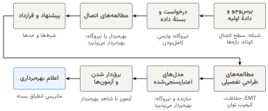
هر مطالعه چه ثابت میکند؟ معیارِ تسلطِ این فصل این است که برای هر مطالعه بدانید چه چیزی را ثابت میکند، چه دادهای میخواهد، چه کسی آن را تأیید میکند و چه شاهدی الزام را میبندد:
| مطالعه | چه ثابت میکند | دادهٔ اصلی | تأیید | شاهدِ بستن |
|---|---|---|---|---|
| پخشِ بار و ولتاژ | ولتاژها و جریانها در بازه، توانِ واکنشی در نقطهٔ اتصال | شبکهٔ معادل، تجهیزات، توانایی P-Q | بهرهبردار | آزمونِ توانایی و پله |
| اتصالِ کوتاه | رتبهٔ تجهیزات کافی است و حفاظت میبیند | سطحِ کمینه و بیشینه، امپدانسها، رفتارِ مبدل | مهندسِ دارای صلاحیت | گزارش و رتبهها |
| هماهنگیِ حفاظت | خطا با گزینش و در زمان پاک میشود | تنظیمهای دو سرِ خط، CT و VT | بهرهبردار در مرزِ مشترک | آزمونِ تزریق و سرتاسری |
| عبور از خطا و پویایی | نیروگاه در فرورفت میماند و درست پاسخ میدهد | مدلهای RMS و EMT با نسخه | بهرهبردار | آزمونِ نوعی و مدلِ اعتبارسنجیشده |
| فرکانس و خدمتها | پاسخ در اندازه و زمانِ خواسته | مدلِ کنترلکننده، جای بالارو | بهرهبردار | آزمونِ تزریقِ فرکانس |
| شبکهٔ ضعیف | کنترلها پایدارند، با همسایهها | مدلِ EMT همهٔ نیروگاههای نزدیک | بهرهبردار | گزارشِ مطالعه |
| پیشامد و صادرات | محدودیتهای بهرهبرداری و انرژیِ در خطر | رتبه و نرخِ خرابیِ اجزا | مالک و بهرهبردار | محدودیت در دستورالعمل |
مثال 28.1 (در امکانسنجی چه میتوان مطالعه کرد؟) پرسش. در مرحلهٔ امکانسنجی بهرهبردار فقط سطحِ اتصالِ کوتاه، X/R و بازهٔ ولتاژِ نقطهٔ اتصال را داده است. کدام مطالعهها معنا دارند و کدام نه؟
پاسخ. پخشِ بار در چند حالت و غربالِ اتصالِ کوتاه معنا دارند؛ مطالعهٔ پویا، شبکهٔ ضعیف و هماهنگیِ حفاظت نه، چون مدلِ شبکه، مدلهای واحد و تنظیمهای سرِ شبکه هنوز نیستند.
تفسیر. هر مرحله فقط با دادهای که آن مرحله میتواند داشته باشد مطالعه میکند و مرحلهٔ بعد همان مطالعه را با دادهٔ بهتر تکرار میکند؛ جدولِ مرحلهها و ورودیهایشان در مثال 28.58 آمده است. وارسی: پنج ورودیِ امکانسنجی همه رسیدهاند (بخش 28.2.3).
خطاهای رایج.
- شروعِ مطالعهٔ پویا با مدلِ عمومیِ واحد وقتی بهرهبردار مدلِ سازنده را میخواهد.
- یکی گرفتنِ «مطالعه نشان داد» با «نیروگاه انجام داد»: اولی توانایی است، دومی شاهد.
- نوشتنِ عددِ یک کشورِ دیگر بهجای الزامی که هنوز از بهرهبردار نرسیده است.
- چرا اتصالِ کوتاه هم با سطحِ بیشینه و هم با کمینه مطالعه میشود؟
- شاهدِ بستنِ الزامِ عبور از خطا چیست، و چرا مطالعه بهتنهایی کافی نیست؟
- کدام مطالعه به مدلِ همسایهها نیاز دارد؟
28.2.2 دادهٔ نقطهٔ اتصال: معادلِ تونن در دو حالت
ایده. از دیدِ نیروگاه، کلِ شبکهٔ پشتِ نقطهٔ اتصال در مطالعههای ماندگار یک معادلِ تونن است (به انگلیسی Thevenin equivalent): ولتاژی پشتِ یک امپدانس. بهرهبردار دو عدد میدهد: سطحِ اتصالِ کوتاه \(S_\text{sc}\) و نسبتِ \(X/R\)؛ امپدانس بر پایهٔ \(S_\text{b}\) از آنها ساخته میشود:
\[ |z_\text{th}| = \frac{S_\text{b}}{S_\text{sc}}, \qquad R_\text{th} = \frac{|z_\text{th}|}{\sqrt{1 + (X/R)^2}}, \qquad X_\text{th} = (X/R)\,R_\text{th} \tag{28.1}\]
مهمتر از خودِ عدد، دو حالت است: بیشینه (همهٔ شبکه در مدار؛ بزرگترین جریانِ خطا) و کمینه (یک عنصرِ مهمِ شبکه خارج؛ ضعیفترین شبکه):
the POC seen as a Thevenin source (132 kV, base 100 MVA)
case S_sc MVA X/R z pu R ohm X ohm I_k kA SCR (100 MW)
max 1500 8 0.0667 1.44 11.5 6.56 15.0
min 900 6 0.1111 3.18 19.1 3.94 9.0
the maximum case sizes equipment (largest fault current);
the minimum case tests protection sensitivity, voltage
changes and control stability (weakest grid) - a study
asks the operator for both, with the outages behind eachمثال 28.2 (یک نقطهٔ اتصال، دو شبکه) پرسش. با 900 MVA و \(X/R = 6\)، امپدانسِ پریونیت، اهمِ واکنشی در 132 kV، جریانِ اتصالِ کوتاه و نسبتِ اتصالِ کوتاه برای 100 MW چیست؟
پاسخ. 0.111 پریونیت، 19.1 اهم، 3.94 kA و ۹.
تفسیر. حالتِ بیشینه رتبهٔ تجهیزات را میسنجد و حالتِ کمینه حساسیتِ حفاظت، تغییرِ ولتاژ و پایداریِ کنترل را؛ مطالعهای که فقط یکی را دارد نیمه است. بهرهبردار باید بگوید هر حالت با کدام خروجِ شبکه ساخته شده است (A-341: عددهای کمینهٔ این فصل آموزشیاند). وارسی: \(100/900 = 0.111\) و \(0.111/\sqrt{37} \times 6 \times 174.24 = 19.1\,\Omega\).
28.2.3 وضعِ ورودیهای مطالعه
ایده. پیش از هر مطالعه، فهرستِ ورودیها با مالک و وضعشان (رسیده، درخواستشده، فرضشده، گمشده) نشان میدهد کدام مطالعه میتواند شروع شود. سی قلمِ نیروگاهِ P میانِ سه مالک تقسیم شدهاند:
state of the study inputs for Plant P's POC (register of 30 items)
owner received requested assumed missing total
operator 4 5 1 3 13
plant 7 0 1 2 10
OEM 5 2 0 0 7
studies waiting for at least one input: B, C, E, F, G, all, ch27
9 of the operator's 13 items are still open: a study started
now runs on assumptions, and each is logged with the
result it could changeمثال 28.3 (نُه قلمِ باز از سیزده) پرسش. چند قلم از ورودیهای بهرهبردار هنوز باز است و پیامدش برای مطالعهها چیست؟
پاسخ. نُه از سیزده؛ هر مطالعهای جز امکانسنجی دستکم یک ورودیِ باز دارد.
تفسیر. مطالعهای که اکنون شروع شود روی فرضها میدود و هر فرض با نتیجهای که میتواند تغییر دهد در دفترِ فرضها ثبت میشود (بخش 28.5.3). درخواستِ داده با تاریخ و پیگیری بخشی از مدیریتِ پروژه است، نه کارِ جانبیِ مهندسِ مطالعه. وارسی: \(5 + 1 + 3 = 9\) قلمِ نرسیدهٔ بهرهبردار.
- امپدانسِ پریونیتِ 1,200 MVA با \(X/R = 10\) چیست؟
- اگر حالتِ کمینه از بیشینه بزرگتر گزارش شده باشد، چه میکنید؟
- چرا ورودیِ «فرضشده» با کیفیتِ C در دفترِ فرضها میآید؟
28.2.4 مدلها: کدام مدل برای کدام پرسش
ایده. مطالعهٔ شبکه با مدل انجام میشود و هر مدل برای پرسشی ساخته شده است. سه خانوادهٔ اصلی:
- مدلِ ماندگار (پخشِ بار و اتصالِ کوتاه): امپدانسها، تپها، توانایی P-Q؛ پرسش: «در حالتِ پایدار کجا میایستد؟».
- مدلِ RMS (به انگلیسی root-mean-square, phasor): فازورهای بسامدِ اصلی با کنترلها، برای پدیدههای دهها میلیثانیه تا دهها ثانیه (عبور از خطا، فرکانس، کنترلِ ولتاژ). مدلهای عمومیِ استاندارد (STD-105) یا مدلهای سازنده.
- مدلِ EMT (به انگلیسی electromagnetic transient): شکلِ موجِ لحظهای با کنترلِ واقعیِ مبدل، معمولاً جعبهسیاهِ رمزشدهٔ سازنده؛ برای شبکهٔ ضعیف، برهمکنشِ مبدلها، کلیدزنی و تشدید.
نسخه و مالکیت. مدل به نسخهٔ میانافزار (به انگلیسی firmware) و تنظیمها بسته است: مدلی که با میانافزارِ دیگری ساخته شده، دربارهٔ واحدِ نصبشده چیزی ثابت نمیکند. مدلهای سازنده محرمانهاند و با قراردادِ استفاده به بهرهبردار میرسند؛ مالکِ مدلِ شبکه بهرهبردار است و مالکِ دادهٔ نیروگاه، خودِ نیروگاه. ثبتِ نسخهها و مقایسهشان با محل در بخش 28.7.3 آمده است.
مثال 28.4 (مدل برای پرسش) پرسش. برای هر پرسش، کدام خانوادهٔ مدل؟ (الف) آیا ولتاژِ پایانهٔ واحدها در بارِ کامل در بازه است؟ (ب) آیا نیروگاه در فرورفتِ 0.2 پریونیتی میماند؟ (ج) آیا کنترلِ سه نیروگاهِ مبدلمحورِ همجوار با هم نوسان میکنند؟
پاسخ. (الف) ماندگار؛ (ب) RMS برای رفتارِ نیروگاه و آزمونِ نوعیِ واحد برای تواناییاش، EMT اگر شبکه ضعیف باشد؛ (ج) EMT با مدلِ هر سه.
تفسیر. مدلِ سادهتر سریعتر و شفافتر است، ولی پدیدهای را که ندارد نمیبیند: یک مدلِ RMS با فازورِ بسامدِ اصلی برهمکنشِ صدها هرتزیِ کنترلها را اصلاً نمایش نمیدهد. انتخابِ مدل خودش بخشی از دامنهٔ مطالعه است و بهرهبردار آن را میپذیرد. وارسی: جدولِ جدول 28.1 هر مطالعه را به نوعِ مدلش پیوند میدهد.
- چرا مدلی با میانافزارِ قدیمیتر برای واحدِ نصبشده شاهد نیست؟
- یک پدیده نام ببرید که مدلِ RMS نمیبیند.
- مالکِ مدلِ شبکه کیست و نیروگاه چگونه به آن دسترسی مییابد؟
28.2.5 تجمیعِ مدل: کجا کافی است؟
ایده. مدلِ مطالعهٔ این فصل هر فیدر را در نیمِ طولش با یک واحدِ تجمیعشده میگذارد. آیا این سادهسازی بس است؟ یک رشتهٔ بادی را یک بار توربین به توربین و یک بار تجمیعشده حل میکنیم:
def string_flow(n_units: int, km_each: float, aggregated: str = "") -> dict:
"""One wind string at full output from a stiff 33 kV bus: turbine by
turbine, or aggregated at a fraction of its length ('half', 'third')."""
r20, x, c = src.CABLE[630]
r = src.r_hot(r20)
ux, ur = 0.06 * 100 / 5.6, 0.009 * 100 / 5.6 # one unit transformer
if aggregated:
frac = {"half": 0.5, "third": 1 / 3}[aggregated]
km = n_units * km_each * frac
br = [gs.Branch(0, 1, r * km / ZB33, x * km / ZB33),
gs.Branch(1, 2, ur / n_units, ux / n_units)]
p, q = [0, 0, n_units * 0.05], [0, 0, n_units * 5.6 * 0.12 / 100]
kinds = ["slack", "pq", "pq"]
else:
br, p, q, kinds = [], [0.0], [0.0], ["slack"]
zc = (r * km_each / ZB33, x * km_each / ZB33)
for k in range(n_units): # cable node k+1, unit 1+n+k
br.append(gs.Branch(k, k + 1, *zc))
for k in range(n_units):
br.append(gs.Branch(k + 1, n_units + 1 + k, ur, ux))
p += [0.0] * n_units + [0.05] * n_units
q += [0.0] * n_units + [5.6 * 0.12 / 100] * n_units
kinds += ["pq"] * (2 * n_units)
n = len(kinds)
res = gs.load_flow(gs.ybus(n, br), kinds, p, q, [1.0] * n)
fl = gs.flows(res["v"], br)
loss = sum(f["loss"].real for f in fl)
return {"v_last": abs(res["v"][-1]), "loss_kw": 1e5 * loss}one wind string (4 turbines, 1.1 km apart, 630 mm2) at full output
model V at the far unit losses kW
turbine by turbine 1.0169 200.6
aggregated at half length 1.0162 203.3
aggregated at a third 1.0154 188.7
at half length the losses agree within about 1 %; at a
third they come out 6 % low - with turbines one span apart
from the bus the loss-equivalent length is near half (a
third holds for load spread evenly from the bus); the far
turbine's terminal is within 0.1 % here, but on a long
string it is checked with the detailed string, not the
aggregateمثال 28.5 (نیم یا یکسوم؟) پرسش. تلفِ رشته در سه مدل چیست و کدام طولِ معادل درستتر است؟
پاسخ. 200.6، 203.3 و 188.7 kW؛ نیمِ طول در حدودِ یک درصد درست است.
تفسیر. با جریانهای \(4I, 3I, 2I, I\) در چهار بخش، تلف با \(16 + 9 + 4 + 1 = 30\) متناسب است؛ واحدِ تجمیعشده با \(4I\) همان تلف را در طولِ \(30/16 \times 1.1 = 2.06\,\text{km}\) میدهد، نزدیکِ نیمِ 4.4 km. «یکسوم» برای باری است که از خودِ شینه یکنواخت پخش باشد. مدلِ تجمیعشده برای نقطهٔ اتصال و کلِ نیروگاه درست است؛ پایانهٔ دورترین توربین در رشتهٔ بلند با مدلِ جزئی وارسی میشود. وارسی: \(2.06/4.4 = 0.47\).
- طولِ معادلِ تلف برای سه توربینِ همفاصله از یک دهانه دورتر از شینه؟
- چرا ولتاژِ واحدِ تجمیعشده میانِ نخستین و آخرین توربین است؟
28.2.6 کیفیتِ بستهٔ ارسالی: وارسی پیش از مطالعه
ایده. بیشترِ خطاهای مطالعه از داده میآیند نه از روش: پایهٔ اشتباهِ امپدانس، یکای اشتباه، شمارِ ناهمخوان، طولی که با نقشه نمیخواند. چند وارسیِ ساده و خودکار پیش از هر اجرا اینها را میگیرد:
SHEET = { # a submitted data sheet with planted errors (teaching)
"main transformer": dict(s_mva=63.0, uk_pct=12.0, base_mva=100.0),
"line": dict(km_drawing=7.06, km_sheet=7.60, c_per_km=9.0, c_unit="uF"),
"units": dict(wind_in_model=13, wind_on_one_line=12, mv_kv=34.5),
"grid": dict(s_sc_max=1500.0, s_sc_min=1700.0, xr=8.0),
}
def check_sheet(sh: dict) -> list[tuple[str, bool, str]]:
t, ln = sh["main transformer"], sh["line"]
u, g = sh["units"], sh["grid"]
c_ok = ln["c_unit"] == "nF" or ln["c_per_km"] < 0.05
return [
("uk stated on own rating", t["base_mva"] == t["s_mva"],
f"uk {t['uk_pct']} % on {t['base_mva']:.0f} MVA, not 63"),
("line length agrees",
abs(ln["km_drawing"] - ln["km_sheet"]) < 0.05,
f"{ln['km_sheet']} km sheet, {ln['km_drawing']} km drawing"),
("line capacitance plausible", c_ok,
f"{ln['c_per_km']} {ln['c_unit']}/km: 1,000 x too large"),
("unit count agrees",
u["wind_in_model"] == u["wind_on_one_line"],
f"{u['wind_in_model']} in model, "
f"{u['wind_on_one_line']} on one-line"),
("MV nominal voltage", u["mv_kv"] == 33.0,
f"{u['mv_kv']} kV, the plant is 33 kV"),
("min below max", g["s_sc_min"] < g["s_sc_max"],
f"min {g['s_sc_min']:.0f} > max {g['s_sc_max']:.0f} MVA"),
("X/R plausible", 3 <= g["xr"] <= 20, f"X/R {g['xr']}"),
]checks on a submitted study data sheet (planted errors, teaching)
check result note
uk stated on own rating FAIL uk 12.0 % on 100 MVA, not 63
line length agrees FAIL 7.6 km sheet, 7.06 km drawing
line capacitance plausible FAIL 9.0 uF/km: 1,000 x too large
unit count agrees FAIL 13 in model, 12 on one-line
MV nominal voltage FAIL 34.5 kV, the plant is 33 kV
min below max FAIL min 1700 > max 1500 MVA
X/R plausible pass
6 of 7 checks fail; each would have cost a study run
(or worse, passed into an approved result) - a submission
is checked for units, bases, counts and consistency with
the drawings before any study startsمثال 28.6 (شش از هفت) پرسش. کدام خطای این برگهٔ داده بیشترین اثر را بر نتیجه دارد و چرا؟
پاسخ. امپدانسِ ترانسفورماتور روی پایهٔ نادرست: 12 % روی 100 MVA بهجای 63 MVA یعنی واکنشیِ 0.12 بهجای 0.19 پریونیت، که ولتاژها، توانِ واکنشی و جریانِ خطا را همه جابهجا میکند.
تفسیر. ظرفیتِ خازنیِ هزار برابر هم خطرناک است (خط را به یک بانکِ خازنِ بزرگ بدل میکند)، ولی معمولاً آنقدر عجیب است که دیده میشود؛ خطای پایه عددی معقول میسازد و پنهان میماند. هر بستهٔ ارسالی پیش از مطالعه از این وارسیها میگذرد و نتیجهاش در سابقه میماند. وارسی: \(0.12 \times 100/63 = 0.19\).
خطاهای رایج.
- پذیرفتنِ برگهٔ داده چون «سازنده داده است».
- اصلاحِ یک عدد در مدل بیآنکه برگهٔ داده و سابقهٔ تغییر هم اصلاح شود.
- امپدانسِ 12 % روی 63 MVA بر پایهٔ 100 MVA چند است؟
- یک وارسیِ دیگر پیشنهاد کنید که این برنامه ندارد.
28.2.7 برنامهٔ مطالعه بهصورتِ شبکهٔ کارها
ایده. مطالعهٔ اتصال یک پروژهٔ کوچک است با مسیرِ بحرانیِ خودش (فصلِ ۲۲): هر مطالعه منتظرِ ورودیهایی است که دیگران میدهند. با مدتهای آموزشی، روشِ مسیرِ بحرانی مدتِ کل، کارهای بحرانی و شناوریِ بقیه را میدهد:
the study programme as a network of tasks (months, teaching)
total: 12.5 months; critical path:
data request
network model (operator)
steady-state studies
dynamic RMS studies
EMT studies
report and check
operator review
slack of the tasks not on it (months):
RMS models (OEM) 2.5
EMT models (OEM) 2.5
grid-end settings (operator) 4.0
protection study 2.5
if the EMT models arrive 3 months late: 13.0 months,
the critical path then runs through them - the OEM's EMT
model is ordered with the equipment, not after itمثال 28.7 (مدلِ EMT را با تجهیزات سفارش دهید) پرسش. مدتِ کلِ برنامه چیست و اگر مدلهای EMT سه ماه دیر برسند چه میشود؟
پاسخ. 12.5 ماه؛ با تأخیر 13.0 ماه و مسیرِ بحرانی از مدلهای EMT میگذرد.
تفسیر. مسیرِ بحرانی از مدلِ شبکهٔ بهرهبردار میگذرد؛ مدلهای EMT 2.5 ماه شناوری دارند و تأخیرِ سهماهه از آن میگذرد. درسِ مدیریتی: مدلِ EMT سازنده در قراردادِ خرید و همراهِ تجهیزات سفارش داده میشود، نه پس از آن (فصلِ ۳۹)، و درخواستِ مدلِ شبکه نخستین کارِ برنامه است. وارسی: \(1 + 3 + 1.5 + 2 + 2 + 1 + 2 = 12.5\).
- اگر مدلِ شبکه یک ماه زودتر برسد، مدتِ کل چه میشود؟
- شناوریِ مطالعهٔ حفاظت چیست و چه معنایی دارد؟
28.3 ب. مطالعههای ماندگار و خطا
28.3.1 پخشِ بار با نیوتن–رافسون
ایده. پخشِ بار (به انگلیسی load flow) میپرسد: با توانهایی که واحدها تزریق میکنند و ولتاژِ منبعِ شبکه، ولتاژِ هر شینه چیست و از هر شاخه چه توانی میگذرد؟ شبکه با ماتریسِ ادمیتانسِ شینه \(\mathbf{Y}\) توصیف میشود و توانِ تزریقی به شینهٔ \(k\):
\[ S_k = P_k + jQ_k = V_k \left(\sum_j Y_{kj} V_j\right)^{*} \tag{28.2}\]
این معادلهها در ولتاژها ناخطیاند. روشِ نیوتن–رافسون (فصلِ ۳) از یک حدس شروع میکند، اختلافِ توانِ حسابشده و خواسته را میسازد، با ماتریسِ ژاکوبی زاویهها و اندازهها را اصلاح میکند و تکرار میکند تا اختلاف ناچیز شود. یک شینه مرجع (منبعِ شبکه) است، شینههای PQ توان را میدانند و ولتاژ را میجویند:
def load_flow(y: np.ndarray, kind, p, q, v_set, tol: float = 1e-9,
max_iter: int = 30) -> dict:
"""Newton-Raphson load flow in polar form. kind[k] is 'slack', 'pv'
or 'pq'; p, q are specified injections (generation positive, pu);
v_set holds the voltage magnitude of slack and pv buses."""
n = len(kind)
live = _energised(y, [k for k in range(n) if kind[k] == "slack"])
pv = [k for k in range(n) if kind[k] == "pv" and k in live]
pq = [k for k in range(n) if kind[k] == "pq" and k in live]
pvpq = pv + pq
vm = np.array([(v_set[k] if kind[k] != "pq" else 1.0) if k in live else 0.0
for k in range(n)])
va = np.zeros(n)
p, q = np.asarray(p, float), np.asarray(q, float)
for it in range(max_iter + 1):
v = vm * np.exp(1j * va)
i = y @ v
s = v * np.conj(i)
mis = np.r_[p[pvpq] - s.real[pvpq], q[pq] - s.imag[pq]]
if np.max(np.abs(mis)) < tol:
return {"v": v, "s": s, "iterations": it}
vn = np.divide(v, vm, out=np.zeros_like(v), where=vm > 0)
ds_dva = 1j * np.diag(v) @ np.conj(np.diag(i) - y @ np.diag(v))
ds_dvm = (np.diag(v) @ np.conj(y @ np.diag(vn))
+ np.conj(np.diag(i)) @ np.diag(vn))
jac = np.block([
[ds_dva.real[np.ix_(pvpq, pvpq)], ds_dvm.real[np.ix_(pvpq, pq)]],
[ds_dva.imag[np.ix_(pq, pvpq)], ds_dvm.imag[np.ix_(pq, pq)]]])
try:
dx = np.linalg.solve(jac, mis)
except np.linalg.LinAlgError as err:
raise RuntimeError("load flow did not converge") from err
va[pvpq] += dx[:len(pvpq)]
vm[pq] += dx[len(pvpq):]
raise RuntimeError("load flow did not converge")مدلِ مطالعه. نیروگاهِ P از نقطهٔ اتصال تا واحدها در بیستویک شینه (شکل 28.2): معادلِ تونن، خطِ 7.06 km، دو ترانسفورماتورِ 63 MVA با تپ، دو نیمهٔ شینهٔ 33 kV و هشت فیدر. هر فیدر در نیمِ طولش مدل میشود (تولید در طولِ آن پخش است) و ترانسفورماتورهای واحدش تجمیع میشوند (A-342).
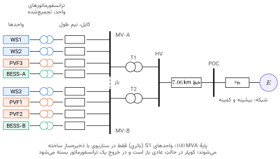
مثال 28.8 (دو شینه با دست) پرسش. منبعِ 1.0 پریونیت از راهِ واکنشیِ \(x = 0.1\) باری با \(P = 1\) و \(Q = 0\) را تغذیه میکند. ولتاژِ بار با دست و با برنامه چیست؟
پاسخ. با ولتاژِ بار \(v\) بهعنوانِ مرجع، \(V_1 = v + j\,0.1/v\) و \(|V_1| = 1\)؛ پس \(v^4 - v^2 + 0.01 = 0\) و \(v = 0.99494\). برنامه همین را تا نُه رقم میدهد (آزمونِ نخستِ پروندهٔ آزمونِ این فصل).
تفسیر. حلِ دستنوشته فقط برای دو شینه شدنی است؛ ارزشش این است که برنامه را در موردی با پاسخِ معلوم میسنجد، پیش از آنکه به بیستویک شینه سپرده شود (فصل 3). وارسی: \(v^2 = (1 + \sqrt{0.96})/2 = 0.9899\).
خطاهای رایج.
- همگرا نشدنِ پخشِ بار را «خطای نرمافزار» دانستن: اغلب یعنی آن حالتِ کاری شدنی نیست (فروپاشیِ ولتاژ) یا داده غلط است.
- رها کردنِ شینههای بیبرق در مدل (یک فیدرِ خارجشده): ماتریس تکین میشود؛ برنامهٔ این فصل آنها را جدا میکند.
- چرا یک شینه باید «مرجع» باشد؟
- با \(x = 0.2\) و همان بار، ولتاژِ بار با دست؟
- چرا فیدر در نیمِ طولش مدل میشود؟
28.3.2 حالتهای پخشِ بار: کنترلکننده و تپچنجر با هم
ایده. یک پخشِ بار یک عکس است؛ مطالعه حالتها را میپوشاند: شبکهٔ بیشینه و کمینه، ولتاژِ منبع در لبههای بازه، توانِ کامل و صفر. در هر حالت دو کنترل با هم کار میکنند: کنترلکنندهٔ نیروگاه توانِ واکنشیِ نقطهٔ اتصال را صفر نگه میدارد (ضریبِ توانِ یک، مگر خواستهای دیگر) و تپچنجرِ ترانسفورماتورهای اصلی شینهٔ 33 kV را نزدیکِ 1.00 پریونیت:
load-flow cases at full output, Q = 0 at the POC (S0, teaching)
grid source tap % V POC V MV-A V unit max unit q pu loss MW
max 0.95 -2.5 0.956 0.995 1.013 0.121 1.84
max 1.00 +2.5 1.006 0.995 1.013 0.120 1.79
max 1.05 +7.5 1.056 0.995 1.013 0.118 1.74
min 0.95 -2.5 0.962 1.001 1.018 0.120 1.82
min 1.00 +2.5 1.012 1.001 1.018 0.118 1.77
min 1.05 +7.5 1.062 1.001 1.018 0.116 1.72
night, units idle: POC gets +2.4 Mvar from cables and line, V POC 1.002
the taps keep the 33 kV bus near 1.00 and the units inside
their band in every case; the units supply about 12 % of
their rating as reactive power just to cancel what the
transformers and line absorb at full output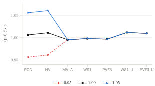
مثال 28.9 (تپ کارِ ولتاژ را میکند، واحدها کارِ توانِ واکنشی را) پرسش. با ولتاژِ منبعِ 1.05 پریونیت در شبکهٔ بیشینه، تپ کجاست، ولتاژِ پایانهٔ واحدها چقدر است و واحدها چه سهمی از رتبهشان را توانِ واکنشی میدهند؟
پاسخ. تپ +7.5 %؛ پایانهها حداکثر 1.013؛ واحدها 0.118 از رتبه.
تفسیر. بیتپ، ولتاژِ منبعِ 1.05 تا پایانهها میرسید و بالاتر میرفت؛ تپ آن را در ترانسفورماتورِ اصلی جذب میکند. واحدها حدودِ دوازده درصدِ رتبهشان را فقط برای جبرانِ توانِ واکنشیای میدهند که ترانسفورماتورها و خط میکشند (بخش 28.3.3). در شب، کابلها و خط 2.4 Mvar به نقطهٔ اتصال میفرستند (همان یافتهٔ فصلِ ۲۵). وارسی: \(1 + 6 \times 0.0125 = 1.075\)؛ ولتاژِ 33 kV در همهٔ حالتها 0.995 تا 1.001.
- چرا ولتاژِ نقطهٔ اتصال در شبکهٔ کمینه کمی بالاتر است؟
- اگر تپچنجر روی +10 % گیر کند و منبع 0.95 باشد، چه انتظار دارید؟
28.3.3 ترازِ توانِ واکنشی و توانایی در نقطهٔ اتصال
ایده. توانِ واکنشیِ واحدها به نقطهٔ اتصال نمیرسد مگر پس از گذر از ترانسفورماتورهای واحد، کابلها، ترانسفورماتورهای اصلی و خط؛ هر کدام سهمی میکشد (یا کابلها میدهند). توانایی در نقطهٔ اتصال آن است که واحدها با حدِ جریانشان بدهند و ولتاژِ پایانهشان در بازه بماند (0.90 تا 1.10 پریونیت):
reactive balance at full output with Q = 0 at the POC (grid max, 1.00)
units supply 14.6 Mvar
absorbed by unit transformers 5.1 Mvar
absorbed by 33 kV cables -1.7 Mvar
absorbed by main transformers 9.9 Mvar
absorbed by 132 kV line 1.3 Mvar
delivered at the POC 0.0 Mvar
reactive capability at the POC at full output (units inside 0.90-1.10 pu)
grid source giving Mvar (share) absorbing Mvar (share)
max 0.95 46.1 (1.00) -75.2 (0.78)
max 1.00 46.3 (1.00) -91.8 (1.00)
max 1.05 48.2 (1.00) -89.3 (1.00)
min 0.95 46.3 (1.00) -63.3 (0.62)
min 1.00 47.3 (1.00) -82.4 (0.87)
min 1.05 40.4 (0.86) -90.5 (1.00)
share = part of the units' current limit usable before a
terminal leaves its band; a teaching requirement of +/-33
Mvar at 100 MW is met in every case; the least margin is
in giving: 40 Mvar on the weak grid at 1.05, where unit
terminals reach 1.10, and about 46 elsewhere - below the
simpler estimate of ch 27 (56 Mvar), which left out the
unit transformersمثال 28.10 (کجا گم میشود؟) پرسش. در توانِ کامل با \(Q = 0\) در نقطهٔ اتصال، واحدها چه میدهند و کجا جذب میشود؟ کمحاشیهترین حالتِ توانایی کدام است؟
پاسخ. 14.6 Mvar: ترانسفورماتورهای اصلی 9.9، ترانسفورماتورهای واحد 5.1، خط 1.3، و کابلها 1.7 میدهند. کمحاشیهترین: 40 Mvar دادن در شبکهٔ ضعیف و ولتاژِ 1.05، جایی که پایانهها به 1.10 میرسند.
تفسیر. یک الزامِ آموزشیِ ±33 Mvar در 100 MW در همهٔ حالتها برآورده است؛ ولی عددِ سادهترِ فصلِ ۲۷ (56 Mvar) خوشبین بود چون ترانسفورماتورهای واحد را نداشت. در جذب، محدودیت پایانههای کمولتاژ است (سهمِ 0.62 در شبکهٔ ضعیف و 0.95). اثرِ دما در بخش 28.7.1 میآید. وارسی: \(9.9 + 5.1 + 1.3 - 1.7 = 14.6\).
خطاهای رایج.
- جمع کردنِ توانِ واکنشیِ واحدها و گزارشِ آن بهجای توانایی در نقطهٔ اتصال.
- نادیده گرفتنِ حدِ ولتاژِ پایانه: واحد شاید جریان داشته باشد ولی ولتاژ اجازه ندهد.
- چرا ترانسفورماتورِ اصلی بیشترین توانِ واکنشی را میکشد؟
- چرا در جذب، حالتِ «شبکهٔ ضعیف و ولتاژِ کم» محدودکننده است؟
28.3.4 پایداریِ ولتاژ، حساسیتِ شینهها و حدِ تپها
منحنیِ P-V. پخشِ بار تا جایی جواب دارد که شبکه بتواند توان را برساند. اگر خروجیِ نیروگاه در مطالعه (نه در واقعیت) پلهپله بالا برود، ولتاژِ نقطهٔ اتصال کمکم میافتد و سرانجام پخشِ بار دیگر جوابی ندارد: «دماغهٔ» منحنی، حدِ پایداریِ ولتاژِ اتصال است:
def nose(grid: str, q_pu: float = 0.0, step: float = 0.05) -> list:
"""Raise the plant's output in steps (beyond its real size, as a
study does) until the load flow no longer solves; returns
(MW at the POC, POC voltage) points up to the last solution."""
pts, x = [], 0.0
while True:
try:
r = src.solve({"wind": x, "pv": x}, q_pu, grid=grid)
except RuntimeError:
return pts
pts.append((r["s_poc"].real, r["v"][1]))
x += stepP-V curves at the POC: output raised (in study only) until no solution
grid unit q last solved MW POC V there margin over 100 MW
max 0.00 226 0.896 2.3 x
max 0.12 238 0.913 2.4 x
min 0.00 197 0.860 2.0 x
min 0.12 209 0.896 2.1 x
the plant is far from the voltage-stability limit of its
connection (about twice its size); the weak grid lowers
the limit by about an eighth and the units' reactive power
moves it out again - a study shows the margin,
it does not assume it (a weak connection or a long line
can bring the nose close to the plant's own output)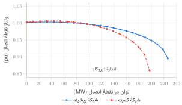
مثال 28.11 (دو برابرِ اندازه) پرسش. حدِ پایداریِ ولتاژ در شبکهٔ بیشینه و کمینه کجاست و حاشیه نسبت به 100 MW چقدر است؟
پاسخ. 226 و 197 MW؛ حدودِ 2.3 و 2.0 برابرِ اندازهٔ نیروگاه.
تفسیر. نیروگاهِ P از حدِ اتصالش دور است؛ ولی اتصالِ ضعیفتر یا خطِ بلندتر دماغه را به خروجیِ خودِ نیروگاه نزدیک میکند، پس مطالعه حاشیه را نشان میدهد و فرضش نمیکند. توانِ واکنشیِ واحدها دماغه را دورتر میبرد (238 و 209 MW). وارسی: ولتاژ در دماغه حدودِ 0.86 تا 0.91، همانجا که منحنی تند میشود (شکل 28.4).
حساسیتِ شینهها. ده مگاوار بیشتر از واحدها هر شینه را به اندازهٔ امپدانسِ میانِ آن و شبکه جابهجا میکند:
voltage change at each bus for 10 Mvar more from the units (grid max)
bus V before V after dV per 10 Mvar %
POC 1.0067 1.0133 0.66
HV 1.0117 1.0200 0.82
MV-A 1.0211 1.0386 1.75
WS1 end 1.0237 1.0415 1.78
WS1 units 1.0371 1.0594 2.23
PVF3 units 1.0351 1.0572 2.21
the same 10 Mvar moves the POC by about 0.7 % and the
units' own terminals by more: the impedance between them
adds up - a unit controller that 'sees' its terminal moves
further than the POC does, which is why the plant
controller, not the units, regulates the POC voltageحدِ تپها. آیا تپچنجر در همهٔ بازهٔ ولتاژِ شبکه شینهٔ 33 kV را نگه میدارد؟
can the taps hold the 33 kV bus at 1.00 +/- 0.0125? (grid min)
source V P 0 MW P 50 MW P 100 MW
0.90 -10.0 % ok -6.2 % ok -7.5 % ok
0.95 -5.0 % ok -1.2 % ok -2.5 % ok
1.00 +0.0 % ok +3.8 % ok +2.5 % ok
1.05 +5.0 % ok +8.7 % ok +7.5 % ok
1.10 +10.0 % ok +10.0 % OUT +10.0 % OUT
the taps hold the 33 kV bus everywhere but at the top of
the grid's band with output: at 1.10 pu they reach their
+10 % end stop and the bus rises out of band; there the
units must absorb reactive power (or the tap range is
widened) - the study names the remedy and the operator
confirms how often the grid sits at 1.10مثال 28.12 (سرِ بالای بازه) پرسش. در کدام حالت تپها به ته میرسند، و ده مگاوار در نقطهٔ اتصال و پایانهٔ واحدها چه تغییری میدهد؟
پاسخ. ولتاژِ منبعِ 1.10 با خروجی: تپ +10 % و شینهٔ 33 kV بیرون از بازه. ده مگاوار: 0.66 % در نقطهٔ اتصال، 2.2 % در پایانهها.
تفسیر. در سرِ بالای بازه واحدها باید توانِ واکنشی جذب کنند (یا بازهٔ تپ پهنتر شود)؛ بهرهبردار میگوید شبکه چند وقت در 1.10 مینشیند. و چون پایانهها سه برابرِ نقطهٔ اتصال جابهجا میشوند، تنظیمِ ولتاژِ نقطهٔ اتصال کارِ کنترلکنندهٔ نیروگاه است، نه کنترلِ محلیِ واحدها (بخش 28.7.2). وارسی: \(10/1{,}500 = 0.67\,\%\).
- چرا دماغهٔ منحنیِ P-V با توانِ واکنشیِ واحدها دورتر میرود؟
- اگر شبکه زیاد در 1.10 پریونیت بنشیند، دو راه بگویید.
28.3.5 تلفها: مطالعه در برابرِ مدلِ انرژی
ایده. پخشِ بار تلفِ هر شاخه را میدهد. با چند نقطهٔ کار، منحنیِ تلفِ بار (\(\approx b\,P^2\)) برازش میشود و تلفِ بیباریِ ترانسفورماتورها (همهٔ سال) به آن افزوده میشود. این همان چیزی است که مدلِ انرژیِ فصلِ ۱۵ با یک فرضِ ساده نوشته بود؛ مطالعه آن را وارسی میکند:
electrical losses from the unit terminals to the POC (Q = 0 at the POC)
units MW load flow + no-load MW model 15.1 MW
20 0.27 0.16
40 0.47 0.34
60 0.80 0.64
80 1.26 1.06
100 1.85 1.60
fit: load losses = 1.66 x (P/100)^2 MW; no-load 199 kW all year
a year of model 15.1's hourly output: 4.41 GWh lost;
model 15.1 says 3.29 GWh
the energy model's 1.5 % at 100 MW and 0.10 MW no-load
are below the study's values: the unit transformers and
the reactive current were not in them - the next model
version takes the study's curve (a finding for ch 15/16)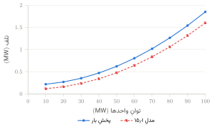
مثال 28.13 (یک گیگاواتساعتِ گمشده) پرسش. تلفِ سالانه به روشِ مطالعه و به روشِ مدلِ ۱۵٫۱ چیست و فرق از کجاست؟
پاسخ. 4.41 در برابرِ 3.29 GWh؛ حدودِ 1.1 GWh در سال (نزدیکِ 0.4 % انرژی).
تفسیر. مدلِ انرژی ترانسفورماتورهای واحد (بیباری و بار) و جریانِ واکنشی را نداشت. یافته به فصلهای ۱۵ و ۱۶ برمیگردد: نسخهٔ بعدیِ مدلِ انرژی منحنیِ مطالعه را میگیرد و بودجهٔ عدمِ قطعیت سهمی کوچکتر برای این قلم میخواهد. وارسی: \(1.66 \times 10^{-4} \times \sum P^2\) بهاضافهٔ \(0.199 \times 8{,}760 = 1.74\,\text{GWh}\) بیباری.
- تلفِ بار در 80 % توان چه کسری از تلف در توانِ کامل است؟
- چرا تلفِ بیباری در ساعتهای بیتولید هم شمرده میشود؟
28.3.6 اتصالِ کوتاه: شبکه و مبدلها
ایده. جریانِ اتصالِ کوتاه با روشِ منبعِ ولتاژِ معادل (STD-131) حساب میشود: ولتاژِ پیش از خطا با ضریبِ \(c\) (برای بیشینه بزرگتر از یک) پشتِ امپدانسِ دیدهشده از جای خطا. مبدلها ماشین نیستند؛ جریانِ خطایشان را کنترل میسازد و محدود میکند (حدودِ 1.1 تا 1.2 برابرِ نامی)، پس در مدل منبعِ جریان میشوند:
def fault_current(zb: np.ndarray, k: int, c: float = 1.1,
sources=()) -> dict:
"""Three-phase bolted fault at bus k (pu): the voltage source c of
the network behind the bus impedance matrix zb, plus converters as
current sources (bus, current pu) that inject reactive current
(lagging the pre-fault voltage) during the fault."""
z_kk = zb[k, k]
v_open = c + sum(zb[k, j] * (-1j * i_j) for j, i_j in sources)
i_grid = c / z_kk
i_total = v_open / z_kk
return {"grid": abs(i_grid), "converters": abs(i_total) - abs(i_grid),
"total": abs(i_total)}three-phase fault currents (kA), converters as 1.1 pu current sources
bus kV max: grid converters total min: grid only rating
POC 132 7.21 0.59 7.79 3.93 31.5
HV 132 5.76 0.58 6.34 3.41 31.5
MV-A 33 7.01 1.53 8.54 5.48 25.0
WS1 end 33 6.51 1.45 7.96 5.14 25.0
the converters add little at 132 kV and more at 33 kV,
where they sit close; switchgear is checked with the
maximum (c 1.1 and every source), protection reach and
sensitivity with the minimum (c 1.0, converters left out
because their fault current is controlled, not physical)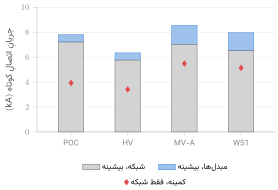
مثال 28.14 (بیشینه برای رتبه، کمینه برای حفاظت) پرسش. جریانِ خطا در شینهٔ MV-A در حالتِ بیشینه و کمینه چیست و با رتبهٔ 25 kA چه نسبتی دارد؟
پاسخ. 8.54 kA بیشینه (7.01 از شبکه و 1.53 از مبدلها)؛ 5.48 kA کمینه؛ هر دو بسیار زیرِ 25 kA.
تفسیر. سهمِ مبدلها در 132 kV کوچک است و در 33 kV، که نزدیکترند، بزرگتر. در حالتِ کمینه سهمِ مبدلها کنار گذاشته میشود چون کنترلشده است، نه فیزیکی، و حفاظت نباید روی آن حساب کند (بخش 28.6.3). عددها با حفاظتِ فصلِ ۲۶ و رتبههای فصلِ ۲۴ میخوانند. وارسی: \(1.1 \times 1{,}500/(\sqrt{3} \times 132) = 7.22\,\text{kA}\) در نقطهٔ اتصال، نزدیکِ 7.21.
قراردادِ این مدل. در این مدلِ آموزشی امپدانسِ شبکه از خودِ \(S_\text{sc}\) ساخته میشود و ضریبِ \(c\) سپس روی ولتاژ مینشیند. اگر \(S_\text{sc}\) همان توانِ اتصالِ کوتاهِ اعلامشدهٔ بهرهبردار باشد، STD-131 امپدانسِ شبکه را با ضریبِ \(c\) در خودش تعریف میکند (\(Z_\text{Q} = c\,U_\text{n}^2/S''_\text{kQ}\))؛ آنگاه سهمِ شبکه در نقطهٔ اتصال همان 6.56 kA است (مثال 28.2)، نه 7.21 kA. پس عددهای بیشینهٔ این جدول حدودِ 10 % محافظهکارانهاند: برای سنجشِ تجهیز بیخطرند، اما در مطالعهٔ واقعی تعریفِ عددِ اعلامشده را از بهرهبردار بپرسید.
- جریانِ خطای 132 kV برای 1,200 MVA، با و بی \(c = 1.1\)؟
- چرا مبدل در مدلِ اتصالِ کوتاه منبعِ جریان است، نه منبعِ ولتاژ پشتِ امپدانس؟
28.3.7 حفاظتِ خط با تغذیهٔ دوسویه
ایده. رلهٔ دیستانس امپدانسِ تا جای خطا را از ولتاژ و جریانِ محلِ خودش میسنجد. اگر خطا از راهِ مقاومتِ \(R_\text{f}\) باشد و سرِ دیگر هم به همان مقاومت جریان بدهد، رله امپدانسی بزرگتر از واقعی میبیند:
\[ Z_\text{app} = z_\text{f} + R_\text{f}\left(1 + \frac{I_\text{remote}}{I_\text{local}}\right) \tag{28.3}\]
برای خطِ نیروگاهِ P، جریانِ دو سر بسیار نابرابر است: شبکه چند هزار آمپر میدهد و نیروگاه، با مبدلها، کمی بیش از بارِ کامل:
a fault half-way along the 132 kV line through a resistance R_f:
impedance seen by the distance relay at each end (ohm, primary)
current into the fault: grid 6561 A, plant 588 A (full-load current 437 A)
R_f ohm grid end R + jX seen? plant end R + jX seen?
0.0 0.42 +1.41j yes 0.42 +1.41j yes
1.0 1.51 +1.40j yes 12.50 +2.80j NO
2.0 2.60 +1.39j yes 24.57 +4.18j NO
5.0 5.87 +1.36j yes 60.79 +8.33j NO
zone 1: X up to 2.26 ohm, R up to 10 ohm (teaching)
the grid end sees each fault; the plant end sees only the
bolted one - the grid's infeed multiplies the fault
resistance about twelve times, and the plant's fault
current is barely above full load: the line needs a
differential scheme or an intertrip to clear its plant end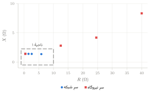
مثال 28.15 (سری که نمیبیند) پرسش. با خطای یکاهمی در میانهٔ خط، رلههای دو سر چه امپدانسی میبینند و کدام در ناحیهٔ ۱ است؟
پاسخ. سرِ شبکه \(1.51 + j1.40\) اهم، در ناحیه؛ سرِ نیروگاه \(12.5 + j2.8\) اهم، بیرون.
تفسیر. جریانِ زیادِ شبکه مقاومتِ خطا را از دیدِ سرِ نیروگاه حدودِ دوازده برابر میکند، و جریانِ خطای نیروگاه (588 A) فقط 1.35 برابرِ بارِ کامل است: نه دیستانس و نه جریانِ زیاد آن را مطمئن نمیبیند. پس خط حفاظتِ دیفرانسیل یا قطعِ متقابل (به انگلیسی intertrip) میخواهد تا سرِ نیروگاهش هم باز شود؛ این تصمیم در مرزِ مشترک با بهرهبردار گرفته میشود (فصلِ ۲۶، REQ-G19). وارسی: \(1 + 6{,}561/588 = 12.2\).
- با مقاومتِ خطای 2 اهم و نسبتِ تغذیهٔ ۱۰، رله چه مقاومتی میبیند؟
- چرا سرِ شبکه کمتر از سرِ نیروگاه فریب میخورد؟
28.3.8 خطای زمین، جریانِ قله و بازبستِ خودکار
خطای تکفاز و ستارههای زمینشده. جریانِ خطای فاز به زمین از امپدانسهای دنبالهای ساخته میشود (\(Z_2 = Z_1\)):
\[ I_\text{1ph} = \frac{3c}{Z_1 + Z_2 + Z_0} \tag{28.4}\]
ترانسفورماتورهای اصلیِ نیروگاه (YNd11) ستارهٔ زمینشده در سمتِ 132 kV دارند: یک منبعِ دنبالهٔ صفر که حتی وقتی نیروگاه چیزی تولید نمیکند در مدار است (A-346: نسبتهای دنبالهٔ صفر آموزشیاند):
def earth_fault(z1: complex, z0: complex, c: float = 1.1) -> complex:
"""Single-phase-to-earth fault current (pu) from sequence impedances
at the fault: 3 c / (Z1 + Z2 + Z0), with Z2 = Z1."""
return 3 * c / (2 * z1 + z0)
def par(a: complex, b: complex) -> complex:
return a * b / (a + b)single-phase fault at the POC (grid max; sequence ratios teaching, A-346)
case I fault kA in plant neutrals
plant transformers' stars unearthed 6.19 0.00 kA
both stars earthed (YNd11 as built) 7.50 3.06 kA
the plant's earthed stars are a zero-sequence source even
when the plant produces nothing: they raise the earth-fault
current at the POC and carry part of it in their neutrals
for faults on the operator's network - the operator's
earth-fault relays and the plant's neutral and transformer
ratings are checked with them (data the operator needs)مثال 28.16 (نیروگاهی که خاموش است ولی جریان میدهد) پرسش. ستارههای زمینشدهٔ نیروگاه جریانِ خطای تکفازِ نقطهٔ اتصال را چقدر تغییر میدهند و چقدر از آن در نولهایشان میگذرد؟
پاسخ. از 6.19 به 7.50 kA (حدودِ 21 %)؛ 3.06 kA در نولها.
تفسیر. رلههای خطای زمینِ بهرهبردار و رتبهٔ نول و ترانسفورماتورِ نیروگاه با این سهم وارسی میشوند؛ این همان دادهای است که بهرهبردار از نیروگاه میخواهد (REQ-G18، REQ-G19) و فصلِ ۲۶ در هماهنگی به کار برد. وارسی: \(3 \times 1.1/|2 z_1 + z_0| \times 437 = 7.5\,\text{kA}\) با پایهٔ \(437\,\text{A}\).
جریانِ قله. کلید باید روی قلهٔ نخستین سیکل هم بسته شود، نه فقط مقدارِ مؤثر را قطع کند. با تقریبِ معمولِ ضریبِ قله \(\kappa = 1.02 + 0.98\,e^{-3R/X}\):
peak (first-cycle) fault current against the making rating
bus I_k kA X/R kappa i_p kA making rating kA
POC 7.79 8.0 1.69 18.7 80.0
MV-A 8.54 14.0 1.81 21.9 63.0
kappa from the usual approximation 1.02 + 0.98 exp(-3 R/X);
a breaker must close onto the peak, not only break the rms
value - both are far inside the teaching ratings hereبازبستِ خودکار. پس از خطای گذرا، سرِ شبکهٔ خط پس از یک زمانِ مرده دوباره میبندد. نیروگاه باید پیش از آن جدا شده باشد، وگرنه جزیرهای که فرکانسش رانده با زاویهٔ نادرست به شبکه بسته میشود:
auto-reclose of the 132 kV line against the plant's trip on loss of grid
(island frequency drifting 2 Hz/s, teaching)
dead time s plant trips in s margin s at reclose
0.3 0.15 intertrip +0.15 off in time
0.3 0.60 passive relays -0.30 32 deg out of phase
0.5 0.15 intertrip +0.35 off in time
0.5 0.60 passive relays -0.10 90 deg out of phase
1.0 0.15 intertrip +0.85 off in time
1.0 0.60 passive relays +0.40 off in time
the plant must be off before the line closes again, with
margin; with passive relays a fast reclose (0.3-0.5 s)
catches it still connected and closes out of phase - the
intertrip (or a longer dead time agreed with the operator)
is the study's answer, coordinated with ch 26's protectionمثال 28.17 (نود درجه بیرون از فاز) پرسش. با زمانِ مردهٔ 0.5 s و رلههای غیرفعالی که در 0.6 s قطع میکنند، چه رخ میدهد؟
پاسخ. نیروگاه هنوز وصل است و خط در زاویهٔ حدودِ 90 درجه بسته میشود.
تفسیر. بستن در نود درجه ضربهٔ توان و گشتاورِ بزرگی میدهد (بخش 28.6.4). پاسخِ مطالعه قطعِ متقابل است (0.15 s) یا زمانِ مردهٔ بلندتری که با بهرهبردار توافق شود، هماهنگ با حفاظتِ فصلِ ۲۶. وارسی: \(360 \times \tfrac{1}{2} \times 2 \times 0.5^2 = 90\) درجه.
- \(\kappa\) برای \(X/R = 10\)؟
- چرا ستارهٔ زمینشده حتی بیتولید جریانِ خطا میدهد؟
- زاویه پس از 0.3 s با رانشِ 2 Hz/s؟
28.3.9 اعتبارسنجیِ مدلِ ماندگار با اسکادا
ایده. پس از راهاندازی، مدلِ پخشِ بار با عکسهای اسکادا سنجیده میشود: با توانها و تپِ ثبتشده، مدل ولتاژِ 33 kV و توانِ واکنشیِ نقطهٔ اتصال را میسازد و با اندازهگیری مقایسه میشود. معیارهای پذیرش پیش از مقایسه نوشته میشوند:
load flow against six SCADA snapshots (synthetic 'measured' values)
snap P POC MW V MV meas V MV model dV % Q POC meas model check
1 16.9 1.017 1.017 -0.03 8.1 8.0 ok
2 49.6 1.026 1.027 +0.09 5.3 4.7 ok
3 81.9 1.020 1.019 -0.13 -1.9 -2.1 ok
4 100.3 1.011 1.037 +2.56 -8.1 -6.9 CHECK
5 35.7 1.006 1.006 +0.05 6.0 5.7 ok
6 77.9 0.998 0.998 +0.05 -1.8 -1.9 ok
teaching acceptance: 33 kV voltage within 1 %, Q within 2 Mvar;
snapshot 4 fails on voltage only: the model is right, the
SCADA tap reading is two steps behind the real tap - a
validation finds data errors as often as model errorsمثال 28.18 (مدل درست، داده نادرست) پرسش. عکسِ ۴ در ولتاژ 2.56 % اختلاف دارد ولی در توانِ واکنشی نه. چه نتیجهای میگیرید؟
پاسخ. اختلافی که فقط در ولتاژِ پشتِ ترانسفورماتور است و با دو پلهٔ تپ (2.5 %) میخواند، تپِ ثبتشده را مشکوک میکند، نه مدل را؛ واقعاً قرائتِ اسکادا دو پله عقب بود.
تفسیر. اعتبارسنجی همانقدر خطای داده پیدا میکند که خطای مدل؛ پیش از «اصلاحِ» مدل، دادهای که آن را تغذیه کرده وارسی میشود. یافته به سیگنالهای اسکادا (فصلهای ۳۴ و ۳۵) برمیگردد. وارسی: \(2 \times 1.25 = 2.5\,\%\)، نزدیکِ 2.56 %.
- چرا معیارِ پذیرش پیش از مقایسه نوشته میشود؟
- اختلافی که در همهٔ عکسها یکسان است چه چیزی را نشان میدهد؟
28.3.10 مطالعهٔ هارمونیک با مکانِ امپدانسِ شبکه
ایده. امپدانسِ هارمونیکیِ شبکه در نقطهٔ اتصال یک عدد نیست: با هر خط و خازن و ژنراتوری که در شبکه وارد و خارج میشود تغییر میکند. بهرهبردار بهجای یک عدد، برای هر مرتبه یک مکان (به انگلیسی impedance locus) میدهد: ناحیهای در صفحهٔ R-X که همهٔ حالتهای شبکه درونِ آناند. مطالعه بدترین نقطهٔ این ناحیه را برای امپدانسِ موازیِ شبکه و نیروگاه میجوید:
def worst_on_locus(z_plant: complex, z1: complex, h: int, k_max: float = 3.0,
ang=(-75.0, 85.0), n: int = 120) -> tuple:
"""Largest |Z_net // Z_plant| over a sector locus of the network
impedance at order h: |Z| up to k_max h |z1|, angle in ang (deg)."""
best = (0.0, 0j)
for m in np.linspace(0.02, 1.0, n) * k_max * h * abs(z1):
for a in np.radians(np.linspace(ang[0], ang[1], n)):
z = m * complex(math.cos(a), math.sin(a))
zp = abs(z * z_plant / (z + z_plant))
if zp > best[0]:
best = (zp, z)
return bestharmonic voltage at the POC: nominal network against its locus
(sector up to 3 h |z1|, -75 to +85 deg; plant: line, transformers,
cable capacitance; emission currents teaching)
h I_h A U_h nominal % U_h worst on locus % worst at R, X ohm
5 6.6 0.515 1.663 15, 174
7 4.4 0.498 1.741 21, 243
11 2.6 0.531 2.956 33, 382
13 2.2 0.615 9.808 39, 451
with the nominal network the plant adds about half a per
cent; somewhere on the locus the network resonates with the
plant's own capacitance and the same currents give far
more - the operator's locus, not one impedance, is what the
harmonic study uses (ch 27 allocation, U-100)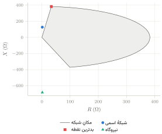
مثال 28.19 (یک امپدانس یا یک ناحیه) پرسش. ولتاژِ هارمونیکِ سیزدهم با شبکهٔ اسمی و با بدترین نقطهٔ مکان چیست؟
پاسخ. 0.62 % و 9.8 %.
تفسیر. امپدانسِ نیروگاه در این مرتبهها خازنی است (کابلها)؛ نقطهای از مکان که القایی و هماندازهٔ آن است با آن تشدید میکند و همان جریانِ گسیل ولتاژِ بسیار بزرگتری میسازد. پس مطالعهٔ هارمونیک با مکانِ بهرهبردار انجام میشود، نه با یک امپدانس، و اگر نتیجه از تخصیصِ گسیل (U-100) بگذرد، پاسخها همانهای فصلِ ۲۷اند (صافی، تنظیم، میرایی). عددهای جریانِ گسیل و مکان آموزشیاند (A-347). وارسی: بدترین نقطه در X مثبت و نیروگاه در X منفی است (شکل 28.8).
- چرا امپدانسِ هارمونیکیِ نیروگاه در مرتبههای بالا خازنی است؟
- اگر بهرهبردار فقط یک امپدانس بدهد، چه میپرسید؟
28.3.11 توانِ واکنشی در تولیدِ صفر و دمای خط
توانِ واکنشی در شب. بعضی الزامها بازهٔ توانِ واکنشی را حتی در تولیدِ صفر میخواهند. کابلها و خط بیواحد هم توانِ واکنشی میدهند؛ واحدهایی که در حالتِ توانِ واکنشیِ شبانه روشن میمانند تلفِ آمادهباش دارند:
reactive power at zero output (night, calm) - what it costs
Q at the POC with the units idle (cables and line): +2.4 Mvar
hours of the data year with less than 1 MW of export: 710
units kept energised in Q mode: 367 kW of standby losses
energy for a year of Q-at-night readiness: 260 MWh (18 k u at 70 u/MWh)
a requirement for a Q range at zero output is met by the
units (if their makers allow Q mode at night), at this
energy cost - or by a small reactor or compensator; the
study prices both, the operator says if it is requiredدمای رسانا. مقاومتِ خط با دمای رسانا تغییر میکند؛ عددِ مطالعه برای کدام دماست؟
the line's losses at full export against conductor temperature
conductor C R ohm (7.06 km) loss MW
20 0.706 0.404
50 0.791 0.453
75 0.862 0.494
the study's 0.12 ohm/km is the conductor at about 70 C:
right for full export, a little high for a cool night -
a few per cent of the line's losses, inside the budget of
lesson G; stated in the assumptions, not hiddenمثال 28.20 (آمادگی هم هزینه دارد) پرسش. آمادگیِ توانِ واکنشیِ شبانه در یک سال چه انرژیای میخورد؟
پاسخ. حدودِ 260 MWh (حدودِ 18 هزار واحدِ پول) برای 710 ساعتِ کمتولید.
تفسیر. الزامِ توانِ واکنشی در تولیدِ صفر با واحدها برآورده میشود اگر سازندهشان حالتِ شبانه را مجاز بداند، با همین هزینهٔ انرژی؛ یا با یک راکتور یا جبرانسازِ کوچک. مطالعه هر دو را قیمت میگذارد و بهرهبردار میگوید آیا لازم است. مقاومتِ خطِ مطالعه (0.12 Ω/km) رسانا را در حدودِ 70 °C فرض کرده است: درست برای صادراتِ کامل و چند درصد بالا برای شبِ خنک؛ در دفترِ فرضها میآید. وارسی: \(0.003 \times 122{,}200 = 367\,\text{kW}\).
- تلفِ خط در 20 °C و 75 °C در صادراتِ کامل؟
- چرا نیروگاه در شب بیواحد هم به نقطهٔ اتصال توانِ واکنشی میدهد؟
28.3.12 وارسیِ مستقل با روشِ دوم
ایده. بازبینِ مستقل همان مسئله را از راهِ دیگری حل میکند. برای پخشِ بار، روشِ گاوس–زایدل (به انگلیسی Gauss-Seidel) ولتاژِ هر شینه را از توانها و ولتاژِ همسایهها پیدرپی بهروز میکند؛ کندتر از نیوتن–رافسون، ولی با منطقِ دیگری:
def gauss_seidel(y: np.ndarray, s: np.ndarray, v0: float = 1.0,
tol: float = 1e-10, max_iter: int = 20000) -> tuple:
"""Second method for the same load flow: bus 0 is the slack, the
others PQ with complex injections s (pu). Returns (V, iterations)."""
n = len(s)
v = np.ones(n, complex) * v0
for it in range(1, max_iter + 1):
biggest = 0.0
for k in range(1, n):
if y[k, k] == 0:
continue
sigma = y[k] @ v - y[k, k] * v[k]
new = (np.conj(s[k] / v[k]) - sigma) / y[k, k]
biggest = max(biggest, abs(new - v[k]))
v[k] = new
if biggest < tol:
return v, it
raise RuntimeError("Gauss-Seidel did not converge")the same full-output load flow by a second method
quantity Newton-Raphson Gauss-Seidel difference
P at POC MW 100.2764 100.2764 2.1e-06
Q at POC Mvar 0.8900 0.8900 2.2e-06
losses MW 1.7236 1.7236 2.3e-08
iterations 4 1299
two methods, one answer: the check finds an error in the
solver, not in the data - the data checks of lesson A and
the hand checks of the integrated example do that part;
an independent checker uses all threeمثال 28.21 (دو روش، یک پاسخ) پرسش. دو روش در توان و تلف چقدر فرق دارند و هر کدام در چند تکرار همگرا میشوند؟
پاسخ. فرق در حدِ میلیونیم؛ نیوتن–رافسون در ۴ و گاوس–زایدل در 1,299 تکرار.
تفسیر. همخوانیِ دو روش خطای حلکننده را رد میکند، نه خطای داده را: دادهای که در هر دو غلط باشد در هر دو همان پاسخِ غلط را میدهد. پس بازبینِ مستقل سه وارسی را با هم دارد: روشِ دوم، وارسیهای داده (بخش 28.2.6) و حسابِ دستی (مثال 28.57). وارسی: تلفِ 1.7236 MW در هر دو.
- چرا گاوس–زایدل اینقدر تکرار میخواهد؟
- خطایی نام ببرید که دو روش هر دو نمیبینند.
28.3.13 در طولِ عمرِ نیروگاه: رشدِ سطحِ خطا و تنظیمِ نادرست
رشدِ سطحِ اتصالِ کوتاه. شبکه در بیستوپنج سال عمرِ نیروگاه قویتر میشود؛ رتبهٔ تجهیزات باید برای پایانِ عمر هم کافی باشد:
fault level growing 2 % a year over the plant's life (teaching)
year S_sc MVA POC kA (c 1.1, all) MV-A kA ratings 31.5 / 25
0 1500 7.79 8.54
10 1828 9.37 8.83
20 2229 11.30 9.08
25 2461 12.41 9.20
the 132 kV current grows with the grid; the 33 kV current
hardly moves - the main transformers' impedance dominates
it; both stay inside the ratings for the plant's life, and
the study asks the operator for the planned growthتنظیمِ نادرستِ حفاظتِ کمولتاژی. اگر رلهٔ کمولتاژیِ یک واحد یا نیروگاه سختگیرتر از پوشِ عبور از خطا تنظیم شود، فرورفتهایی که شبکه هر سال دارد (فصلِ ۲۷) به قطعهای بیدلیل بدل میشوند:
trips a year if an undervoltage relay is set at 0.80 pu, 0.2 s (an error)
(dip counts: ch 27's upper bound, every fault three-phase)
dip depth dips/yr (ch 27) share that trips trips/yr
below 0.50 pu 2.3 0.9 2.1
0.50-0.70 pu 3.1 0.8 2.5
0.70-0.85 pu 7.8 0.5 3.9
about 8 needless trips a year, ~200 MWh (14 k u) - and each one a
ride-through breach the operator records; settings are
checked against the ride-through envelope in the study
(ch 26 setting file), not left to defaultsمثال 28.22 (رتبه برای پایانِ عمر، تنظیم برای هر روز) پرسش. جریانِ خطای نقطهٔ اتصال در سالِ ۲۵ چیست و رلهٔ کمولتاژیِ نادرست سالی چند قطع میسازد؟
پاسخ. 12.41 kA در برابرِ رتبهٔ 31.5 kA؛ حدودِ ۸ قطع و 200 MWh در سال.
تفسیر. جریانِ 33 kV تقریباً ثابت میماند چون امپدانسِ ترانسفورماتورها بر آن غالب است؛ مطالعه رشدِ برنامهریزیشدهٔ شبکه را از بهرهبردار میخواهد. تنظیمِ نادرست ارزان به نظر میرسد ولی هر قطع یک نقضِ ثبتشدهٔ عبور از خطاست؛ پس تنظیمها در مطالعه با پوش وارسی میشوند (پروندهٔ تنظیمِ فصلِ ۲۶)، نه با پیشفرض. وارسی: \(1500 \times 1.02^{25} = 2{,}461\,\text{MVA}\).
- سطحِ اتصالِ کوتاه پس از ده سال با رشدِ 3 % در سال؟
- چرا جریانِ خطای 33 kV با رشدِ شبکه کم تغییر میکند؟
28.4 ج. مطالعههای پویا و انطباق
28.4.1 عبور از خطا در شبکهٔ قوی و ضعیف
ایده. در فرورفتِ ولتاژ، الزامِ عبور از خطا (جایگاهدارِ REQ-G04 تا REQ-G07) سه چیز میخواهد: نیروگاه قطع نشود، در فرورفت جریانِ واکنشی بدهد و پس از رفعِ خطا توانِ فعالش را برگرداند. مدلِ شبهماندگارِ این فصل همین سه رفتار را نشان میدهد: جریانِ واکنشی \(k(1-U)\) با اولویت، جریانِ فعالی که در سقفِ جریان میماند و بازگشت با شیب:
def frt_sim(t: np.ndarray, e_grid: np.ndarray, z: complex, p0: float,
k: float = 2.0, imax: float = 1.1, tau: float = 0.02,
ramp: float = 2.0) -> dict:
"""Quasi-steady ride-through: grid source e_grid(t) behind z (pu on
the plant's rating). Below 0.9 pu the plant injects reactive current
k (1 - U) and gives it priority within imax; active current that this
cuts comes back after the dip at ramp pu/s. Currents follow through a
lag tau. The POC voltage is the reference phasor."""
dt = t[1] - t[0]
iq = id_ = 0.0
u_out, p_out, q_out = [], [], []
p_lim, cut, u = p0, False, 1.0
for e in e_grid:
if u < 0.9:
iq_ref = min(k * (1 - u), imax)
room = math.sqrt(max(imax ** 2 - iq_ref ** 2, 0.0))
id_ref = min(p0 / max(u, 0.05), room)
cut = cut or (iq_ref > 0 and id_ref < p0 / max(u, 0.05))
p_lim = u * id_ref
else:
iq_ref = 0.0
p_lim = min(p0, p_lim + ramp * dt) if cut else p0
cut = cut and p_lim < p0
id_ref = min(p_lim / u, imax)
iq += (iq_ref - iq) * dt / tau
id_ += (id_ref - id_) * dt / tau
w = z * complex(id_, -iq) # E = U - z I (I into the grid)
u = max(w.real + math.sqrt(max(e * e - w.imag ** 2, 0.0)), 0.0)
u_out.append(u)
p_out.append(u * id_)
q_out.append(u * iq)
return {"u": np.array(u_out), "p": np.array(p_out),
"q": np.array(q_out)}ride-through: grid source dips to 0.20 pu for 150 ms (teaching case)
grid k U POC in dip Q peak MVAr P back to 90 % after clear s
max 0 0.19 0 0.00
max 2 0.29 39 0.39
min 0 0.16 0 0.00
min 2 0.34 46 0.39
POC voltage above the teaching envelope in every case: yes
the plant's reactive current lifts the POC more on the weak
grid; active power returns at the set ramp once the voltage
is back - the study shows the plant stays connected and how
it behaves, the unit type test shows the unit can do it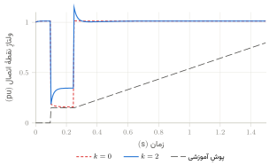
مثال 28.23 (جریانِ واکنشی ولتاژ را نگه میدارد) پرسش. در شبکهٔ ضعیف، ولتاژِ نقطهٔ اتصال در فرورفت با \(k = 0\) و \(k = 2\) چیست و توانِ فعال در چه زمانی برمیگردد؟
پاسخ. 0.16 و 0.34 پریونیت؛ با \(k = 2\) توانِ فعال در 0.39 s به ۹۰ درصد برمیگردد؛ با \(k = 0\) بیدرنگ، چون کم نشده بود.
تفسیر. جریانِ فعال بهتنهایی در شبکهٔ واکنشی ولتاژ را نگه نمیدارد (حتی کمی پایین میآورد)؛ جریانِ واکنشی آن را بالا میبرد، بیشتر در شبکهٔ ضعیف. پس از رفعِ خطا، جریانِ واکنشیِ در حالِ افت ولتاژ را لحظهای تا حدودِ 1.17 پریونیت میبرد (شکل 28.9): همان دلیلی که الزامِ عبور از خطای ولتاژِ زیاد (REQ-G05) هم مطالعه میشود. مطالعه رفتارِ نیروگاه را نشان میدهد؛ آزمونِ نوعیِ واحد تواناییاش را. وارسی: \(u\,i_q = 0.34 \times 1.1 = 0.37\) پریونیت \(\approx 46\,\text{Mvar}\) روی 122.2 MVA.
- با \(k = 2\) و ولتاژِ 0.6 پریونیت، جریانِ واکنشیِ خواسته چیست؟
- چرا پس از رفعِ خطا ولتاژ از نامی بالاتر میرود؟
28.4.2 پاسخِ فرکانس: سامانهٔ بزرگ و کوچک
ایده. پس از ازدسترفتنِ یک تولیدکننده، فرکانس با معادلهٔ نوسان سامانهٔ تجمیعشده میافتد تا پاسخِ گاورنرها و نیروگاهها برسد:
\[ \frac{2H}{f_0}\,\frac{d\,\Delta f}{dt} = \frac{\Delta P_\text{resp} - \Delta P_\text{loss} - D\,\Delta f}{S_\text{sys}} \tag{28.5}\]
که \(H\) ثابتِ لختی و \(D\) میراییِ بار است. سهمِ یک نیروگاهِ 100 MW به اندازهٔ سامانه و به جای بالارو بستگی دارد:
a frequency event: loss of generation, 20 % of the system on 5 % droop
system plant response nadir Hz RoCoF Hz/s
large (20 GW, H 4, -1,000 MW) no response 49.123 -0.308
large (20 GW, H 4, -1,000 MW) PV held 10 MW down 49.131 -0.308
large (20 GW, H 4, -1,000 MW) battery 20 MW (S1) 49.138 -0.308
small (2 GW, H 3, -150 MW) no response 48.566 -0.609
small (2 GW, H 3, -150 MW) PV held 10 MW down 48.648 -0.609
small (2 GW, H 3, -150 MW) battery 20 MW (S1) 48.740 -0.608
over-frequency (small system loses 150 MW of load): peak 51.434 Hz without,
51.199 Hz with the plant reducing on its 5 % droop
on a large system the plant changes the nadir by hundredths
of a hertz; on a small one by tenths - and only with
headroom: at full output without a battery it can help
only upwards in frequency (by reducing), never downwards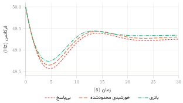
مثال 28.24 (صدمها یا دهمها) پرسش. کمینهٔ فرکانس در سامانهٔ کوچک با و بی باتری، و در سامانهٔ بزرگ با و بی باتری چیست؟
پاسخ. کوچک: 48.566 و 48.740 Hz؛ بزرگ: 49.123 و 49.138 Hz.
تفسیر. در سامانهٔ بزرگ نیروگاه کمینه را صدمها جابهجا میکند و در کوچک دهمها؛ و فقط با جای بالارو. نیروگاهِ S0 در توانِ کامل فقط میتواند با کاهش به فرکانسِ زیاد پاسخ دهد (REQ-G09؛ قلهٔ 51.43 به 51.20 Hz). پاسخ به فرکانسِ کم (REQ-G10) جای بالارو میخواهد: یا تولیدِ کنار گذاشتهشده (انرژیِ فروختهنشده) یا باتری، و فقط اگر قرارداد بخواهد. نرخِ تغییرِ آغازین در هر دو حالت به لختیِ سامانه بسته است، نه به نیروگاه. وارسی: \(-1{,}000/20{,}000 \times 50/8 = -0.31\,\text{Hz/s}\).
- نرخِ تغییرِ آغازینِ فرکانس با ازدسترفتنِ 300 MW از 5,000 MW با \(H = 5\)؟
- انحرافِ ماندگار با بیست درصدِ سامانه روی افتِ پنجدرصدی و \(D = 1\)؟
- چرا باتری در سامانهٔ کوچک اثرِ بیشتری دارد؟
28.4.3 پایداریِ کنترلِ ولتاژ و قدرتِ شبکه
ایده. کنترلکنندهٔ نیروگاه ولتاژِ نقطهٔ اتصال را با تغییرِ توانِ واکنشی تنظیم میکند. حساسیتِ ولتاژ به توانِ واکنشی \(\approx 1/S_\text{sc}\) است، پس قدرتِ شبکه جزءِ بهرهٔ حلقه است: بهرهای که روی شبکهٔ قوی آرام است، روی شبکهٔ ضعیف با همان تأخیرها نوسان میکند. حلقه با انتگرالگیر، تأخیرِ ارتباط، صافیِ اندازهگیری و تأخیرِ واحدها:
def v_loop(s_sc: float, ki: float, t_end: float = 8.0, dt: float = 0.005,
delay: float = 0.10, t_meas: float = 0.05, t_unit: float = 0.15):
"""POC voltage after a -2 % grid step at 1 s, with an integral
controller (ki Mvar per pu per s) acting through a delay and lags."""
n = int(t_end / dt)
buf = [0.0] * int(delay / dt)
v_m = q = integ = 0.0
out = []
for k in range(n):
v_grid = -0.02 if k * dt >= 1.0 else 0.0
v = v_grid + q / s_sc # pu deviation at the POC
v_m += (v - v_m) * dt / t_meas # measurement filter
integ += -ki * v_m * dt # Mvar
integ = min(max(integ, -46.0), 46.0) # capability (lesson B)
buf.append(integ)
q += (buf.pop(0) - q) * dt / t_unit # units follow late
out.append(v)
return np.arange(n) * dt, np.array(out)POC voltage control after a -2 % grid step (integral controller)
case ki Mvar/pu/s overshoot % settles (10 %) s
SCR 15, tuned for it 1500 0 1.8
SCR 3, same gains 1500 56 2.8
SCR 3, retuned 300 0 1.8
the same gains that settle smoothly on the strong grid ring
on the weak one: the grid's voltage sensitivity (1/S_sc) is
part of the loop gain - controller settings are studied at
the minimum strength and retuned (or scheduled) for it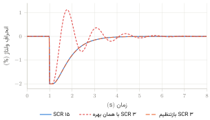
مثال 28.25 (همان بهره، شبکهٔ دیگر) پرسش. با بهرهٔ 1,500 Mvar بر پریونیت بر ثانیه، فراجهش روی SCRِ ۱۵ و ۳ چیست؟ بهرهٔ بازتنظیمشده برای ۳ چند است؟
پاسخ. صفر و 56 %؛ 300.
تفسیر. بهرهٔ مؤثرِ حلقه \(k_i/S_\text{sc}\) است: ۱ بر ثانیه روی شبکهٔ قوی و ۵ روی ضعیف؛ با حدودِ 0.3 s تأخیرِ جمعی، پنج برابر بهره حاشیهٔ فاز را تقریباً از بین میبرد. تنظیمها در کمینهٔ قدرت مطالعه و برای آن بازتنظیم یا زمانبندی میشوند (REQ-G02، REQ-G22)؛ بازتنظیم با \(k_i/S_\text{sc}\) یکسان همان پاسخِ شبکهٔ قوی را برمیگرداند. وارسی: \(300/300 = 1500/1500 = 1\,\text{s}^{-1}\).
- بهرهٔ مؤثرِ حلقه برای 1,500 روی 300 MVA و روی 1,500 MVA؟
- چرا تأخیرِ ارتباط در شبکهٔ ضعیف خطرناکتر است؟
28.4.4 جزیرهشدن و ناحیهٔ کورِ رلهها
ایده. اگر تغذیهٔ 132 kV پستِ شبکه باز شود، نیروگاه و بارِ منطقه ممکن است یک جزیره بسازند. رلههای غیرفعالِ ولتاژ و فرکانس جزیره را فقط وقتی میبینند که عدمِ توازنِ توان ولتاژ یا فرکانس را از پنجره بیرون ببرد. برای باری با ضریبِ کیفیتِ \(Q_\text{f}\)، ناحیهٔ کور (به انگلیسی non-detection zone):
\[ \left(\frac{1}{U_\text{max}}\right)^{2} - 1 \le \frac{\Delta P}{P} \le \left(\frac{1}{U_\text{min}}\right)^{2} - 1 \tag{28.6}\]
و برای توانِ واکنشی:
\[ Q_\text{f}\left[1 - \left(\frac{f_0}{f_\text{min}}\right)^{2}\right] \le \frac{\Delta Q}{P} \le Q_\text{f}\left[1 - \left(\frac{f_0}{f_\text{max}}\right)^{2}\right] \tag{28.7}\]
با تولیدِ ساعتیِ نیروگاه و بارِ منطقه (فصلهای ۱۵ و ۱۷) میشود شمرد چند ساعت از سال توازن درونِ ناحیه است:
could the plant and the regional load form an undetected island?
(the grid substation's 132 kV supply opens; passive relays only)
blind zone for dP/P: -0.174 to +0.384 (U 0.85-1.10 pu);
for dQ/P: -0.041 to +0.039 (f 49-51 Hz, quality factor 1)
hours of the year with the active-power mismatch inside it: 1760
regional load 16-52 MW, plant 0-100 MW
in those hours voltage relays alone may not see the island
(frequency relays only if reactive power is also matched);
an intertrip from the grid substation's breaker closes the
gap whatever the balance - the study states which scheme
the operator requires (REQ-G12)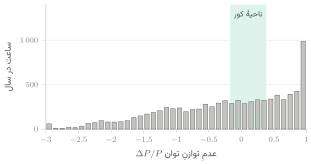
مثال 28.26 (یکپنجمِ سال) پرسش. در چند ساعت از سال عدمِ توازنِ توانِ فعال درونِ ناحیهٔ کور است و نتیجه چیست؟
پاسخ. 1,760 ساعت، حدودِ یکپنجمِ سال.
تفسیر. در این ساعتها رلههای ولتاژ بهتنهایی جزیره را نمیبینند (رلههای فرکانس هم فقط اگر توانِ واکنشی هم تقریباً جور باشد، که ناحیهاش بسیار باریک است). یک قطعِ متقابل از کلیدِ پستِ شبکه این شکاف را هرچه توازن باشد میبندد؛ مطالعه میگوید بهرهبردار کدام طرح را میخواهد (REQ-G12). وارسی: \(1/1.1^2 - 1 = -0.174\) و \(1/0.85^2 - 1 = +0.384\).
- ناحیهٔ کورِ \(\Delta P/P\) با پنجرهٔ 0.90 تا 1.10 پریونیت؟
- ناحیهٔ \(\Delta Q/P\) برای 49.5 تا 50.5 Hz و \(Q_\text{f} = 2\)؟
- چرا قطعِ متقابل به توازن بستگی ندارد؟
28.4.5 بازگشت، شیب، دیسپچ و تلهمتری
ایده. پس از قطع، نیروگاه با شرطهایی برمیگردد (ولتاژ و فرکانسِ سالم برای مدتی، سپس بالا رفتن با شیب)؛ در کارِ عادی نقطهٔ تنظیمِ توان را از بهرهبردار میگیرد و دنبال میکند؛ و سیگنالهایش با تأخیرِ مشخص به اسکادای بهرهبردار میرسند. هر سه با عددهای ساده مطالعه میشوند و با هم باید سازگار باشند:
reconnection, set-point following and telemetry (teaching values)
after a trip: 60 s of healthy voltage and frequency, then 10 %/min
back to 80 MW in 8 min; energy lost per trip about 6.7 MWh (+ the outage)
set-point 80 -> 60 MW at 20 s, ramp 10 MW/min, 4 s delay:
inside +/-2 MW after 111 s
(a placeholder requirement of 60 s would fail: the ramp
limit itself takes 2 min - the two requirements must agree)
telemetry latency budget, s:
unit/RTU scan 1.0
plant gateway 0.2
communications 0.3
operator SCADA processing 0.5
total 2.0 s against a placeholder requirement of 2.0 s: no margin -
an end-to-end test measures it; the budget shows where to cutمثال 28.27 (دو الزامِ ناسازگار) پرسش. با شیبِ 10 MW در دقیقه و تأخیرِ 4 s، پلهٔ نقطهٔ تنظیم از 80 به 60 MW در چند ثانیه درونِ ±2 MW مینشیند؟ الزامِ «یک دقیقه» چه میشود؟
پاسخ. 111 s؛ الزامِ شصتثانیهای برآورده نمیشود.
تفسیر. خودِ محدودیتِ شیب برای بیست مگاوات دو دقیقه وقت میگیرد: دو الزام (REQ-G14 و REQ-G15) با هم ناسازگارند و مطالعه باید این را پیش از آزمون به بهرهبردار بگوید. بودجهٔ تأخیرِ تلهمتری (2.0 s در برابرِ 2.0 s) هم حاشیه ندارد؛ آزمونِ سرتاسری آن را اندازه میگیرد و بودجه نشان میدهد کجا کم کنیم. وارسی: \(18/10 \times 60 + 4 = 112\,\text{s}\).
- انرژیِ ازدسترفته در بازگشت از 50 MW با انتظارِ 60 s و 10 % در دقیقه؟
- تأخیرِ کل با زمانِ پویشِ 0.5 s؟
28.4.6 از شبیهسازی تا آزمون: اعتبارسنجیِ مدلِ پویا
ایده. هر مطالعهٔ پویا ادعایی است که آزمون آن را میبندد: آزمونِ نوعیِ واحد (کارخانه یا آزمایشگاه)، آزمونهای نیروگاه در راهاندازی، و رویدادهای ثبتشده در بهرهبرداری. مدلِ پویا وقتی پذیرفته است که با یک رکوردِ واقعی پنجره به پنجره بخواند: پیش از خطا، در خطا، پس از خطا. روشِ اعتبارسنجی (STD-132) پنجرهها و اندازههای خطا را تعریف میکند؛ اینجا میانگینِ خطا، میانگینِ قدرِ مطلق و بیشینه با حدهای آموزشی:
model against a recorded dip: errors of reactive current (pu)
window mean error mean abs error max error teaching limits
pre-fault +0.001 0.008 0.024 0.02 / 0.05 ok
fault -0.027 0.029 0.110 0.10 / 0.20 ok
post-fault +0.013 0.019 0.254 0.05 / 0.15 OVER
errors are judged window by window: the means are small,
but the maximum after clearing is not - on site the
current falls faster than in the model; a mean alone
would hide it. The fix is a better current-loop time
constant from the OEM, then a rerun; a validation method
of this kind (STD-132) sets windows and measures, the
windows and limits here are teaching valuesمثال 28.28 (میانگین خوب، بیشینه نه) پرسش. کدام پنجره از حدِ آموزشی میگذرد و چه باید کرد؟
پاسخ. پس از خطا: بیشینهٔ خطا 0.254 در برابرِ حدِ 0.15، در حالی که میانگینِ قدرِ مطلق 0.019 است.
تفسیر. در محل جریانِ واکنشی پس از رفعِ خطا تندتر از مدل میافتد؛ میانگین این را پنهان میکند و بیشینه نشانش میدهد. راه درست، ثابتِ زمانیِ حلقهٔ جریان از سازنده و اجرای دوباره است، نه برداشتنِ بیشینه از معیار. شاهدِ پذیرش: رکورد، مدلِ با نسخه، جدولِ خطاها و تأییدِ بهرهبردار (REQ-G21، REQ-G23). وارسی: خطای پیش از خطا (0.008) هماندازهٔ نوفهٔ اندازهگیری (0.01) است.
- چرا خطا در پنجرههای جدا سنجیده میشود، نه روی کلِ رکورد؟
- سه نوعِ آزمون که مطالعهٔ پویا را میبندند نام ببرید.
28.4.7 مطالعه آزمون را پیشبینی میکند
ایده. آزمونِ انطباق وقتی چیزی ثابت میکند که پیش از آن نوشته باشیم چه انتظار داریم و با چه رواداری. مطالعه همین را میدهد: برای هر نقطهٔ آزمون مقدارِ مورد انتظار و بازهٔ پذیرش. سه آزمونِ نمونه:
نقطههای آزمونِ توانایی P-Q (REQ-G01):
P-Q capability test points: the study's expected values (grid max, 1.00)
point P POC MW Q expected Mvar requirement pass if measured
1 20.7 82.7 >= +33 +79.1 .. +86.4
2 20.5 -90.1 <= -33 -93.9 .. -86.3
3 58.8 77.2 >= +33 +73.7 .. +80.7
4 58.3 -96.1 <= -33 -100.0 .. -92.2
5 97.9 50.8 >= +33 +47.8 .. +53.8
6 96.9 -97.3 <= -33 -101.2 .. -93.3
each point is held for a stated time (minutes) with the
POC voltage and the units' temperatures recorded; a
measured value outside the band is investigated before
the model or the test is blamed - and the requirement
column is judged on its own, against the operator's valueآزمونِ پلهٔ نقطهٔ تنظیمِ ولتاژ (REQ-G02):
voltage set-point step test: what the study expects (SCR 15, tuned loop)
a 2 % step needs about 30 Mvar (2 % x 1,500 MVA), inside the
plant's +46 Mvar
expected: 90 % of the step reached in about 1.8 s, no overshoot
test acceptance written beforehand (teaching): 90 % within
2 s, overshoot below 10 %, settled within 5 s; on the
weak grid the same test is predicted with the retuned gain
(lesson C) - a test on a strong-grid day does not prove the
weak-grid behaviour, the validated model doesآزمونِ تزریقِ فرکانس (REQ-G09، REQ-G10):
frequency injection test: expected change of active power
(5 % droop on 100 MW, 0.2 Hz deadband; plant at 80 MW)
injected Hz deviation beyond deadband expected dP MW P after MW
49.70 -0.10 +4.0 80.0
49.90 +0.00 +0.0 80.0
50.10 +0.00 +0.0 80.0
50.30 +0.10 -4.0 76.0
50.50 +0.30 -12.0 68.0
above 50.2 Hz the plant reduces at 40 MW per Hz; below 49.8
it cannot rise from 80 MW without headroom (S0) - the test
shows the droop slope, the deadband and the response time,
and the under-frequency part is tested only if headroom is
contracted (REQ-G10)مثال 28.29 (بازه پیش از آزمون) پرسش. در نقطهٔ ۵ (توانِ کامل، دادن) مقدارِ مورد انتظار و بازهٔ پذیرش چیست؟ اگر آزمون 44 Mvar نشان دهد چه میکنید؟
پاسخ. 50.8 Mvar، بازهٔ 47.8 تا 53.8؛ 44 بیرون از بازه است ولی هنوز بالای الزامِ آموزشیِ +33.
تفسیر. دو داوریِ جدا: آزمون الزام را برآورده کرده است (44 بیش از 33)، ولی مدل را تأیید نکرده است (بیرون از بازه). پیش از سرزنشِ مدل یا آزمون، ولتاژِ نقطهٔ اتصال، دمای واحدها، تپ و شمارِ واحدهای در مدار در آن ساعت وارسی میشوند؛ اگر مدل اشتباه است، اصلاح و دوباره اعتبارسنجی میشود (بخش 28.4.6). آزمونِ فرکانس هم نشان میدهد نیروگاهِ S0 در 49.7 Hz فقط +4 MW «انتظار» دارد که بی جای بالارو نمیتواند بدهد. وارسی: \(2 + 0.02 \times 50.8 = 3.0\) بازهٔ رواداری.
- تغییرِ توان در 50.4 Hz با افتِ 5 % روی 100 MW و ناحیهٔ مردهٔ 0.2 Hz؟
- چرا آزمونِ پله در روزِ شبکهٔ قوی رفتارِ شبکهٔ ضعیف را ثابت نمیکند؟
28.4.8 حدِ صادرات در تندباد و جریانِ دنبالهٔ منفی
حدِ صادرات. حدِ 100 MW در نقطهٔ اتصال (REQ-G16) را کنترلکنندهٔ نیروگاه نگه میدارد، ولی با اندازهگیریِ کمی کهنه و واحدهایی که با تأخیر پیروی میکنند. وقتی تندبادی توانِ در دسترس را تند بالا میبرد، صادرات لحظهای از حد میگذرد:
def limit_sim(setpoint: float, ramp: float = 2.0, delay: float = 1.0,
tau: float = 0.5, dt: float = 0.05, t_end: float = 30.0):
"""Available power ramps up at `ramp` MW/s from 90 MW (a gust); the
plant controller caps export at `setpoint`, acting on a measurement
`delay` s old through units that follow with time constant `tau`."""
n = int(t_end / dt)
avail = np.minimum(90 + ramp * np.maximum(np.arange(n) * dt - 5, 0), 115)
out = np.full(n, avail[0])
cap = 115.0
lag = int(delay / dt)
for k in range(1, n):
seen = out[max(k - lag, 0)]
if seen > setpoint:
cap = max(setpoint, cap - (seen - setpoint))
else:
cap = min(115.0, max(cap, setpoint))
target = min(avail[k], cap)
out[k] = out[k - 1] + (target - out[k - 1]) * dt / tau
return np.arange(n) * dt, avail, outholding a 100 MW export limit through a gust (2 MW/s, teaching)
set-point MW peak export MW above 100.05 for s margin MWh/yr
100 103.4 3.8 0
99 102.5 1.9 86
98 101.5 1.1 190
acting on a measurement one second old, a controller set
at the limit itself overshoots it by 3.4 MW for about 4 s
of the gust; one or two MW lower cuts that to one or two
seconds, at 86-190 MWh a year - the study states the
overshoot, the margin and its cost, and the operator
says whether a short overshoot is acceptable (REQ-G16)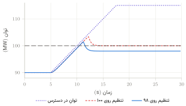
مثال 28.30 (حاشیه، با بهای انرژی) پرسش. با تنظیم روی خودِ حد، صادرات چقدر و چه مدت از 100 MW میگذرد؟ تنظیم روی 98 MW در سال چه میخورد؟
پاسخ. قلهٔ 103.4 MW و حدودِ 3.8 s بالای حد؛ با 98، قلهٔ 101.5، 1.1 s و حدودِ 190 MWh در سال.
تفسیر. کنترلکنندهای که با اندازهگیریِ یک ثانیه کهنه روی خودِ حد تنظیم شده، در تندباد دیر میجنبد و از آن میگذرد. حاشیهٔ یک یا دو مگاوات گذر را به یکی دو ثانیه کم میکند (صفر نمیکند) و بهایش انرژی است. مطالعه گذر، حاشیه و بهای سالانه را میگوید و بهرهبردار میگوید آیا گذرِ کوتاه پذیرفتنی است. وارسی: صادراتِ بالای 98 MW در سالِ داده تا حدودِ 190 MWh جمع میشود.
دنبالهٔ منفی. در خطای نامتقارن، بعضی کدها از مبدل جریانِ دنبالهٔ منفی هم میخواهند تا نامتعادلیِ ولتاژ کم شود:
negative-sequence voltage at the POC in an unbalanced fault
(grid side 0.30 pu; plant injects k2 x V2 of negative-sequence current)
k2 V2 at POC pu positive-sequence unaffected
0.0 0.300 yes
1.0 0.278 yes
2.0 0.259 yes
4.0 0.227 yes
a converter that also controls the negative sequence (if
the code asks for it) pulls the unbalance down a little
on a strong grid - and uses current that the positive
sequence then cannot; the requirement, the unit's type
test and the model must all name the same behaviourمثال 28.31 (کمک، با جریانی که دیگر نیست) پرسش. با \(k_2 = 2\) ولتاژِ دنبالهٔ منفیِ نقطهٔ اتصال چقدر کم میشود؟
پاسخ. از 0.300 به 0.259 پریونیت.
تفسیر. کاهش در شبکهٔ قوی اندک است، و جریانی که به دنبالهٔ منفی میرود از دنبالهٔ مثبت گرفته میشود. الزام، آزمونِ نوعیِ واحد و مدل باید همه یک رفتار را نام ببرند. وارسی: \(0.30/(1 + 2 \times 0.08) = 0.259\).
- چرا اندازهگیریِ کهنه گذر از حد را بزرگتر میکند؟
- ولتاژِ دنبالهٔ منفی با \(k_2 = 3\)؟
28.4.9 انتخابِ شیبِ مشخصهٔ Q(U)
ایده. در حالتِ ولتاژ، کنترلکننده توانِ واکنشی را با یک مشخصه به انحرافِ ولتاژ میبندد: کلِ توانایی (46 Mvar، بخش 28.3.3) برای انحرافی به اندازهٔ «شیب». نقطهٔ کار جایی است که این مشخصه خطِ شبکه (\(U = E + Q/S_\text{sc}\)) را قطع میکند:
def qu_point(e: float, s_sc: float, slope: float) -> tuple:
"""Steady state of a Q(U) characteristic (full Q_MAX for a deviation
of `slope` pu) on a grid source e behind s_sc MVA: (U, Q)."""
g = Q_MAX / (slope * s_sc) # loop gain
u = (e + g) / (1 + g)
q = -(u - 1.0) / slope * Q_MAX
if abs(q) > Q_MAX: # at the capability limit
q = math.copysign(Q_MAX, q)
u = e + q / s_sc
return u, qchoosing the Q(U) slope (full 46 Mvar for a deviation of 'slope')
slope % grid source 0.95: U POC Q Mvar source 1.05: U POC Q Mvar
2 max 0.980 45.4 1.020 -45.4
2 min 0.986 32.3 1.014 -32.3
4 max 0.972 32.5 1.028 -32.5
4 min 0.978 25.2 1.022 -25.2
8 max 0.964 20.8 1.036 -20.8
8 min 0.969 17.5 1.031 -17.5
a steep characteristic (2 %) spends nearly the whole
capability on a 5 % grid deviation; a shallow one (8 %)
uses less than half and lets the voltage wander more;
even the steepest brings 0.95 only to 0.98 on this POC
(lesson B: 0.7 % per 10 Mvar) - the slope is chosen with
the operator for the grid's needs, inside the
requirement's range (REQ-G02)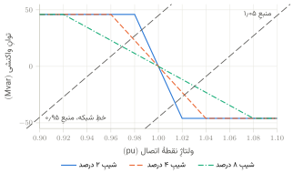
مثال 28.32 (شیبِ تند، توانایی تمام) پرسش. با منبعِ 0.95 روی شبکهٔ بیشینه، ولتاژِ نقطهٔ اتصال و توانِ واکنشی با شیبِ ۲ و ۸ درصد چیست؟
پاسخ. 0.980 با 45.4 Mvar؛ 0.964 با 20.8 Mvar.
تفسیر. شیبِ تند تقریباً همهٔ توانایی را خرج میکند و چیزی برای رویدادِ بعدی نمیگذارد؛ شیبِ ملایم ولتاژ را آزادتر میگذارد. حتی تندترین شیب در این نقطهٔ اتصالِ قوی ولتاژ را فقط تا 0.98 بالا میبرد. شیب با بهرهبردار و در بازهٔ الزام انتخاب میشود (REQ-G02) و پایداریِ حلقه با آن در کمینهٔ قدرت وارسی میشود (بخش 28.4.3). وارسی: \(g = 46/(0.02 \times 1{,}500) = 1.53\) و \(U = (0.95 + 1.53)/2.53 = 0.980\).
- با شیبِ ۴ درصد و منبعِ 1.05 روی 900 MVA، ولتاژ و توانِ واکنشی؟
- چرا شیبِ خیلی تند برای رویدادهای پیدرپی بد است؟
28.4.10 فهرستِ سیگنالهای تلهمتری
ایده. تلهمتریِ درونِ نیروگاه صدها مقدار در ثانیه است؛ آنچه به بهرهبردار میرود فهرستی کوتاه و تعریفشده است (REQ-G17) با تأخیری که بودجهاش در بخش 28.4.5 آمد:
telemetry inside the plant and to the operator (teaching sizes)
group count points period s values/s
wind turbines 12 240 1 240.0
PV inverters 10 150 1 150.0
POC and substation 1 40 1 40.0
met stations 2 16 10 1.6
battery (S1) 4 100 1 100.0
plant SCADA (with S1): 532 values a second, ~0.4 GB a day
to the operator: a list of about 24 signals (POC P, Q, U, f,
breaker states, set-points received, limits, availability)
every 1-2 s within the latency budget of lesson C - the
list is the operator's (REQ-G17), the rest stays in the
plant; ch 34-36 build and secure bothمثال 28.33 (صدها در برابرِ دهها) پرسش. اسکادای نیروگاه چند مقدار در ثانیه دارد و فهرستِ بهرهبردار چند سیگنال؟
پاسخ. حدودِ 532 مقدار در ثانیه (با S1)؛ حدودِ ۲۴ سیگنال برای بهرهبردار.
تفسیر. فهرستِ بهرهبردار از آنِ بهرهبردار است: هر سیگنال با نام، یکا، بازه، بازهٔ بهروزرسانی و کیفیت؛ بقیه در نیروگاه میماند. ساختن و امن کردنِ هر دو کارِ فصلهای ۳۴ تا ۳۶ است؛ مطالعه فقط میگوید کدام سیگنال کدام الزام را نشان میدهد. وارسی: \(12 \times 20 + 10 \times 15 + 40 + 16/10 + 4 \times 25 = 532\).
- حجمِ روزانهٔ 532 مقدار در ثانیه با هشت بایت؟
- چهار سیگنالِ لازم برای سنجیدنِ خدمتِ توانِ واکنشی نام ببرید.
28.4.11 نیروگاه بهعنوانِ پیشامدِ شبکه
ایده. همان مطالعهٔ فرکانسِ بخش 28.4.2 را میشود برعکس پرسید: اگر خودِ نیروگاه در 100 MW قطع شود، شبکه چه میبیند؟
the plant's own trip at 100 MW as an event for the grid
system nadir Hz RoCoF Hz/s
large (20 GW, H 4) 49.912 -0.031
small (2 GW, H 3) 49.044 -0.406
on the small system the plant is a large infeed: losing it
costs almost a hertz - the operator compares the
plant's size with the largest loss the system is planned
for, and may limit export or ask for a slower trip of
the units (ramped disconnection) where the code allowsمثال 28.34 (تزریقی بزرگ در سامانهٔ کوچک) پرسش. قطعِ نیروگاه کمینهٔ فرکانسِ سامانهٔ کوچک را به چند میرساند و نرخِ تغییرِ آغازین چیست؟
پاسخ. 49.04 Hz؛ حدودِ −0.41 Hz/s.
تفسیر. در سامانهٔ بزرگ قطعِ نیروگاه تقریباً دیده نمیشود؛ در سامانهٔ کوچک نزدیکِ یک هرتز میافتد. بهرهبردار اندازهٔ نیروگاه را با بزرگترین پیشامدی که سامانه برایش برنامهریزی شده میسنجد و ممکن است صادرات را محدود کند یا جدا شدنِ پلهای و شیبدارِ واحدها را بخواهد، جایی که کد اجازه دهد. وارسی: \(-100/2{,}000 \times 50/6 = -0.42\,\text{Hz/s}\).
- نرخِ تغییرِ آغازین با قطعِ 100 MW از 5,000 MW و \(H = 4\)؟
- چرا جدا شدنِ پلهای واحدها اثرِ قطع را کم میکند؟
28.4.12 کانالِ قطعِ متقابل: دسترسپذیری و زمان
ایده. قطعِ متقابل دو شکافِ این فصل را میبندد: جزیرهای که رلههای غیرفعال نمیبینند (بخش 28.4.4) و بازبستِ خودکار پیش از جدا شدنِ نیروگاه (بخش 28.3.8). ولی خودش یک کانالِ ارتباطی است که گاهی از دسترس بیرون است و زمانی میگیرد:
the intertrip channel's availability and the exposure it leaves
channel availability hours/yr without it blind hours/yr left
99.00 % 87.6 17.60
99.90 % 8.8 1.76
99.99 % 0.9 0.18
the intertrip closes the islanding gap only while its
channel works: a duplicated or supervised channel (an
alarm when it fails, export held back until it returns)
makes the residual exposure a matter of hours, written in
the study and agreed with the operatorintertrip timing budget (ms, teaching)
grid-end protection operates 30
grid-end breaker opens 50
intertrip send and channel 20
plant breaker opens 50
plant off after about 150 ms; with the fastest reclose of
300 ms the margin is 150 ms (lesson B, reclose) - the
channel's latency is a requirement of its own, tested end
to end before energisation (ch 26, 50)مثال 28.35 (شکافی که کوچک میشود، نه صفر) پرسش. با دسترسپذیریِ 99.9 % چند ساعت در سال نیروگاه بیکانال و درونِ ناحیهٔ کور است؟ حاشیهٔ زمانی تا تندترین بازبست چقدر است؟
پاسخ. حدودِ 1.8 ساعت در سال؛ 150 ms.
تفسیر. کانالِ پایششده (هشدار در خرابی و نگه داشتنِ صادرات تا بازگشتش) یا کانالِ دوتایی شکافِ باقی را به چند ساعت در سال میرساند؛ این عدد در مطالعه نوشته و با بهرهبردار توافق میشود. تأخیرِ کانال خودش یک الزام است و پیش از برقدار شدن سرتاسری آزموده میشود (فصلهای ۲۶ و ۵۰). وارسی: \(0.001 \times 1{,}760 = 1.76\) ساعت.
- ساعتهای بیکانال در سال با دسترسپذیریِ 99.99 %؟
- اگر کلیدِ نیروگاه 80 ms طول بکشد، حاشیه تا بازبستِ 300 ms؟
28.5 د. تمرینِ ردیابیِ مطالعه (مثالِ کارشده)
مثالِ کارشدهٔ این فصل: فهرستِ ورودیِ مطالعه و ماتریسِ انطباق برای نقطهٔ اتصالِ پیشنهادیِ نیروگاهِ P. هر دو از ثبتهای پروندهٔ register ساخته میشوند تا یک منبعِ واحد داشته باشند؛ برنامه فقط آنها را میخواند، میشمرد و شکافها را نشان میدهد.
28.5.1 فهرستِ ورودیِ مطالعه
هر ورودی یک شناسه، مالک، وضع، کیفیت (A اندازهگیریشده یا گواهیشده، B اعلامِ مالک، C فرضِ تیمِ مطالعه) و مطالعههایی که آن را لازم دارند میگیرد:
study-input checklist for the POC (owner, status, quality A/B/C)
id item owner status q for
IN-01 short-circuit level at POC, max/min operator received B B E
IN-02 X/R at POC operator received B B
IN-03 network model around the POC operator requested - B C E G
IN-04 steady-state voltage range at POC operator received B B
IN-05 frequency ranges and durations operator assumed C C
IN-06 fault clearing, auto-reclose times operator requested - C
IN-07 protection settings at the grid end operator requested - B
IN-08 background harmonics at POC (U-101) operator missing - ch27
IN-09 emission allocation (U-100) operator missing - ch27
IN-10 applicable code, version (U-102) operator missing - all
IN-11 neighbouring plants and their size operator requested - E
IN-12 one-line diagram (D-027) plant received A all
IN-13 main transformer guaranteed data plant received B B
IN-14 main transformer test data (FAT) plant missing - B
IN-15 33 kV cable lengths and sections plant received B B
IN-16 132 kV line conductor and route plant received B B G
IN-17 line measured impedance plant missing - B G
IN-18 unit data sheets (wind, PV, BESS) OEM received B B
IN-19 unit P-Q capability vs voltage OEM received B B F
IN-20 unit RMS models with versions OEM received B C E F
IN-21 unit EMT models with versions OEM requested - E
IN-22 unit type tests (ride-through) OEM received A C
IN-23 plant controller model and settings OEM received C C F
IN-24 BESS PCS model and limits (S1) OEM requested - F
IN-25 auxiliary loads (ch 23) plant received B B
IN-26 earthing and neutral data plant received B B
IN-27 metering point and class operator received B G
IN-28 telemetry signal list operator requested - C
IN-29 weather data for line rating plant received B G
IN-30 outage rates of plant elements plant assumed C G
16 received, 7 requested, 2 assumed, 5 missing of 30
quality: A measured or certified, B declared by the owner,
C assumed by the study team - a C input carries an entry
in the assumption log28.5.2 ماتریسِ انطباق: الزام تا شاهد
هر الزام به مطالعه، مدل، آزمون و شاهدی پیوند میخورد (شکل 28.15)؛ برنامه برای هر الزام ورودیهایی را که مطالعهاش هنوز ندارد پیدا میکند:
def blocked_by(req: reg.Requirement) -> list[str]:
"""Inputs not yet received that the requirement's studies need."""
letters = {s.split("-")[0] for s in req.study.split(", ")}
out = []
for iid, _, _, status, _, use in reg.INPUTS:
if status in ("missing", "requested") and \
(letters & set(use.split()) or "all" in use.split()):
out.append(iid)
return outcompliance matrix: requirement -> study -> model -> test -> evidence
req topic study test evid in
REQ-G01 reactive capability at the POC B-reactive yes yes 6
REQ-G02 voltage control at the POC C-vcontrol yes yes 4
REQ-G03 power-factor and Q modes B-reactive yes yes 5
REQ-G04 low-voltage ride-through C-frt yes yes 4
REQ-G05 high-voltage ride-through C-frt yes yes 4
REQ-G06 reactive current in dips C-frt yes yes 4
REQ-G07 active power recovery C-frt yes yes 4
REQ-G08 frequency range of operation C-freq - yes 4
REQ-G09 over-frequency power reduction C-freq yes yes 4
REQ-G10 under-frequency response, contracted F-envelope yes yes 2
REQ-G11 RoCoF withstand C-freq - yes 4
REQ-G12 loss of mains / intertrip C-islanding yes yes 4
REQ-G13 reconnection after a trip C-restore yes yes 4
REQ-G14 ramp-rate limits C-restore yes yes 4
REQ-G15 active power set-point following C-restore yes yes 4
REQ-G16 export limit at the POC B-cases yes yes 5
REQ-G17 telemetry signals and latency C-restore yes yes 4
REQ-G18 short-circuit contribution data B-sc - yes 5
REQ-G19 protection coordination B-protection yes yes 5
REQ-G20 harmonic emission and flicker ch 27 studies yes yes 1
REQ-G21 validated simulation models F-versions - yes 2
REQ-G22 stable at minimum grid strength E-weak - yes 4
REQ-G23 compliance tests at commissioning C-tests yes yes 4
REQ-G24 fast frequency response, contracted F-envelope - - 2
24 requirements: all wait for IN-10 (the code itself);
23 also wait for other inputs ('in' counts open inputs)
requirements without a site test:
REQ-G08: closed by maker's declaration
REQ-G11: closed by maker's declaration
REQ-G18: closed by study report
REQ-G21: closed by validation report, versions
REQ-G22: closed by study report
REQ-G24: neither test nor evidence named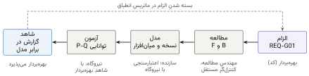
مثال 28.36 (مثالِ کارشده: فهرست و ماتریس) پرسش. برای نقطهٔ اتصالِ پیشنهادیِ نیروگاهِ P فهرستِ ورودیِ مطالعه و ماتریسِ انطباق را بسازید و بگویید کدام الزامها بیآزمونِ محل بسته میشوند و کدام هنوز هیچ راهِ بسته شدن ندارند.
پاسخ. سی ورودی: ۱۶ رسیده، ۷ درخواستشده، ۲ فرضشده، ۵ گمشده. بیستوچهار الزام: همه منتظرِ IN-10 (خودِ کد)؛ پنج الزام با اعلامِ سازنده، گزارشِ مطالعه یا گزارشِ اعتبارسنجی بسته میشوند (REQ-G08، G11، G18، G21، G22)؛ REQ-G24 (پاسخِ سریعِ فرکانس، فقط با قرارداد) نه آزمونی دارد نه شاهدی.
تفسیر. ماتریس سه کار میکند: نشان میدهد هر الزام چگونه بسته میشود، چه چیزی آن را نگه داشته (ورودیِ باز) و چه کسی باید حرکت کند (مالکِ ورودی). الزامی که نه آزمون دارد نه شاهد (G24) یا باید از دامنه بیرون برود یا حلقههایش تعریف شوند (بخش 28.7.3). ماتریس با پیشرفتِ پروژه بهروز میشود و در اعلامِ بهرهبرداری باید بسته باشد. وارسی: \(16 + 7 + 2 + 5 = 30\).
- چرا فهرست و ماتریس از یک منبعِ ثبت ساخته میشوند؟
- اگر بهرهبردار کد را بفرستد (IN-10 رسیده)، کدام الزام هنوز ورودیِ باز دارد؟
- الزامی بیآزمون و بیشاهد را چه میکنید؟
28.5.3 دفترِ فرضها و مرزهای تأیید
دفترِ فرضها. هر فرض با نتیجههایی که میتواند تغییر دهد ثبت میشود؛ وقتی شاهد برسد، فرض بسته میشود و مطالعههای وابسته دوباره اجرا میشوند یا بیحساسیتیشان نشان داده میشود:
assumption log of the study (each with the results it can change)
id assumption affects
A-341 minimum POC strength 900 MVA, X/R 6 B-sc, C-vcontrol, E-weak
A-342 unit transformers uk 6 %, 9 kW/MVA B-losses, B-reactive
A-343 ride-through case 0.20 pu for 150 ms C-frt
A-344 frequency event systems and droops C-freq
A-345 line weather model (rates of ch 18) G-contingency, G-line
A-346 zero-sequence ratios (grid 1.5, line 3) B-earth
A-347 connection options, locus, emissions G-alternatives, B-locus
A-348 values of the later lessons C, F, G (several)
TA-01 frequency ranges (IN-05 assumed) C-freq, REQ-G08
TA-02 plant element outage rates (IN-30) G-contingency
TA-03 line impedance calculated, not measured B, G (sensitivity)
an assumption is closed by evidence (data received or
measured) and the affected studies are rerun or shown
insensitive - the log is part of the submissionمرزهای تأیید و مالکیتِ مدل. چه کسی آماده میکند و چه کسی تأیید میکند؟ هیچکس کارِ خودش را تأیید نمیکند:
approval boundaries of the study (who prepares, reviews, approves)
item prepares approves
study scope and cases plant study engineer operator
input data data owner data owner signs
unit and controller models OEM operator accepts
study results study engineer licensed engineer + operator
protection settings protection engineer operator (interface)
test programme plant operator
compliance statement plant operator (operating notice)
the operator owns the network model and the code; the OEM
owns its models; the plant owns its data and the study;
no one approves their own work - an independent checker
and a licensed engineer sign the resultsمثال 28.37 (فرضی که به سه مطالعه میرسد) پرسش. اگر بهرهبردار کمینهٔ قدرتِ شبکه را 700 بهجای 900 MVA اعلام کند، کدام نتیجهها باید دوباره اجرا شوند؟
پاسخ. فرضِ A-341 به اتصالِ کوتاهِ کمینه (حساسیتِ حفاظت)، پایداریِ کنترلِ ولتاژ و مطالعهٔ شبکهٔ ضعیف میرسد: هر سه.
تفسیر. دفترِ فرضها تغییر را از «شاید چیزی عوض شود» به فهرستی مشخص از اجراها بدل میکند. مالکیتِ مدلها هم اینجا روشن است: مدلِ شبکه از بهرهبردار، مدلهای واحد از سازنده، دادهٔ نیروگاه و خودِ مطالعه از نیروگاه؛ نتیجه را بازبینِ مستقل و مهندسِ دارای صلاحیت امضا میکنند و بهرهبردار میپذیرد. وارسی: ستونِ «affects» در دفتر برای A-341 سه مطالعه دارد.
- چرا دفترِ فرضها بخشی از بستهٔ ارسالی است؟
- چه کسی نتیجهٔ مطالعه را تأیید میکند و چرا نه خودِ مهندسِ مطالعه؟
28.5.4 محدودیتهای بهرهبرداری و مطالعهٔ زنده
محدودیتها. هر مطالعه شرطی را پیدا میکند که در آن نیروگاه باید کاری را نکند یا جورِ دیگری کار کند. اینها در یک ثبت جمع میشوند:
operating restrictions written by the studies (teaching register)
condition restriction source
one main transformer out export <= 62 MW, coupler closed G-contingency
grid at 1.10 pu, output units absorb Q (taps at stop) B-stability
minimum grid strength voltage-loop gain retuned C-vcontrol
line maintenance plan for a calm day G-contingency
45 C day, full output Q > +29 Mvar needs S1 or bank F-envelope
loss of the grid end intertrip within 0.15 s C-islanding
export near 100 MW set-point 98-99 MW r_limit
each restriction becomes a line in the operating
procedures (ch 51) and, where it can, a rule in the plant
controller (ch 20) - a study result nobody operates by is
not yet finishedرویدادهایی که مطالعه را دوباره باز میکنند. مطالعه یک بار تمام نمیشود؛ هر تغییری در شبکه، نیروگاه، میانافزار یا کد آن را باز میکند:
events that reopen the study (teaching register)
event change rerun
a new plant beside the POC (50 MW) WSCR 5.8 -> 4.9 E, B-locus
grid strength falls 20 % SCR 15 -> 12 B-sc, C-vcontrol
unit firmware changed k 2.0 -> 2.5 C-frt, F-versions
line re-conductored R -30 % B-losses, G-line
battery added (S0 -> S1) +20 MVA B, C, F all
code revised by the operator U-102 matrix, all
the study is a living record: each trigger names the
studies to rerun and the matrix rows to reopen; the plant's
change control (ch 38) asks the question for every changeمثال 28.38 (نتیجهای که کسی با آن کار نکند) پرسش. محدودیتِ «خروجِ یک ترانسفورماتورِ اصلی» کجا باید ثبت شود و یک نیروگاهِ تازهٔ 50 MW کنارِ نقطهٔ اتصال چه چیزی را باز میکند؟
پاسخ. در دستورالعملِ بهرهبرداری (فصلِ ۵۱) و در صورت امکان بهصورتِ قاعدهای در کنترلکنندهٔ نیروگاه (فصلِ ۲۰)؛ نیروگاهِ تازه WSCR را از 5.8 به 4.9 میبرد و مطالعهٔ شبکهٔ ضعیف و هارمونیک را باز میکند.
تفسیر. نتیجهٔ مطالعهای که کسی با آن کار نکند هنوز تمام نشده است. ثبتِ محدودیتها مطالعه را به بهرهبرداری میرساند و ثبتِ رویدادها آن را زنده نگه میدارد؛ کنترلِ تغییرِ نیروگاه (فصلِ ۳۸) برای هر تغییر میپرسد کدام ردیفِ ماتریس دوباره باز میشود. وارسی: \((1500 \times 100 + 1500 \times 80 + 1095 \times 60 + 1500 \times 50)/290^2 = 4.9\).
- دو محدودیت نام ببرید که میتوانند به قاعدهٔ کنترلکننده بدل شوند.
- اگر بهرهبردار کد را بازنگری کند، کدام بخشِ مطالعه باز میشود؟
28.5.5 کاملبودنِ گزارشِ مطالعه
ایده. گزارشِ مطالعه پیش از رفتن به بهرهبردار با یک فهرستِ ثابت سنجیده میشود. یک پیشنویسِ آموزشی:
completeness of a draft study report (15 items)
[ok] scope and stage
[ok] input register with owners
[ ] assumption log
[ok] models with versions and validation
[ok] cases (max/min, voltages, outages)
[ok] load flow and reactive capability
[ok] losses
[ok] short circuit (max/min)
[ok] protection interfaces
[ok] dynamic results (FRT, frequency, control)
[ ] sensitivities
[ok] compliance matrix
[ ] operating restrictions
[ ] independent check
[ok] signatures and approvals
11 of 15 present; the four missing are
the ones that show what the results depend on and who
checked them - the report goes back before it goes outمثال 28.39 (چهار قلمی که نیست) پرسش. کدام قلمها نیستند و چرا مهماند؟
پاسخ. دفترِ فرضها، حساسیتها، محدودیتهای بهرهبرداری و وارسیِ مستقل.
تفسیر. همین چهار قلم نشان میدهند نتیجهها به چه وابستهاند و چه کسی آنها را وارسی کرده است؛ بی آنها گزارش فقط عددهاست. گزارش پیش از ارسال برمیگردد (بخش 28.5.3، بخش 28.8.5، بخش 28.5.4، بخش 28.3.12). وارسی: \(11/15 = 73\,\%\).
- چرا «امضاها» بی «وارسیِ مستقل» کافی نیست؟
- یک قلمِ شانزدهم پیشنهاد کنید.
28.6 ه. مطالعههای شرطیِ شبکهٔ ضعیف و جزیره
نیروگاهِ P پیروِ شبکه است و نه سازندگیِ شبکه، نه جزیره برای صادرات و نه راهاندازیِ سیاه پیشنهاد میکند (D-024). مطالعههای این بخش فقط وقتی انجام میشوند که الزامی یا قراردادی آنها را بخواهد؛ هیچکدام به این معنا نیست که این کارکردها در دسترس یا مجازند. شواهدِ نصب، راهاندازی و بهرهبرداریِ آنها در فصلهای ۵۰ و ۵۱ میآید.
28.6.1 قدرتِ شبکه با همسایهها
ایده. نسبتِ اتصالِ کوتاه (\(\mathrm{SCR} = S_\text{sc}/P\)) قدرتِ شبکه را از دیدِ یک نیروگاه میگوید. خازنهای موازی آن را کمی کم میکنند (ESCR). وقتی چند نیروگاهِ مبدلمحور نزدیکِ هماند، کنترلهایشان با هم کار میکنند و شبکه ضعیفتر از آن رفتار میکند که هر کدام تنها میبیند؛ یک وزندهیِ رایج:
\[ \mathrm{WSCR} = \frac{\sum_i S_{\text{sc},i}\,P_i}{\left(\sum_i P_i\right)^{2}} \tag{28.8}\]
grid strength seen by Plant P alone and with its neighbours (teaching)
case SCR ESCR (with 7.1 Mvar shunt) WSCR (P, Q, R) dU per 10 Mvar %
max 15.0 14.9 5.8 0.67
min 9.0 8.9 3.5 1.11
neighbour: plant Q, PV at the same substation, 80 MW
neighbour: plant R, wind 20 km away, 60 MW
alone the plant sees a strong grid (SCR 9-15); with the two
converter plants beside it the grid behaves as if it were
much weaker (WSCR 3.5-5.8) - converter interactions are
studied with all of them in an EMT model, not one at a timeمثال 28.40 (تنها قوی، با هم ضعیف) پرسش. نیروگاهِ P تنها و با دو همسایهاش چه قدرتی میبیند (حالتِ کمینه)؟
پاسخ. SCRِ ۹ تنها؛ WSCRِ 3.5 با همسایهها.
تفسیر. نیروگاهی که تنها در شبکهٔ قوی است، با همسایههایش در مرزِ «ضعیف» مینشیند؛ برهمکنشِ کنترلها با مدلِ EMT همهٔ آنها با هم مطالعه میشود (REQ-G22)، و برای آن بهرهبردار باید فهرستِ همسایهها و مدلهایشان را بدهد (IN-11، U-103). ضریبِ تغییرِ ولتاژ هم در شبکهٔ کمینه حدودِ ۱٫۷ برابرِ بیشینه است: ده مگاوار در شبکهٔ کمینه 1.11 % ولتاژ را جابهجا میکند. وارسی: \((900 \times 100 + 900 \times 80 + 657 \times 60)/240^2 = 3.5\).
- WSCRِ دو نیروگاهِ 100 MW روی 1,500 و 1,000 MVA؟
- ESCR با 20 Mvar خازن روی 900 MVA برای 100 MW؟
28.6.2 سازندهٔ شبکه در برابرِ پیروِ شبکه
ایده. مبدلِ پیروِ شبکه (به انگلیسی grid-following) با حلقهٔ قفلِ فاز زاویهٔ شبکه را دنبال میکند و جریانی کنترلشده تزریق میکند. مبدلِ سازندهٔ شبکه (grid-forming) خودش یک ولتاژ پشتِ یک واکنشی است، مانندِ ماشین؛ وقتی زاویهٔ شبکه میپرد، بیدرنگ جریان میدهد:
\[ \Delta I = \frac{2\sin(\Delta\theta/2)}{x} \tag{28.9}\]
extra current after a grid phase jump (pu of rating, teaching)
jump deg grid-forming x 0.15 x 0.30 grid-following (PLL)
10 1.16 0.58 ~0 (tracks)
20 2.32 1.16 ~0 (tracks)
40 4.56 2.28 ~0 (tracks)
a grid-forming source answers a jump at once, like a
machine: with x 0.15 a 10 degree jump alone nearly fills a
1.2 pu current limit; a grid-following one tracks the angle
and helps only through its controls - which behaviour the
operator wants, and the current headroom for it, is a
requirement and a study, never a default (D-024)مثال 28.41 (پاسخِ بیدرنگ، با بهای جریان) پرسش. با پرشِ فازِ 20 درجه و \(x = 0.15\) پریونیت، سازندهٔ شبکه چه جریانِ افزودهای میخواهد؟
پاسخ. 2.32 پریونیت.
تفسیر. این پاسخ همان چیزی است که سامانهای با ماشینهای کمتر از سازندهٔ شبکه میخواهد (لختی و پشتیبانیِ لحظهای)، ولی با حدِ جریانِ 1.2 پریونیت حتی پرشِ دهدرجهای تقریباً همهٔ حاشیه را میگیرد. کدام رفتار خواسته است، و جای جریانی که لازم دارد، یک الزام و یک مطالعه است، نه پیشفرض؛ در نیروگاهِ P، اگر روزی خواسته شود، گزینهاش باتری (S1) با مطالعهٔ EMT و حفاظتِ خودش است. وارسی: \(2\sin 10^\circ/0.15 = 2.32\).
- جریانِ افزوده با پرشِ 15 درجه و \(x = 0.2\)؟
- چرا مبدلِ پیروِ شبکه به پرشِ فاز تقریباً پاسخِ لحظهای نمیدهد؟
28.6.3 حفاظت وقتی فقط مبدلها جریانِ خطا میدهند
ایده. حفاظتِ معمولی روی جریانِ زیادِ خطا حساب میکند. در جزیرهای که فقط مبدل تغذیهاش میکند (مثلاً تغذیهٔ بارهای حیاتی از باتری، D-022)، جریانِ خطا به حدِ جریانِ مبدل محدود است. تابلوی 400 V نیروگاه را در دو حالت مقایسه کنید:
fault current at the 400 V auxiliary board: grid-fed or islanded
grid-fed through the 250 kVA station transformer (uk 4 %): 9.02 kA
islanded from a 250 kVA grid-forming source at 1.2 pu: 0.43 kA
type C breaker instantaneous trip at 10 x In grid-fed islanded
16 A 0.16 kA trips trips
32 A 0.32 kA trips trips
63 A 0.63 kA trips slow
100 A 1.00 kA trips slow
160 A 1.60 kA trips slow
in an island fed only by converters every breaker above
about 40 A clears a fault on its slow thermal curve, if at
all: the protection of an islanded supply is designed for
it (undervoltage, differential, a source that can give
more current) - it is not the grid-connected designمثال 28.42 (کلیدی که دیگر سریع نیست) پرسش. در جزیره از منبعِ 250 kVA با 1.2 برابر جریان، کدام کلیدهای نوعِ C خطا را در ناحیهٔ لحظهای قطع میکنند؟
پاسخ. فقط 16 و 32 A؛ از 63 A به بالا روی منحنیِ کندِ حرارتی، اگر اصلاً.
تفسیر. طراحیِ حفاظتِ وصل به شبکه در جزیره کار نمیکند؛ تغذیهٔ جزیرهای حفاظتِ خودش را میخواهد: کمولتاژی، دیفرانسیل، یا منبعی که بتواند جریانِ بیشتری بدهد. این مطالعه شرطِ هر کارکردِ جزیرهای است و بی آن کارکرد فعال نمیشود. وارسی: \(1.2 \times 250/(\sqrt{3} \times 0.4) = 433\,\text{A}\).
- جریانِ خطای تابلو از شبکه از راهِ ترانسفورماتورِ 250 kVA با 6 %؟
- چرا رلهٔ کمولتاژی در جزیرهٔ مبدلمحور مفید است؟
28.6.4 راهاندازیِ سیاه و همگامسازیِ دوباره
ایده. اگر جزیرهای باید دوباره به شبکه وصل شود، کلید فقط وقتی بسته میشود که اختلافِ ولتاژ، فرکانس (لغزش) و زاویه کوچک باشد. زاویه با لغزش میچرخد، پس پنجرهٔ بستن با لغزش کوتاه میشود؛ و در لحظهٔ بستن توانی به اندازهٔ \(P = \sin\Delta\theta/x\) ناگهان جاری میشود:
joining an island back to the grid (synchronising check, teaching)
slip Hz angle deg/s +/-10 deg window s 80 ms breaker travel deg
0.05 18 1.11 1.4
0.10 36 0.56 2.9
0.20 72 0.28 5.8
power surge on closing through x = 0.2 pu (island rating 20 MVA)
angle deg surge pu surge MW
5 0.44 8.7
10 0.87 17.4
20 1.71 34.2
black start: a 63 MVA main transformer draws ~315 MVA of inrush
(5 x rated, teaching) against 24 MVA a 20 MVA battery can give;
it needs soft energisation (voltage raised from zero) designed
into both - Plant P offers neither black start nor islanded
export (D-024); a study and tests would come firstمثال 28.43 (پنجرهٔ نیمثانیهای) پرسش. با لغزشِ 0.1 Hz پنجرهٔ ±10 درجه چقدر طول میکشد، و بستن در 10 درجه برای جزیرهٔ 20 MVA چه ضربهای دارد؟
پاسخ. 0.56 s؛ 17.4 MW، تقریباً همهٔ ظرفیتِ جزیره.
تفسیر. حدهای همگامسازی از توانِ منبعِ جزیره میآیند، نه از عددی عمومی؛ و پیشروِ زاویه برای زمانِ حرکتِ کلید (2.9 درجه در 80 ms) در تنظیم دیده میشود. راهاندازیِ سیاه سختتر است: برقدار کردنِ ترانسفورماتورِ 63 MVA از باتریِ 20 MVA با هجومِ حدودِ 315 MVA ممکن نیست مگر برقدار کردنِ نرم در هر دو طراحی شده باشد. نیروگاهِ P هیچیک را پیشنهاد نمیکند (D-024)؛ مطالعه و آزمون مقدم بر هر پیشنهادند. وارسی: \(360 \times 0.1 = 36\) درجه بر ثانیه و \(20/36 = 0.56\,\text{s}\).
- پنجره با لغزشِ 0.15 Hz؟
- ضربهٔ توان در بستن با 8 درجه از راهِ 0.25 پریونیت؟
28.6.5 قدرتِ شبکه در پایانهٔ واحدها
ایده. نسبتِ اتصالِ کوتاه در نقطهٔ اتصال یک عدد است؛ ولی کنترلِ هر مبدل با قدرتِ شبکه در پایانهٔ خودش کار میکند، و میانِ آن و نقطهٔ اتصال ترانسفورماتورها نشستهاند. سطحِ اتصالِ کوتاه در هر جا، تقسیم بر مگاواتِ واحدهایی که پشتِ آناند:
short-circuit level seen from each place, per MW of the units behind it
place grid S_sc MVA MW behind ratio
POC max 1498 100 15.0
MV-A max 364 65 5.6
WS1 units (aggregated) max 177 20 8.8
PVF3 units (aggregated) max 153 15 10.2
POC min 898 100 9.0
MV-A min 313 65 4.8
WS1 units (aggregated) min 164 20 8.2
PVF3 units (aggregated) min 143 15 9.5
per MW of the units behind it, the 33 kV bus half is the
weakest place (5.6, and 4.8 on the weak grid) and the
units' terminals see 8-10 against 15 at the POC - the
transformers sit in between; a converter's control is
tuned for the strength at its terminals, which the plant's
study gives the maker (ch 27 weak grid, lesson E)مثال 28.44 (ضعیفترین جا درونِ نیروگاه است) پرسش. نسبتِ سطحِ اتصالِ کوتاه به توانِ پشتِ آن در نقطهٔ اتصال، نیمشینهٔ MV-A و پایانهٔ واحدهای WS1 در شبکهٔ کمینه چیست؟
پاسخ. 9.0، 4.8 و 8.2.
تفسیر. نیروگاهی که در نقطهٔ اتصال «قوی» است، در شینهٔ 33 kV خود به مرزِ ضعیف نزدیک میشود، چون ترانسفورماتورِ اصلی میانِ آن و شبکه است و نیمی از نیروگاه پشتِ هر نیمهشینه. سازندهٔ مبدل باید قدرتِ شبکه را در پایانهٔ واحد بداند تا کنترل را تنظیم کند؛ مطالعه آن را به او میدهد و همین عدد در مطالعهٔ EMT با همسایهها (بخش 28.6.1) به کار میرود. وارسی: \(313/65 = 4.8\).
S1 در شب. وقتی باتری از شبکه شارژ میشود، نیروگاه در نقطهٔ اتصال بار است؛ مطالعه یک حالتِ واردات هم دارد:
S1 at night: the battery charges from the grid (grid max, 1.00)
battery MW P at POC MW Q at POC Mvar V MV-B losses MW
0 0.0 2.4 1.004 0.00
-10 -10.1 2.0 1.001 0.05
-20 -20.2 0.7 0.998 0.22
charging turns the plant into a load at the POC: the
operator's study of the plant then includes an import
case (voltage, losses, any import limit or tariff), and
the meters record both directions (ch 34, 37)- چرا نسبت در نیمشینهٔ 33 kV از پایانهٔ واحدها هم کمتر است؟
- در حالتِ واردات کدام الزامها و دادهها تازه مطرح میشوند؟
28.7 و. مطالعههای خدمتِ شبکه (وقتی خواسته یا قرارداد شده)
28.7.1 پوشِ توانایی در نقطهٔ اتصال
ایده. خدمتِ شبکه یعنی تعهد به یک توانایی؛ پس اول پوشِ توانایی در نقطهٔ اتصال مطالعه میشود: برای هر سطحِ توانِ فعال، بیشترین توانِ واکنشیِ دادن و جذب، با حدِ جریانِ واحدها، حدِ ولتاژِ پایانهها، تپها، تلفها و دما. سه حالت: S0 در 25 °C، S0 در روزِ 45 °C (کاهشِ ظرفیتِ 0.9)، و S1 با باتری:
P-Q envelope at the POC (grid max, source 1.00 pu; units inside 0.90-1.10)
P POC MW S0 25 C give/absorb S0 45 C give/absorb S1 25 C give/absorb
-1.3 +85.1 / -87.2 +85.1 / -87.2 +88.3 / -89.8
18.5 +83.0 / -89.8 +83.0 / -89.8 +86.1 / -92.5
38.2 +80.4 / -92.7 +80.4 / -92.7 +83.6 / -94.3
58.8 +77.2 / -96.1 +77.2 / -96.1 +80.6 / -95.8
78.3 +73.7 / -99.6 +60.4 / -97.2 +76.8 / -96.5
97.9 +50.8 / -97.3 +29.4 / -63.8 +68.2 / -95.6
at full output the hot day costs 21 Mvar of giving; the battery adds 17
least giving from 20 % to 100 % output, Mvar: S0 51, S0 hot 29, S1 68
a teaching requirement of +33 Mvar is met at 25 C but NOT
on a 45 C day at full output; the battery (S1) or a
capacitor bank would close the gap - so the requirement's
temperature and the battery's share are study inputs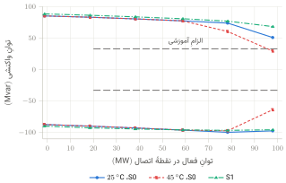
مثال 28.45 (روزِ گرم، الزامِ نابرآورده) پرسش. در توانِ کامل، دادنِ توانِ واکنشی در سه حالت چیست و الزامِ آموزشیِ +33 Mvar کجا برآورده نمیشود؟
پاسخ. 50.8، 29.4 و 68.2 Mvar؛ در روزِ 45 °C برآورده نیست.
تفسیر. کاهشِ ظرفیتِ دمایی جریانِ واحدها را کم میکند و در توانِ کامل همان را از توانِ واکنشی میگیرد. سه راه: سهمِ باتری (S1)، بانکِ خازنی (با خطرِ تشدیدِ فصلِ ۲۷) یا محدودیتِ نوشتهشده با بهرهبردار. دمایی که الزام در آن سنجیده میشود و سهمِ باتری در تخصیصِ کنترلکننده ورودیِ مطالعه است، نه فرض. وارسی: \(50.8 - 29.4 = 21\,\text{Mvar}\) کاهش در روزِ گرم.
- چرا کاهشِ ظرفیتِ دمایی در توانِ کم اثری بر توانِ واکنشی ندارد؟
- سه راهِ پر کردنِ کمبودِ روزِ گرم را با یک عیبِ هر کدام نام ببرید.
28.7.2 برهمکنشِ کنترلها: دو انتگرالگیر روی یک کمیت
ایده. در نیروگاهِ هیبرید چند کنترلکننده روی ولتاژ و توانِ واکنشی کار میکنند: کنترلکنندهٔ نیروگاه در نقطهٔ اتصال، کنترلِ محلیِ هر واحد در پایانهاش، و کنترلِ باتری. اگر دو کنترلکننده با انتگرالگیر دو ولتاژِ نزدیک ولی متفاوت را به یک مقدار بخواهند برسانند، با هم میجنگند:
def fight(local: str, t_end: float = 60.0, dt: float = 0.05) -> tuple:
"""Plant controller integrating the POC voltage error together with
unit-level control at the terminals: 'off' (units follow the plant
set-point), 'droop' (proportional) or 'integral' (a second
integrator). Returns the final plant and local Mvar and voltages."""
s_sc, drop = 1500.0, 0.015 # terminals sit 1.5 % above POC
q_p = q_l = 0.0
for _ in range(int(t_end / dt)):
q = max(min(q_p + q_l, 46.0), -46.0)
v_poc = 0.995 + q / s_sc
v_unit = v_poc + drop + q / 1000.0
q_p += 300.0 * (1.0 - v_poc) * dt
q_p = max(min(q_p, 46.0), -46.0)
if local == "droop":
q_l = -400.0 * (v_unit - 1.0) * 0.1
elif local == "integral":
q_l += 300.0 * (1.0 - v_unit) * dt
q_l = max(min(q_l, 46.0), -46.0)
return q_p, q_l, v_poc, v_unittwo voltage controllers in series (POC set-point 1.00; terminals 1.5 % above)
unit mode plant Mvar local Mvar V POC V terminal
off 7.5 0.0 1.000 1.022
droop 8.4 -0.9 1.000 1.022
integral 46.0 -46.0 0.995 1.010
with the units following the plant set-point the POC sits
at 1.00; a local droop leaves a small offset the plant's
integrator removes; a second integrator chasing 1.00 at the
terminals fights the first: both wind up to opposite
limits, the net Mvar is whatever is left - one integrator
per controlled quantity, and the study checks the modesمثال 28.46 (جنگِ انتگرالگیرها) پرسش. با کنترلِ محلیِ انتگرالی در واحدها، توانِ واکنشیِ کنترلکنندهٔ نیروگاه و واحدها و ولتاژِ نقطهٔ اتصال چه میشود؟
پاسخ. +46 و −46 Mvar (هر دو در حد)، و نقطهٔ اتصال در 0.995 بهجای 1.00.
تفسیر. پایانهها 1.5 % بالاتر از نقطهٔ اتصالاند؛ هر دو هدف با هم شدنی نیستند و هر انتگرالگیر تا حدش میرود. قاعده: یک انتگرالگیر برای هر کمیتِ کنترلشده؛ واحدها زیرِ کنترلکنندهٔ نیروگاه در حالتِ پیروی یا افت (تناسبی) کار میکنند، و مطالعه حالتها و تنظیمها را با مدلِ واحد و کنترلکننده با هم وارسی میکند (IN-23). وارسی: در حالتِ «off» نقطهٔ اتصال دقیقاً 1.000 است.
- چرا کنترلِ افتِ تناسبی با انتگرالگیرِ نیروگاه نمیجنگد؟
- باتری و اینورترهای خورشیدی هر دو توانِ واکنشی میدهند؛ چه کسی سهمها را تعیین میکند؟
28.7.3 نسخهٔ مدل و میانافزار، و ردیابیِ یک خدمت
نسخهها. مدلی که مطالعه با آن انجام شد باید با چیزی که در محل نصب است بخواند: نسخهٔ مدل، میانافزار و چکیدهٔ تنظیمها. ثبتِ مدلها با پیکربندیِ محل مقایسه میشود:
model and firmware versions: study against site (register, teaching)
model kind in the study on site check
wind converter RMS generic G-4.0 (61400-27-1) G-4.0 ok
wind converter EMT vendor W-EMT 7.2 W-EMT 7.3 CHECK
PV inverter RMS vendor PV-RMS 2.3 / FW 4.1.7 FW 4.2.0 CHECK
PV inverter EMT vendor PV-EMT 5.0 / FW 4.1.7 FW 4.2.0 CHECK
BESS PCS RMS vendor not received FW 2.0.3 CHECK
plant controller RMS vendor PPC 1.4, settings 7a91 settings 7a91 ok
collector network aggregated rev C (this chapter) rev C ok
132 kV line pi model calculated to be measured CHECK
5 of 8 need action: a firmware change after the
study (PV 4.1.7 -> 4.2.0) needs the OEM's statement that the
model still holds or a new model; a missing model blocks the
study it feeds; a calculated line is replaced by measurementردیابیِ یک خدمت. خدمتِ پاسخِ سریعِ فرکانس (REQ-G24، فقط با قرارداد) از الزام تا شاهد دنبال میشود؛ هر حلقه وضعِ خودش را دارد:
one service traced from requirement to evidence (teaching)
link content status
requirement REQ-G24: 5 MW, 15 min, within 1 s placeholder
capability BESS headroom 5 MW, 1.25 MWh above SOC floor S1 only
study C-freq, F-envelope with the BESS model blocked IN-24
model BESS PCS RMS model, firmware 2.0.3 not received
test frequency injection at plant controller planned
measurement 100 ms POC data with time stamps (ch 27) available
evidence test report vs model, operator acceptance open
the chain is only as good as its weakest link: here the
missing battery model blocks the study, so the service
cannot be offered yet whatever the battery could doمثال 28.47 (پنج از هشت، و یک زنجیرهٔ شکسته) پرسش. چند مدل پیش از ارسال اقدام میخواهند، و چرا خدمتِ پاسخِ سریع هنوز قابلِ پیشنهاد نیست؟
پاسخ. پنج از هشت؛ مدلِ PCS باتری نرسیده و مطالعهای که باید توانایی را نشان دهد مسدود است.
تفسیر. تغییرِ میانافزارِ اینورتر پس از مطالعه (4.1.7 به 4.2.0) یا اعلامِ سازنده میخواهد که مدل هنوز معتبر است یا مدلِ تازه؛ خطِ حسابشده با اندازهگیری جایگزین میشود. زنجیرهٔ خدمت به اندازهٔ ضعیفترین حلقهاش قوی است: هرچه باتری بتواند، بی مدل و مطالعه و آزمون خدمتی پیشنهاد نمیشود. این همان قاعدهٔ ماتریسِ پذیرشِ فصلِ ۲۷ است، اینبار برای مدل. وارسی: ثبتِ مدلها هشت ردیف و پنج «CHECK» دارد.
- اگر سازنده پس از آزمونِ نوعی میانافزار را عوض کند، کدام شاهد باید تکرار شود؟
- هفت حلقهٔ زنجیرهٔ یک خدمت را نام ببرید.
28.7.4 باتری میانِ خدمتها: سهم و اولویت
ایده. در S1، مبدلهای باتری (20 MVA) هم دیسپچ دارند، هم ذخیرهٔ فرکانس (اگر قرارداد شده) و هم توانِ واکنشی برای نقطهٔ اتصال. ذخیره توانی است که هر لحظه باید بتواند اضافه شود، پس حتی وقتی مصرف نمیشود از حدِ جریان کم میکند:
battery converters (20 MVA) shared: dispatch, a 5 MW frequency reserve
held back, and the reactive power left for voltage support
dispatch MW P that must fit MW Q available Mvar
0 5 19.4
5 10 17.3
10 15 13.2
15 20 0.0
the reserve is power the converter must be able to add at
any moment, so it is counted against the current limit
even when unused; the battery's reactive power for the
POC (lesson F) shrinks as dispatch grows - the controller
allocates, and the study checks the cornersهمزمانی. اگر فرورفتِ ولتاژ (جریانِ واکنشی میخواهد) و رویدادِ فرکانس (توانِ فعال میخواهد) با هم بیایند، حدِ جریان هر دو را کامل نمیدهد و اولویت تعیین میکند کدام میبرد:
a dip (needs reactive current) and a frequency event (needs active
power) together: 1.1 pu current limit, battery exporting 0.5 pu
with a 0.25 pu frequency reserve; the dip asks for 1.0 pu reactive
priority reactive got/need active got/need reserve delivered
Q first 1.00 / 1.00 0.46 / 0.75 0 %
P first 0.80 / 1.00 0.75 / 0.75 100 %
the current limit cannot serve both in full: with reactive
priority (usual for ride-through) the reserve and even part
of the export vanish during the dip; with active priority
the voltage gets a fifth less support - the requirement or
the contract states which wins, and the study shows the costمثال 28.48 (یکی میبرد) پرسش. با دیسپچِ 10 MW و ذخیرهٔ 5 MW چه توانِ واکنشیای میماند؟ در همزمانی با اولویتِ واکنشی، چند درصدِ ذخیره تحویل میشود؟
پاسخ. 13.2 Mvar؛ صفر درصد (و بخشی از صادرات هم میافتد: 0.46 بهجای 0.75 پریونیت).
تفسیر. اولویتِ واکنشی برای عبور از خطا معمول است، ولی یعنی ذخیرهٔ فرکانس در فرورفت حاضر نیست؛ اولویتِ فعال ولتاژ را یکپنجم کمتر پشتیبانی میکند. الزام یا قرارداد میگوید کدام، و مطالعه بهایش را نشان میدهد؛ سهمِ باتری در توانِ واکنشیِ نقطهٔ اتصال (مثال 28.45) هم از همین حساب میآید. وارسی: \(\sqrt{20^2 - 15^2} = 13.2\).
- توانِ واکنشیِ باقی با دیسپچِ 8 MW و ذخیرهٔ 4 MW؟
- چرا ذخیرهٔ مصرفنشده هم از حدِ جریان کم میکند؟
28.7.5 اثرِ یک تغییرِ میانافزار
ایده. سازندهای که پس از مطالعه میانافزار را عوض کند، شاید فقط «بهبود» داده باشد؛ ولی هر پارامتر به چند ردیفِ ماتریسِ انطباق میرسد. بهرهٔ جریانِ واکنشی از 2.0 به 2.5:
a firmware change raises the reactive-current gain from 2.0 to 2.5
(weak grid, the grid source dips to 0.50 pu for 150 ms)
quantity k 2.0 (studied) k 2.5 (new) rows hit
POC voltage in the dip pu 0.61 0.63 G04, G06
reactive power in the dip Mvar 57.96 70.99 G06
highest voltage after clearing pu 1.11 1.13 G05
active power back (90 %) s 0.00 0.20 G07
the dip voltage improves, but the overshoot after clearing
grows, and the larger reactive current now cuts active
current, so the recovery requirement applies where it did
not before - a change that helps one requirement can hurt
another: every compliance row touched by the changed
parameter is rerun, and the OEM's statement names themمثال 28.49 (بهبودی که الزامِ تازه میآورد) پرسش. کدام نتیجهها بهتر و کدام بدتر میشوند و کدام الزام تازه مطرح میشود؟
پاسخ. ولتاژ در فرورفت بهتر (0.61 به 0.63)؛ گذرِ ولتاژ پس از رفعِ خطا بدتر (1.11 به 1.13)؛ و چون جریانِ فعال حالا بریده میشود، بازگشتِ توانِ فعال (REQ-G07) با 0.20 s تازه مطرح است.
تفسیر. تغییری که یک الزام را بهتر میکند ممکن است دیگری را بدتر کند یا الزامی تازه را به کار بیندازد. اعلامِ سازنده ردیفهای متأثر را نام میبرد، آن ردیفها دوباره اجرا میشوند و ثبتِ نسخهها بهروز میشود (بخش 28.7.3). وارسی: \(2.5(1 - 0.63) = 0.93\) در برابرِ \(2(1 - 0.61) = 0.78\) پریونیت جریانِ واکنشی.
- چرا با \(k = 2.5\) جریانِ فعال در فرورفت بریده میشود ولی با \(k = 2\) نه؟
- برای این تغییر کدام شاهد را از سازنده میخواهید؟
28.7.6 الزامِ وابسته به ولتاژ: نمودارِ U-Q/Pmax
ایده. الزامِ توانِ واکنشی اغلب یک عدد نیست، یک شکل است: هرچه ولتاژِ شبکه پایینتر باشد، دادنِ توانِ واکنشیِ بیشتری لازم است و جذب کمتر، و برعکس. توانایی در هر ولتاژ با ولتاژی سنجیده میشود که شبکه با \(Q = 0\) میسازد (U-102: شکلِ اینجا آموزشی است):
reactive capability at full output against a teaching U-Q/Pmax profile
(grid min; the requirement is read at the POC voltage the grid
sets with Q = 0, then the plant's limit is computed there)
source U POC at Q=0 give Q/Pmax need absorb Q/Pmax need ok
0.92 0.932 0.46 0.33 -0.52 -0.11 yes
0.95 0.962 0.46 0.33 -0.63 -0.21 yes
1.00 1.012 0.47 0.29 -0.82 -0.33 yes
1.05 1.062 0.40 0.12 -0.90 -0.33 yes
1.08 1.092 0.31 0.03 -0.90 -0.33 yes
at every swept voltage the plant meets the teaching profile
in both directions at 25 C (lesson F shows the hot day);
the profile's shape, not one number, is the requirement -
the operator's own profile replaces this one (U-102)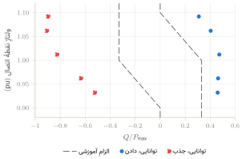
مثال 28.50 (شکل، نه یک عدد) پرسش. با ولتاژِ منبعِ 1.05 پریونیت، ولتاژِ نقطهٔ اتصال در \(Q = 0\)، الزام و توانایی در دادن و جذب چیست؟
پاسخ. 1.062؛ دادن: لازم 0.12 و توانایی 0.40؛ جذب: لازم −0.33 و توانایی −0.90.
تفسیر. در همهٔ ولتاژهای بررسیشده نیروگاه در 25 °C الزامِ آموزشی را برآورده میکند؛ کمحاشیهترین جا دادن در ولتاژِ کم است (0.46 در برابرِ 0.33)، همان جایی که روزِ گرم (مثال 28.45) بیشترین فشار را میآورد. شکلِ بهرهبردار جای این شکل را میگیرد و مطالعه هر دو حدِ دما را با آن میسنجد. وارسی: \(0.33 \times (1.10 - 1.062)/0.10 = 0.125\).
- الزامِ دادن در ولتاژِ 1.08 پریونیت با این شکل؟
- چرا الزام با ولتاژِ \(Q = 0\) سنجیده میشود، نه با ولتاژِ پس از کنشِ نیروگاه؟
28.7.7 بستهٔ تحویلِ مدلها
ایده. پس از راهاندازی، نیروگاه مدلهایی را به بهرهبردار میدهد که بهرهبردار سالها در مطالعههای خودش به کار میبرد (REQ-G21). یک بستهٔ کامل اینهاست:
| قلم | محتوا | منبع | شاهدِ پذیرش |
|---|---|---|---|
| دادهٔ شبکهٔ نیروگاه | شینهها، شاخهها، ترانسفورماتورها با تپ، تجمیعها | نیروگاه (بخش 28.3.1) | پخشِ بار در برابرِ اسکادا (بخش 28.3.9) |
| مدلهای RMS | واحدها، کنترلکنندهٔ نیروگاه، باتری، با پارامترها | سازنده | اعتبارسنجی با آزمونِ نوعی و رکوردِ راهاندازی (بخش 28.4.6) |
| مدلهای EMT | جعبهسیاهِ رمزشده با راهنمای کاربر | سازنده | اجرای نمونه با نتیجهٔ معلوم |
| ثبتِ نسخهها | مدل، میانافزار، چکیدهٔ تنظیم | نیروگاه (بخش 28.7.3) | همخوانی با محل |
| نمودارهای بلوکی و تنظیمها | حالتها، شیبها، حدها، اولویتها | سازنده و نیروگاه | با پروندهٔ تنظیم (فصلِ ۲۶) |
| گزارشِ اعتبارسنجی | رکوردها، پنجرهها، خطاها، حدها | نیروگاه | پذیرشِ بهرهبردار |
| شرطِ محرمانگی | استفاده، نگهداری، دسترسی | سازنده و بهرهبردار | قراردادِ امضاشده |
مثال 28.51 (مدلی که بعد از ما کار میکند) پرسش. چرا بستهٔ تحویل بدونِ ثبتِ نسخهها و گزارشِ اعتبارسنجی پذیرفته نمیشود؟
پاسخ. چون بهرهبردار نمیداند مدل همان نیروگاهی است که کار میکند یا نه، و چقدر به نتیجهاش اعتماد کند.
تفسیر. مدلِ تحویلی سالها پس از پایانِ پروژه در مطالعههای بهرهبردار میماند: برای اتصالِ نیروگاههای بعدی، برای بازبینیِ کد، برای بررسیِ رویدادها. هر تغییرِ بعدیِ میانافزار یا تنظیم بسته را دوباره باز میکند (بخش 28.5.4)؛ نگهداری از آن بخشی از بهرهبرداری است (فصلهای ۵۱ و ۵۳). وارسی: هفت قلمِ جدول، هر کدام با منبع و شاهد.
- کدام قلمِ بسته پس از هر تغییرِ میانافزار بهروز میشود؟
- چرا مدلِ EMT با یک «اجرای نمونه» تحویل میشود؟
28.8 ز. مطالعههای سامانهٔ صادرات
ایده. مدارِ صادرات (خطِ 132 kV تا نقطهٔ اتصال) و پستِ اتصال درونِ مرزِ مطالعهاند: پخشِ بار، تلف، ولتاژ، اتصالِ کوتاه، حفاظت (بخش 28.3)، پویایی و پیشامدها. این بخش سه پرسشِ خاصِ آنها را میگیرد: رتبهٔ خط ساعت به ساعت، پیشامدهای N-1 و دادهٔ مسیر و مالکیت.
28.8.1 رتبهٔ خط ساعت به ساعت
فصلِ ۲۴ نشان داد خطِ 132 kV در روزِ گرم و بیباد کمتر میبرد. با آبوهوای ساعتیِ بستهٔ داده و همان تعادلِ حرارتی، رتبهٔ هر ساعت با صادراتِ همان ساعت مقایسه میشود:
def line_amps(t_air, v_wind, ghi, t_c: float = 75.0):
"""Rating (A) of the teaching 132 kV conductor from its heat balance
(as ch 24) with the hour's air temperature, wind across the line
and sunshine."""
d, eps, alpha = 0.0245, 0.5, 0.5
r_ac = 0.10e-3 * (1 + 0.00403 * (t_c - 20))
t4 = (t_c + 273) ** 4 - (t_air + 273) ** 4
p_rad = math.pi * d * eps * 5.67e-8 * t4
h = 3.9 + 8.8 * v_wind ** 0.6 if v_wind > 0 else 3.0
p_conv = math.pi * d * h * (t_c - t_air)
return math.sqrt(max(p_conv + p_rad - alpha * d * ghi, 0) / r_ac)the 132 kV line's rating hour by hour against the plant's export (one year)
static rating at 35 C, 0.6 m/s, full sun: 512 A; full export 437 A
wind across the line = factor x hub wind x (12/100)^0.2
factor lowest rating A hours < 437 A hours over least margin A
0.60 466 0 0 271
0.25 408 9 0 200
least margin (factor 0.6): 37 C, 0.4 m/s at the line, sun 972 W/m2,
export 45 MW = 195 A against 466 A
the 5 % of hours with the lowest rating average 30 MW of export
(year: 34 MW) and never reach 437 A: the wind that brings
full export also cools the line - the hot, still, sunny
hour of ch 24 comes with PV output only; even with wind
along the line (factor 0.25) no hour binds in this year,
but the least margin falls by a quarter: the study asks for
the line's real orientation and keeps a weather-based limit
in the controller as a fallback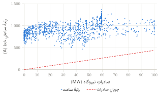
مثال 28.52 (بادی که خط را خنک میکند) پرسش. چند ساعت در سال جریانِ صادرات از رتبهٔ همان ساعت بیشتر است، و کمحاشیهترین ساعت چه شرایطی دارد؟
پاسخ. هیچ؛ کمحاشیهترین ساعت 37 °C، 0.4 m/s باد روی خط و 972 W/m² آفتاب، با صادراتِ 45 MW (195 A) در برابرِ رتبهٔ 466 A.
تفسیر. بادی که صادراتِ کامل را میآورد خط را هم خنک میکند؛ ساعتِ گرم و بیباد و آفتابیِ فصلِ ۲۴ با تولیدِ تقریباً فقط خورشیدی همراه است. حتی با بادِ همراستای خط (ضریبِ 0.25) هیچ ساعتی محدود نمیشود، ولی کمترین حاشیه یکچهارم کم میشود؛ پس مطالعه جهتِ واقعیِ خط را میخواهد و حدِ وابسته به آبوهوا را در کنترلکننده بهعنوانِ پشتیبان نگه میدارد. وارسی: \(45 \times 10^6/(\sqrt{3} \times 132{,}000) = 197\,\text{A}\)، نزدیکِ 195 (صادراتِ گردشده).
- جریانِ 80 MW در 132 kV با ضریبِ توانِ یک؟
- چرا همبستگیِ باد و صادرات برای نیروگاهِ بادی مهمتر از خورشیدی است؟
28.8.2 گزینههای اتصال
ایده. مطالعه فقط نقطهٔ اتصالِ برگزیده را نمیسنجد؛ دلیلِ برگزیدنش را هم ثبت میکند. سه گزینهٔ آموزشی (A-347): خطِ شعاعیِ 132 kV تا پستِ شبکه (مبنا، D-018)، انشعابِ کوتاه روی یک خطِ 132 kV گذرا، و سه مدارِ 33 kV تا پستِ منطقهای. برای هر کدام قدرتِ شبکه، تلف، انرژیِ در خطر و هزینه:
connection alternatives for the study (teaching data, A-347)
option SCR loss MW MWh/yr exposure capex
at 100 losses MWh/yr M u
A radial 132 kV line, 7.06 km 15.0 0.49 755 828 4.38
B 132 kV tee, 2 km 11.0 0.14 214 1723 2.50
C 3 x 33 kV circuits, 12 km 3.6 2.20 3422 160 6.84
(exposure: faults and one maintenance day a year of every
circuit the export depends on; one of three 33 kV circuits
out leaves two-thirds of the capacity)
the tee is cheapest but doubles the exposure - the plant
also stops for every fault and maintenance day of a 40 km
host line - and needs a three-ended protection scheme; the
33 kV option is weak (SCR below 4) and loses four to five
times more - the radial 132 kV line stays (D-018), and the
study records whyمثال 28.53 (ارزانترین، پرخطرترین) پرسش. کدام گزینه کمهزینهترین است و چرا برگزیده نمیشود؟
پاسخ. انشعاب (2.50 میلیون واحدِ پول)؛ انرژیِ در خطرش دو برابرِ مبناست (1,723 در برابرِ 828 MWh) و طرحِ حفاظتِ سهسر میخواهد.
تفسیر. نیروگاه با انشعاب به هر خرابی و روزِ نگهداریِ یک خطِ چهلکیلومتریِ میزبان هم بسته میشود؛ گزینهٔ 33 kV ضعیف است (SCR زیرِ ۴) و چهار تا پنج برابر تلف دارد. خطِ شعاعی میماند. تلف و انرژیِ در خطرِ مبنا با فصلِ ۱۸ (754 و 17 MWh خرابی) و مثال 28.55 میخوانند. وارسی: \(3 \times 437^2 \times 0.12 \times 7.06 = 0.49\,\text{MW}\).
- تلفِ سه مدارِ 33 kV در 100 MW با \(0.06\,\Omega/\text{km}\) و 12 km؟
- چرا انرژیِ در خطرِ گزینهٔ 33 kV کمتر است؟
28.8.3 هزینهٔ اتصال: کمعمق یا عمیق
ایده. چه کسی هزینهٔ اتصال را میپردازد؟ در قاعدهٔ کمعمق (به انگلیسی shallow) نیروگاه فقط اتصالِ خودش را میپردازد؛ در قاعدهٔ عمیق (deep) سهمی از تقویتِ شبکهٔ دورتر را هم. اینجا فقط مفهومِ تجاری است، نه مشورتِ حقوقی؛ قاعده از آنِ بهرهبردار و تنظیمگر است (فصلهای ۵۵ تا ۵۷):
shallow against deep connection charges (teaching; not legal advice)
charge capex M u u/MWh over 25 years at 7.5 %
shallow 4.38 1.33
deep 6.78 2.06
a 'shallow' charge pays for the plant's own connection; a
'deep' one adds a share of reinforcement further into the
grid (here 100 of 250 MW of a 6 M u upgrade); which rule
applies is the operator's and the regulator's (ch 55-57),
and the finance model (ch 21) carries it as a sensitivityمثال 28.54 (یک واحدِ پول در هر مگاواتساعت) پرسش. قاعدهٔ عمیق هزینهٔ ترازشده را چقدر بالا میبرد؟
پاسخ. از 1.33 به 2.06 واحدِ پول بر مگاواتساعت، حدودِ 0.7 بیشتر.
تفسیر. فرق در برابرِ بهای انرژی کوچک ولی واقعی است و در مدلِ مالی (فصلِ ۲۱) بهصورتِ حساسیت میآید؛ مطالعه سهمِ نیروگاه از تقویت (اینجا 100 از 250 MW) را با بهرهبردار روشن میکند. وارسی: \(4.38 \times 10^6/(11.15 \times 295{,}100) = 1.33\).
- ضریبِ سالواره برای 7.5 % و ۲۵ سال؟
- اگر سهمِ نیروگاه از تقویت نصف شود، قاعدهٔ عمیق چند واحد بر مگاواتساعت است؟
28.8.4 پیشامدهای N-1 و انرژیِ در خطر
ایده. مطالعهٔ پیشامد میپرسد اگر یک جزء از مدار خارج شود، نیروگاه چقدر میتواند صادر کند و چه انرژیای در سال در خطر است: حدِ صادرات در آن حالت، ضربِ در احتمالِ آن حالت (عدمِ دسترسی)، روی تولیدِ ساعتیِ سال. نرخهای خرابی و زمانهای تعمیر همانهای فصلِ ۱۸اند (A-286، A-288) تا دو فصل یک عدد بدهند:
N-1 inside the export system: limit, unavailability, energy at risk
case limit MW unavail. % MWh/yr k u/yr
main transformer out, no spare 62.4 1.000 156 10.9
main transformer out, spare 62.4 0.164 26 1.8
132 kV line fault 0.0 0.006 17 1.2
line maintenance, any day 0.0 0.274 810 56.7
wind feeder WS3 cable fault 80.0 0.071 42 2.9
line maintenance on the calmest day of the year: 76 MWh
(rates and repair times of ch 18, A-286/A-288; 70 u/MWh)
with one transformer the second carries 62 MW at the POC: the
coupler closes and the controller holds export below it -
an operating restriction the study writes down. The line's
faults cost what ch 18 found (17 MWh); its planned day,
taken at random, is the largest exposure - planned for the
calmest day it costs a tenth; a shared spare transformer
cuts that case from 156 to 26 MWh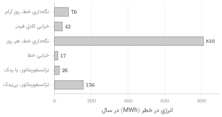
مثال 28.55 (روزِ نگهداری، نه خرابی) پرسش. با خروجِ یک ترانسفورماتورِ اصلی حدِ صادرات چیست؟ کدام پیشامد بیشترین انرژی را در سال به خطر میاندازد و چگونه میشود آن را کم کرد؟
پاسخ. 62 MW. بزرگترین: روزِ نگهداریِ خطِ تکمداره اگر تصادفی باشد (810 MWh)؛ در آرامترین روزِ سال 76 MWh.
تفسیر. با یک ترانسفورماتور، کوپلر بسته میشود و کنترلکننده صادرات را زیرِ ظرفیتِ ترانسفورماتورِ دوم نگه میدارد: یک محدودیتِ بهرهبرداری که مطالعه مینویسد و در دستورالعمل مینشیند. خرابیهای خط همان 17 MWh فصلِ ۱۸اند؛ نگهداریِ برنامهریزیشده از خرابی مهمتر است و برنامهریزیاش در روزِ آرام نُهدهمش را برمیگرداند. ترانسفورماتورِ یدکِ مشترک خطرِ ترانسفورماتور را از 156 به 26 MWh میرساند (همان پرسشِ فصلِ ۱۸). وارسی: \(2 \times 0.01 \times 4{,}380/8{,}760 = 1.0\,\%\).
- عدمِ دسترسیِ دو ترانسفورماتور با 0.01 خرابی در سال و 720 h تعمیر؟
- ارزشِ 810 MWh با 70 واحدِ پول بر مگاواتساعت؟
- چرا نگهداریِ برنامهریزیشده در روزِ آرام انرژیِ در خطر را کم میکند؟
28.8.5 حساسیت به داده و مالکیتِ دادهٔ صادرات
حساسیت. پیش از آنکه برای دقیقتر کردنِ هر داده هزینه شود، مطالعه میسنجد نتیجه چقدر به آن حساس است:
sensitivity of the full-export load flow to its data (Q = 0 at POC)
case V POC V MV-A loss MW d loss %
base (7.06 km, grid max) 1.006 1.020 1.73 +0.0
line impedance +10 % 1.006 1.020 1.77 +2.7
line 7.60 km (sheet error) 1.006 1.020 1.76 +2.1
grid minimum (900 MVA) 1.012 1.026 1.71 -1.2
the line's data move losses by a few per cent and voltages
by a few thousandths: the result is robust to them; the
grid's strength moves the POC voltage more - which is why
the operator's minimum case matters more than the line's
exact length (still corrected before submission)مالکیت. هر شکافِ دادهٔ سامانهٔ صادرات مالکی دارد که آن را میبندد:
export system data: owner and gap (from the input register)
id item owner status
IN-03 network model around the POC operator requested
IN-07 protection settings at the grid end operator requested
IN-14 main transformer test data (FAT) plant missing
IN-17 line measured impedance plant missing
IN-30 outage rates of plant elements plant assumed
the plant owns the line to the POC and must measure its
impedance at commissioning; the operator owns the bay at
the grid substation, its protection and the network model -
each gap has an owner who closes it, and a dateمثال 28.56 (کدام داده ارزشِ دنبال کردن دارد؟) پرسش. خطای طولِ خط (7.60 بهجای 7.06 km) و حالتِ کمینهٔ شبکه هر کدام چه اثری بر تلف و ولتاژِ نقطهٔ اتصال دارند؟
پاسخ. طول: تلف +2.1 % و ولتاژ بیتغییر در سه رقم؛ شبکهٔ کمینه: ولتاژِ نقطهٔ اتصال از 1.006 به 1.012 و تلف −1.2 %.
تفسیر. نتیجه به دادههای خط مقاوم است و به قدرتِ شبکه حساستر؛ پس حالتِ کمینهٔ بهرهبردار (U-103) از طولِ دقیقِ خط مهمتر است، هرچند خطای طول هم پیش از ارسال اصلاح میشود (مثال 28.6). امپدانسِ خط را مالکش، خودِ نیروگاه، در راهاندازی اندازه میگیرد؛ شبکه، بی و حفاظتِ سرِ شبکه از آنِ بهرهبردارند. وارسی: \(7.60/7.06 = 1.076\) و سهمِ خط در تلف حدودِ یکچهارم: \(0.076 \times 0.27 \approx 2\,\%\).
- چرا حساسیت پیش از هزینه برای داده سنجیده میشود؟
- مالکِ تنظیمهای حفاظتِ سرِ شبکه کیست و نیروگاه چگونه آن را میگیرد؟
28.9 ساخت و تولیدِ صنعتی در این فصل
مطالعهٔ شبکه محصولی نمیسازد؛ پیوندش با تولیدِ صنعتی مدل و دادهای است که کارخانه تحویل میدهد. سه پرسش:
- مدلها و منشأشان. مدلهای RMS و EMT هر محصول (توربین، اینورتر، PCS، کنترلکنندهٔ نیروگاه) با نسخهٔ میانافزار، تنظیمها و گزارشِ اعتبارسنجی در برابرِ آزمونِ نوعی (STD-053، STD-132) جزءِ تحویلدادنیِ سازنده است: در قراردادِ خرید (فصلِ ۳۹) نوشته و در ساختِ توربین، مبدل و باتری (فصلهای ۴۲، ۴۴ و ۴۵) تولید میشود (بخش 28.7.3).
- دادهٔ تجهیزات. امپدانس و تلفِ ترانسفورماتورها از آزمونِ کارخانه (فصلِ ۴۳)، پارامترهای کابل از آزمونِ نوعی (فصلِ ۴۶) و امپدانسِ خط از اندازهگیری در راهاندازی (فصلِ ۵۰)؛ تا آن زمان عددهای ضمانتشده با کیفیتِ B و پس از آن با A (بخش 28.5.1).
- پیکربندی در تحویل. نسخهای که کارخانه بارگذاری میکند و نسخهای که در محل کار میکند با هم و با مدل میخوانند؛ هر تغییر پس از مطالعه از کنترلِ تغییر و مدارک (فصلِ ۳۸) و آزمونهای کارخانه (فصلِ ۴۰) میگذرد.
28.10 نیروگاهِ P: سه مثالِ یکپارچه
مثال 28.57 (مقدماتی: دو نتیجهٔ مطالعه با دست) پرسش. افزایشِ ولتاژِ نقطهٔ اتصال با 100 MW و \(Q = 0\)، و جریانِ خطای نقطهٔ اتصال را با دست حساب و با مطالعه مقایسه کنید (شبکهٔ بیشینه، بستهٔ داده 1.1.0، S0).
two study results checked by hand (grid max)
POC voltage rise for 100 MW at Q = 0: (P R + Q X) = 1.0 x 0.00827 = 0.83 %
load flow: POC at 1.0061 pu with the source at 1.0000 (100.3 MW)
POC fault current: 1.1 x 1500 / (1.732 x 132) = 7.22 kA; study 7.21
the hand value is a little higher than the load flow: the
linear formula drops the second-order term (P X)^2 / 2,
which lowers the voltage - close enough to trust bothپاسخ. 0.83 % با دست در برابرِ 0.61 % در پخشِ بار؛ 7.22 در برابرِ 7.21 kA.
تفسیر. فرمولِ خطیِ \(\Delta U \approx P R + Q X\) جملهٔ مرتبهٔ دوم را ندارد که ولتاژ را کمی پایین میآورد؛ اختلاف کوچک و جهتش معلوم است. وارسیِ دستی هر نتیجهٔ مطالعه را پیش از ارسال باورپذیر میکند. وارسی: \(0.0667/\sqrt{65} = 0.00827\).
مثال 28.58 (میانی: برنامهٔ مطالعه بر حسبِ مرحلهٔ پروژه) پرسش. برای هر مرحلهٔ پروژه بگویید کدام مطالعهها انجام میشوند و چند ورودیِ لازمِ آن مرحله اکنون رسیده است.
the study plan by project stage and the inputs each stage needs
stage studies have/need
feasibility B cases and short-circuit screening 5/5
application B, C (RMS) and G with the operator's cases 11/15
detailed design E (EMT), protection settings, PQ (ch 27) 1/8
before energising models checked against FAT and type tests 3/4
commissioning tests, measured line, validated models 1/3
each stage's studies use only what that stage can know;
a later stage reruns them with better data - the input
register shows which stage is ready to startپاسخ. امکانسنجی آماده است (5/5)؛ درخواست 11/15؛ طراحیِ تفصیلی 1/8؛ پیش از برقدار شدن 3/4؛ راهاندازی 1/3.
تفسیر. طراحیِ تفصیلی بیش از همه منتظر است: مدلِ شبکه، تنظیمهای سرِ شبکه، مدلهای EMT و دادهٔ کیفیتِ توان. برنامهٔ مطالعه همین نسبتها را دنبال میکند و درخواستهای داده را با تاریخ پیش میبرد. وارسی: جمعِ ورودیهای هر مرحله از ثبتِ INPUTS شمرده شده است.
مثال 28.59 (یکپارچه: مبنای مطالعهٔ شبکه) پرسش. مبنای مطالعهٔ شبکهٔ نیروگاهِ P را با یافتهها و موردهای باز بنویسید.
grid-study basis of Plant P (D-032):
model: rev C from the POC to aggregated units, grid max and
min (1,500 / 900 MVA), taps holding the 33 kV bus, the
controller holding Q = 0 at the POC unless asked
capability: +46/-63 Mvar at full output (25 C); +33 Mvar is
NOT met on a 45 C day (29 Mvar): battery share (S1), a
capacitor bank or a written limit - an operator decision
losses: the study's curve replaces model 15.1's (4.4 against
3.3 GWh a year) in the next energy model
faults: within 31.5 kA (132 kV) and 25 kA (33 kV); the line
needs a differential scheme or an intertrip at its plant end
dynamics: ride-through with k = 2 above the teaching envelope;
voltage-controller gains studied at minimum strength;
frequency support only by reducing (no headroom in S0)
islanding: passive relays blind ~1,760 h a year - intertrip
weak grid: WSCR 3.5-5.8 with the neighbours - EMT study
models: 5 of 8 need action before submission (versions)
export: the line's rating did not bind in the data year;
the line's planned day is the largest N-1 exposure (810
MWh/yr at random, 76 on a calm day); faults 17 as ch 18
later findings: voltage-stability limit about twice the
plant's size; earthed stars carry ~3 kA of network earth
faults; intertrip within 0.15 s on a supervised channel
(~2 h/yr residual); export set-point 98-99 MW for gusts;
harmonic study on the operator's locus, not one point;
the radial line kept against a tee and 33 kV (recorded)
open: the code and its values (U-102); the operator's
network model, minimum strength and neighbours (U-103)تفسیر. این تصمیمِ D-032 است. یافتههایی که به فصلهای دیگر برمیگردند: منحنیِ تلفِ مطالعه جای فرضِ مدلِ انرژی را میگیرد (فصلهای ۱۵ و ۱۶، مثال 28.13)؛ برآوردِ سادهٔ توانِ واکنشیِ فصلِ ۲۷ خوشبین بود (مثال 28.10)؛ سرِ نیروگاهِ خط به دیفرانسیل یا قطعِ متقابل نیاز دارد (فصلِ ۲۶، مثال 28.15)؛ رتبهٔ خط در سالِ داده محدودکننده نبود و هشدارِ فصلِ ۲۴ با همبستگیِ باد و صادرات کوچک میشود (مثال 28.52). موردهای باز: کد و عددهایش (U-102) و مدلِ شبکه، قدرتِ کمینه و همسایهها (U-103).
28.11 عددهای کلیدیِ مطالعهٔ شبکهٔ نیروگاهِ P
| کمیت | مقدار | مثال |
|---|---|---|
| نقطهٔ اتصال: بیشینه و کمینه | 1,500 و 900 MVA؛ SCRِ ۱۵ و ۹ | مثال 28.2 |
| توانِ واکنشیِ واحدها برای \(Q = 0\) در نقطهٔ اتصال | 14.6 Mvar (حدودِ 12 % رتبه) | مثال 28.10 |
| توانایی در توانِ کامل (25 °C)؛ روزِ 45 °C | +46/−63 Mvar؛ +29 Mvar | مثال 28.45 |
| تلفِ سالانه: مطالعه در برابرِ مدلِ ۱۵٫۱ | 4.41 در برابرِ 3.29 GWh | مثال 28.13 |
| جریانِ خطا در MV-A (بیشینه/کمینه) | 8.54 و 5.48 kA | مثال 28.14 |
| ولتاژِ نقطهٔ اتصال در فرورفت، شبکهٔ ضعیف، \(k = 2\) | 0.34 پریونیت | مثال 28.23 |
| ساعتهای ناحیهٔ کورِ جزیره | 1,760 | مثال 28.26 |
| WSCR با همسایهها | 3.5 تا 5.8 | مثال 28.40 |
| انرژیِ در خطرِ روزِ نگهداریِ خط (تصادفی؛ روزِ آرام) | 810؛ 76 MWh در سال | مثال 28.55 |
28.12 گردشِ کارِ مطالعهٔ اتصال
- داده: نقطهٔ اتصال در دو حالت، ثبتِ ورودیها، وارسیِ بستهٔ داده (بخش 28.2).
- مدل: بازبینیشده، با نسخهها، هر خانواده برای پرسشِ خودش (بخش 28.2.4، بخش 28.7.3).
- ماندگار و خطا: حالتها، توانِ واکنشی، تلف، اتصالِ کوتاه، حفاظت، اعتبارسنجی (بخش 28.3).
- پویا: عبور از خطا، فرکانس، کنترلِ ولتاژ، جزیره، بازگشت و دیسپچ (بخش 28.4).
- شرطی: شبکهٔ ضعیف، جزیره، خدمتها، فقط با الزام یا قرارداد (بخش 28.6، بخش 28.7).
- صادرات: رتبهٔ خط، پیشامدها، حساسیت و مالکیت (بخش 28.8).
- ردیابی: ماتریسِ انطباق، دفترِ فرضها، مرزهای تأیید (بخش 28.5).
28.13 آزمایشگاههای پایتونِ این فصل
| آزمایشگاه | برنامه | آنچه میسازد |
|---|---|---|
| مدل و ثبتها | sources، register | مدلِ مطالعه، حالتها، الزامها، ورودیها، مدلها، تأییدها |
| داده | examples_a | معادلِ تونن، وارسیِ برگهٔ داده، وضعِ ورودیها |
| ماندگار و خطا | examples_b | حالتها، ترازِ توانِ واکنشی، تلف، اتصالِ کوتاه، تغذیهٔ دوسویه، اعتبارسنجی |
| پویا | examples_c | عبور از خطا، فرکانس، کنترلِ ولتاژ، جزیره، بازگشت، مدل در برابرِ رکورد |
| آزمایشگاهِ د | lab_d | فهرستِ ورودی، ماتریسِ انطباق، دفترِ فرضها، تأییدها |
| شرطی | examples_e | قدرتِ شبکه با همسایهها، پرشِ فاز، جریانِ خطای کم، همگامسازی |
| خدمتها | examples_f | پوشِ توانایی، جنگِ کنترلها، نسخهها، ردیابیِ خدمت |
| صادرات | examples_g | رتبهٔ ساعتیِ خط، N-1، حساسیت، مالکیت |
| پایداری و تپها | examples_h | منحنیِ P-V، حساسیتِ شینهها، حدِ تپها |
| زمین، قله، بازبست | examples_k | خطای تکفاز با ستارههای زمینشده، جریانِ قله، بازبستِ خودکار |
| گزینهها، هارمونیک، برنامه | examples_m | گزینههای اتصال، مکانِ امپدانس، مسیرِ بحرانیِ مطالعه |
| پیشبینیِ آزمون | examples_n | نقطههای P-Q، پلهٔ ولتاژ، تزریقِ فرکانس |
| تجمیع، شب، دما | examples_p | رشتهٔ جزئی در برابرِ تجمیع، توانِ واکنشیِ شبانه، دمای خط |
| باتری میانِ خدمتها | examples_q | سهمِ ذخیره و توانِ واکنشی، اولویت در همزمانی |
| حد، دنبالهٔ منفی، محدودیتها | examples_r | حدِ صادرات در تندباد، دنبالهٔ منفی، ثبتِ محدودیتها |
| تغییر، وارسی، رویدادها | examples_s | تغییرِ میانافزار، گاوس–زایدل، رویدادهای بازکننده |
| شیب، رشد، قطعها | examples_t | شیبِ Q(U)، رشدِ سطحِ خطا، قطعهای تنظیمِ نادرست |
| سیگنال، هزینه، گزارش | examples_u | فهرستِ تلهمتری، هزینهٔ کمعمق و عمیق، کاملبودنِ گزارش |
| شکلِ الزام و قطعِ نیروگاه | examples_v | U-Q/Pmax در برابرِ توانایی، نیروگاه بهعنوانِ پیشامد |
| پایانه و شبِ S1 | examples_w | قدرتِ شبکه در پایانهٔ واحدها، شارژِ شبانهٔ باتری |
| کانالِ قطعِ متقابل | examples_x | دسترسپذیریِ کانال، بودجهٔ زمانی |
| نیروگاهِ P | integrated | با دست، برنامه بر حسبِ مرحله، مبنا |
| مثالها و پاسخها | worked | سطرهای E01 و P01 به بعد |
ماژولِ تازهٔ gridstudy با دوازده آزمون در برابرِ حسابِ دستی پایهٔ این برنامههاست؛ تعادلِ حرارتیِ خط از فصلِ ۲۴ و سالِ ساعتیِ تولید از مدلِ ۱۵٫۱ میآید.
28.14 جعبهٔ استاندارد و انطباق
- IEEE Std 2800-2022 (STD-102): اتصال و همکاریِ منبعهای مبدلمحور با سامانهٔ انتقال؛ نمونهای از شکلِ الزامها، نه کدِ این نیروگاه.
- IEC 61400-27-1:2020 (STD-105): مدلهای عمومیِ شبیهسازیِ الکتریکیِ توربین و نیروگاهِ بادی.
- IEC 61400-27-2:2020 (STD-132): اعتبارسنجیِ مدلهای شبیهسازی در برابرِ اندازهگیری.
- IEC 60909-0:2026 (STD-131؛ جانشینِ ویرایشِ ۲۰۱۶): محاسبهٔ جریانهای اتصالِ کوتاه با منبعِ ولتاژِ معادل، با سهمِ واحدهای مبدلدار؛ ضریبهای آن اینجا نقل نشدهاند.
- IEC 61000-4-30:2025 (STD-034): اندازهگیریِ کیفیتِ توان در آزمونها.
- همهٔ الزامها جایگاهدارند (REQ-G01 تا REQ-G24، U-102)؛ کدِ بهرهبردار و قاعدههای کشوری در فصلهای ۵۵ تا ۵۷. (وارسیشده 2026-11-16.)
28.15 تحویلدادنیِ نیروگاهِ P
| سند | محتوا | معیارِ پذیرش |
|---|---|---|
| PLP-ELE-REG-0004 | فهرستِ ورودیِ مطالعه | مالک، وضع، کیفیت و مطالعهٔ هر ورودی |
| PLP-ELE-REG-0005 | ماتریسِ انطباق | الزام، مطالعه، مدل، آزمون، شاهد؛ شکافها با مالک |
| PLP-ELE-CAL-0014 | پخشِ بار، تلف و اتصالِ کوتاه | دو حالتِ شبکه، وارسیِ دستی |
| PLP-ELE-REP-0011 | گزارشِ مطالعهٔ اتصال با دفترِ فرضها | بازبینِ مستقل، مهندسِ دارای صلاحیت، پذیرشِ بهرهبردار |
| PLP-CTL-REG-0002 | ثبتِ مدلها، نسخهها و میانافزار | همخوانیِ مدل و محل |
این فصل اینها را به پروندهٔ نیروگاهِ P میافزاید:
- تصمیمِ D-032: مبنای مطالعهٔ شبکه (مثال 28.59).
- فرضهای A-341 تا A-348: حالتِ کمینهٔ شبکه (A-341)؛ ترانسفورماتورهای واحدِ تجمیعشده (A-342)؛ حالتِ عبور از خطا (A-343)؛ سامانههای رویدادِ فرکانس (A-344)؛ مدلِ آبوهوای خط (A-345)؛ نسبتهای دنبالهٔ صفر (A-346)؛ گزینههای اتصال، مکانِ امپدانس و جریانهای گسیل (A-347)؛ عددهای آموزشیِ درسهای افزوده: حدِ صادرات، دنبالهٔ منفی، تلفِ آمادهباش، سهمِ باتری، سیگنالها و هزینهها (A-348).
- مجهولهای U-102 و U-103: کدِ اتصال و عددهایش؛ مدلِ شبکهٔ بهرهبردار، قدرتِ کمینه و همسایهها.
- یافتهها: تلفِ مدلِ انرژی کم برآورد شده بود؛ توانایی در روزِ گرم کم است؛ سرِ نیروگاهِ خط دیفرانسیل یا قطعِ متقابل میخواهد؛ جزیره و بازبست قطعِ متقابل با کانالِ پایششده میخواهند؛ ستارههای زمینشده در خطای زمینِ شبکه سهم دارند؛ حدِ صادرات با حاشیهٔ تندباد تنظیم میشود؛ پنج مدل پیش از ارسال اقدام میخواهند؛ ثبتِ محدودیتها و بستهٔ تحویلِ مدلها (بخش 28.5.4، بخش 28.7.7).
- کتابخانهٔ همراه: ماژولِ
gridstudyبا آزمونها و برنامههای فصلِ ۲۸.
28.16 جمعبندی
- فرایند و داده: مرحلههای اتصال؛ آنچه هر مطالعه ثابت میکند، دادهاش، تأییدکننده و شاهدِ بستن؛ نقطهٔ اتصال بهصورتِ معادلِ تونن در دو حالت؛ وارسیِ بستهٔ داده؛ مدلهای ماندگار، RMS و EMT با نسخه (بخش 28.2).
- ماندگار و خطا: پخشِ بار با نیوتن–رافسون؛ کنترلکننده و تپچنجر با هم؛ ترازِ توانِ واکنشی و توانایی با حدِ ولتاژِ پایانه؛ تلفِ مطالعه در برابرِ مدلِ انرژی؛ اتصالِ کوتاه با مبدلها بهصورتِ منبعِ جریان؛ تغذیهٔ دوسویه و رلهٔ دیستانس؛ اعتبارسنجی با اسکادا (بخش 28.3).
- پویا: عبور از خطا با جریانِ واکنشی؛ فرکانس در سامانهٔ بزرگ و کوچک؛ قدرتِ شبکه در بهرهٔ حلقهٔ ولتاژ؛ ناحیهٔ کورِ جزیره و قطعِ متقابل؛ بازگشت، شیب، دیسپچ و تأخیرِ تلهمتری؛ مدل در برابرِ رکورد، پنجره به پنجره (بخش 28.4).
- ردیابی: فهرستِ ورودی، ماتریسِ انطباق، دفترِ فرضها، مرزهای تأیید (بخش 28.5).
- شرطی: WSCR با همسایهها، سازنده در برابرِ پیروِ شبکه، حفاظت با جریانِ خطای کم، همگامسازی و راهاندازیِ سیاه، فقط با الزام یا قرارداد (بخش 28.6)؛ پوشِ توانایی، جنگِ کنترلها، نسخهها و زنجیرهٔ خدمت (بخش 28.7).
- صادرات: رتبهٔ ساعتیِ خط، پیشامدهای N-1 و انرژیِ در خطر، حساسیت و مالکیتِ داده (بخش 28.8).
28.16.1 واژگانِ فصلِ ۲۸
| فارسی | انگلیسی | یادداشت |
|---|---|---|
| مطالعهٔ اتصال | interconnection study | |
| نقطهٔ اتصال | point of connection | POC |
| معادلِ تونن | Thevenin equivalent | |
| سطحِ اتصالِ کوتاه | short-circuit level | |
| پخشِ بار | load flow | |
| ماتریسِ ادمیتانسِ شینه | bus admittance matrix | |
| نیوتن–رافسون | Newton-Raphson | |
| شینهٔ مرجع | slack bus | |
| تپچنجرِ زیرِ بار | on-load tap changer | OLTC |
| پوشِ توانایی | capability envelope | |
| منبعِ ولتاژِ معادل | equivalent voltage source | |
| منبعِ جریان | current source | |
| امپدانسِ ظاهری | apparent impedance | |
| تغذیهٔ دوسویه | infeed | |
| قطعِ متقابل | intertrip | |
| عبور از خطا | fault ride-through | FRT |
| معادلهٔ نوسان | swing equation | |
| نرخِ تغییرِ فرکانس | rate of change of frequency | RoCoF |
| جای بالارو | headroom | |
| جزیرهشدن | islanding | |
| ناحیهٔ کور | non-detection zone | NDZ |
| مدلِ RMS | RMS (phasor) model | |
| مدلِ EMT | electromagnetic transient model | |
| میانافزار | firmware | |
| ماتریسِ انطباق | compliance matrix | |
| فهرستِ ورودیِ مطالعه | study input checklist | |
| دفترِ فرضها | assumption log | |
| نسبتِ اتصالِ کوتاهِ وزنی | weighted short-circuit ratio | WSCR |
| سازندهٔ شبکه | grid-forming | |
| پیروِ شبکه | grid-following | |
| راهاندازیِ سیاه | black start | |
| همگامسازیِ دوباره | resynchronisation | |
| لغزش | slip | |
| پیشامدِ N-1 | N-1 contingency | |
| انرژیِ در خطر | energy at risk | |
| رتبهٔ وابسته به آبوهوا | weather-dependent rating |
28.17 ارزیابیِ پلکانی
معیارِ تسلطِ این فصل: خواننده میتواند برای هر مطالعه بگوید چه ثابت میکند، چه دادهای میخواهد، چه کسی آن را تأیید میکند و چه شاهدی الزام را میبندد. پاسخها در بخش 28.18 آمدهاند.
28.17.1 پلهٔ ۱: مبانی
تمرین 28.1 مرحلههای عمومیِ اتصال را از پرسوجو تا اعلامِ بهرهبرداری نام ببرید.
تمرین 28.2 برای پخشِ بار بگویید چه ثابت میکند، چه دادهای میخواهد، چه کسی تأیید میکند و چه شاهدی الزام را میبندد.
تمرین 28.3 همان چهار پرسش را برای مطالعهٔ عبور از خطا پاسخ دهید.
تمرین 28.4 معادلهٔ 28.1 را توضیح دهید.
تمرین 28.5 چرا نقطهٔ اتصال در دو حالتِ بیشینه و کمینه مطالعه میشود؟
تمرین 28.6 سه خانوادهٔ مدل و پرسشِ هر کدام را بگویید.
تمرین 28.7 چرا مدلِ واحد به نسخهٔ میانافزار بسته است؟
تمرین 28.8 سه خطای رایجِ برگهٔ داده که وارسیِ خودکار میگیرد نام ببرید.
تمرین 28.9 معادلهٔ 28.2 را توضیح دهید و بگویید چرا ناخطی است.
تمرین 28.10 شینهٔ مرجع، شینهٔ PQ و شینهٔ PV چه فرقی دارند؟
تمرین 28.11 کنترلکنندهٔ نیروگاه و تپچنجر در یک حالتِ پخشِ بار هر کدام چه کاری میکنند؟
تمرین 28.12 توانایی در نقطهٔ اتصال را تعریف کنید.
تمرین 28.13 چرا مبدل در مطالعهٔ اتصالِ کوتاه منبعِ جریان است؟
تمرین 28.14 چرا در حالتِ کمینه سهمِ مبدلها کنار گذاشته میشود؟
تمرین 28.15 معادلهٔ 28.3 را توضیح دهید.
تمرین 28.16 قطعِ متقابل چیست و چرا خطِ نیروگاه به آن نیاز دارد؟
تمرین 28.17 سه خواستِ الزامِ عبور از خطا را نام ببرید.
تمرین 28.18 معادلهٔ 28.5 را توضیح دهید.
تمرین 28.19 چرا نیروگاهِ S0 در توانِ کامل فقط به فرکانسِ زیاد پاسخ میدهد؟
تمرین 28.20 چرا قدرتِ شبکه جزءِ بهرهٔ حلقهٔ ولتاژ است؟
تمرین 28.21 ناحیهٔ کور (معادلهٔ 28.6) را توضیح دهید.
تمرین 28.22 سه پنجرهٔ اعتبارسنجیِ مدلِ پویا را نام ببرید.
تمرین 28.23 ماتریسِ انطباق چه سه کاری میکند؟
تمرین 28.24 دفترِ فرضها چیست و چه زمانی یک فرض بسته میشود؟
تمرین 28.25 معادلهٔ 28.8 را توضیح دهید.
تمرین 28.26 سازنده و پیروِ شبکه چه فرقی دارند؟
تمرین 28.27 چرا حفاظتِ وصل به شبکه در جزیرهٔ مبدلمحور کار نمیکند؟
تمرین 28.28 پوشِ توانایی در نقطهٔ اتصال چیست؟
تمرین 28.29 قاعدهٔ «یک انتگرالگیر برای هر کمیت» را توضیح دهید.
تمرین 28.30 هفت حلقهٔ زنجیرهٔ یک خدمت را نام ببرید.
تمرین 28.31 پیشامدِ N-1 و انرژیِ در خطر را تعریف کنید.
تمرین 28.32 دماغهٔ منحنیِ P-V چه چیزی را نشان میدهد؟
تمرین 28.33 چرا ستارهٔ زمینشدهٔ ترانسفورماتور منبعِ دنبالهٔ صفر است؟
تمرین 28.34 مکانِ امپدانسِ هارمونیکیِ شبکه چیست؟
تمرین 28.35 چرا نیروگاه باید پیش از بازبستِ خط جدا شده باشد؟
تمرین 28.36 چرا مقدارِ مورد انتظار و بازهٔ پذیرشِ آزمون پیش از آزمون نوشته میشوند؟
تمرین 28.37 طولِ معادلِ یک فیدر برای تلف از چه میآید؟
تمرین 28.38 چرا کنترلکنندهای که روی خودِ حد تنظیم شده در تندباد از آن میگذرد؟
تمرین 28.39 سه رویداد نام ببرید که مطالعه را دوباره باز میکنند.
تمرین 28.40 وارسیِ با روشِ دوم چه خطایی را رد میکند و چه خطایی را نه؟
تمرین 28.41 مشخصهٔ Q(U) و شیبِ آن را توضیح دهید.
تمرین 28.42 هزینهٔ اتصالِ کمعمق و عمیق چه فرقی دارند؟
تمرین 28.43 نمودارِ U-Q/Pmax چه میگوید؟
تمرین 28.44 هفت قلمِ بستهٔ تحویلِ مدلها را نام ببرید.
28.17.2 پلهٔ ۲: تحلیل
تمرین 28.45 امپدانسِ پریونیتِ 1,200 MVA با \(X/R = 10\) بر پایهٔ 100 MVA؟
تمرین 28.46 جریانِ خطای 132 kV برای 1,200 MVA، با و بی \(c = 1.1\)؟
تمرین 28.47 SCRِ نیروگاهِ 120 MW روی 900 MVA؟
تمرین 28.48 افزایشِ ولتاژ با 60 MW و \(Q = 0\) روی 900 MVA با \(X/R = 6\)؟
تمرین 28.49 توانِ واکنشیای که آن افزایش را خنثی میکند؟
تمرین 28.50 ESCR با 20 Mvar خازن روی 900 MVA برای 100 MW؟
تمرین 28.51 WSCRِ دو نیروگاهِ 100 MW روی 1,500 و 1,000 MVA؟
تمرین 28.52 ناحیهٔ کورِ \(\Delta P/P\) با پنجرهٔ 0.90 تا 1.10 پریونیت؟
تمرین 28.53 ناحیهٔ \(\Delta Q/P\) برای 49.5 تا 50.5 Hz و \(Q_\text{f} = 2\)؟
تمرین 28.54 جریانِ افزودهٔ سازندهٔ شبکه با پرشِ 15 درجه و \(x = 0.2\)؟
تمرین 28.55 ضربهٔ توان در بستن با 8 درجه از راهِ 0.25 پریونیت؟
تمرین 28.56 پنجرهٔ ±10 درجه با لغزشِ 0.15 Hz؟
تمرین 28.57 نرخِ تغییرِ آغازینِ فرکانس با ازدسترفتنِ 300 MW از 5,000 MW و \(H = 5\)؟
تمرین 28.58 انحرافِ ماندگار با ۲۰ درصدِ سامانه روی افتِ ۵ درصد و \(D = 1\) (همان رویداد)؟
تمرین 28.59 مقاومتِ ظاهری با خطای 2 اهم و نسبتِ تغذیهٔ ۱۰؟
تمرین 28.60 جریانِ 80 MW در 132 kV با ضریبِ توانِ یک؟
تمرین 28.61 تلفِ بار در 80 % توان نسبت به توانِ کامل؟
تمرین 28.62 تلفِ بیباریِ 199 kW در یک سال؟
تمرین 28.63 عدمِ دسترسیِ دو ترانسفورماتور با 0.01 خرابی در سال و 720 h تعمیر؟
تمرین 28.64 ارزشِ 810 MWh با 70 واحدِ پول بر مگاواتساعت؟
تمرین 28.65 تأخیرِ کلِ تلهمتری با پویشِ 0.5 s (بقیه مانندِ بخش 28.4.5)؟
تمرین 28.66 زمانِ پلهٔ 30 MW با شیبِ 10 MW در دقیقه؟
تمرین 28.67 انرژیِ ازدسترفته در بازگشت از 50 MW با 60 s انتظار و 10 % در دقیقه؟
تمرین 28.68 بهرهٔ مؤثرِ حلقهٔ ولتاژ برای 1,500 روی 300 و روی 1,500 MVA؟
تمرین 28.69 جریانِ واکنشیِ خواسته با \(k = 2\) در 0.6 پریونیت؟
تمرین 28.70 ولتاژ در فرورفتِ 0.5 با \(k = 2\) و \(x = 0.1\) (معادلهٔ 27.11)؟
تمرین 28.71 ولتاژِ بارِ دو شینه با \(x = 0.2\) و \(P = 1\)؟
تمرین 28.72 امپدانسِ 12 % روی 63 MVA بر پایهٔ 100 MVA؟
تمرین 28.73 تپِ +7.5 % چند پلهٔ 1.25 % است؟
تمرین 28.74 سهمِ مبدلها در جریانِ خطای MV-A؟
تمرین 28.75 حساسیتِ ولتاژ به 10 Mvar در 1,500 و 900 MVA؟
تمرین 28.76 جریانِ خطای تابلوی 400 V از ترانسفورماتورِ 250 kVA با 6 %؟
تمرین 28.77 حدِ کلیدِ نوعِ C برای قطعِ لحظهای با 433 A جریانِ جزیره؟
تمرین 28.78 اختلافِ تلفِ سالانهٔ مطالعه و مدلِ ۱۵٫۱ به درصدِ انرژیِ 301 GWh؟
تمرین 28.79 رتبهٔ لازم برای صادراتِ 100 MW در 132 kV؟
تمرین 28.80 \(\kappa\) برای \(X/R = 10\)؟
تمرین 28.81 جریانِ قله با 7.79 kA و \(\kappa = 1.69\)؟
تمرین 28.82 زاویه پس از 0.3 s با رانشِ فرکانسِ 2 Hz/s؟
تمرین 28.83 تلفِ سه مدارِ 33 kV در 100 MW (\(0.06\,\Omega/\text{km}\)، 12 km)؟
تمرین 28.84 حساسیتِ ولتاژِ نقطهٔ اتصال به 10 Mvar با 1,500 MVA؟
تمرین 28.85 مدتِ برنامه اگر مدلِ شبکه یک ماه زودتر برسد؟
تمرین 28.86 تغییرِ توان در 50.4 Hz با افتِ 5 % روی 100 MW و ناحیهٔ مردهٔ 0.2 Hz؟
تمرین 28.87 طولِ معادلِ تلف برای سه توربینِ همفاصله با دهانهٔ 1 km؟
تمرین 28.88 تلفِ خط در 20 °C و 75 °C در صادراتِ کامل؟
تمرین 28.89 توانِ واکنشیِ باقیِ باتری با دیسپچِ 8 MW و ذخیرهٔ 4 MW؟
تمرین 28.90 تلفِ آمادهباشِ 367 kW در 710 ساعت؟
تمرین 28.91 ولتاژِ دنبالهٔ منفی با \(k_2 = 3\) و \(x = 0.08\) (0.30 از شبکه)؟
تمرین 28.92 جریانِ واکنشیِ خواسته با \(k = 2.5\) در 0.63 پریونیت؟
تمرین 28.93 WSCR با نیروگاهِ چهارمِ 50 MW روی 1,500 MVA؟
تمرین 28.94 ولتاژ و توانِ واکنشی با شیبِ ۴ درصد و منبعِ 1.05 روی 900 MVA؟
تمرین 28.95 سطحِ اتصالِ کوتاه پس از ده سال با رشدِ 3 % از 1,500 MVA؟
تمرین 28.96 ضریبِ سالواره برای 7.5 % و ۲۵ سال؟
تمرین 28.97 حجمِ روزانهٔ 532 مقدار در ثانیه با هشت بایت؟
تمرین 28.98 نرخِ تغییرِ آغازین با قطعِ 100 MW از 5,000 MW و \(H = 4\)؟
تمرین 28.99 الزامِ دادن در ولتاژِ 1.08 پریونیت با شکلِ آموزشی؟
تمرین 28.100 نسبتِ سطحِ اتصالِ کوتاه به توان در نیمشینهٔ MV-A با 364 MVA و 65 MW؟
تمرین 28.101 ساعتهای بیکانال در سال با دسترسپذیریِ 99.99 %؟
تمرین 28.102 حاشیه تا بازبستِ 300 ms اگر کلیدِ نیروگاه 80 ms طول بکشد؟
28.17.3 پلهٔ ۳: کاربرد
تمرین 28.103 بهرهبردار فقط \(S_\text{sc}\) بیشینه را داده است. چه میخواهید و چرا؟
تمرین 28.104 سازنده پس از مطالعه میانافزارِ اینورتر را عوض کرده است. چه میکنید؟
تمرین 28.105 پخشِ بار در یک حالت همگرا نمیشود. سه علتِ ممکن و سه وارسی بگویید.
تمرین 28.106 عکسِ اسکادا با مدل در ولتاژِ 33 kV 2.5 % فرق دارد. پیش از اصلاحِ مدل چه میکنید؟
تمرین 28.107 الزامِ توانِ واکنشی در روزِ 45 °C برآورده نیست. سه گزینه با پیامدِ هر کدام بدهید.
تمرین 28.108 رلهٔ دیستانسِ سرِ نیروگاه خطاهای مقاومتی را نمیبیند. چه پیشنهاد میکنید؟
تمرین 28.109 کنترلکنندهٔ ولتاژ روی شبکهٔ ضعیف نوسان میکند. چه میکنید؟
تمرین 28.110 بهرهبردار پاسخِ فرکانسِ کم میخواهد. پیش از پذیرفتن چه میپرسید؟
تمرین 28.111 دو الزامِ شیب و دنبال کردنِ نقطهٔ تنظیم ناسازگارند. چه میکنید؟
تمرین 28.112 نیروگاهِ دیگری در همسایگی اعلام شده است. کدام مطالعهها تغییر میکنند؟
تمرین 28.113 بهرهبردار میپرسد چرا رلههای فرکانس برای جزیره کافی نیستند.
تمرین 28.114 کنترلکنندهٔ نیروگاه و کنترلِ محلیِ واحدها با هم میجنگند. چه وارسی و چه اصلاحی؟
تمرین 28.115 مدلِ پویا میانگینِ خطای خوب ولی بیشینهٔ بد دارد. چه میکنید؟
تمرین 28.116 یک خروجِ ترانسفورماتورِ اصلی پیش میآید. دستورالعملِ بهرهبرداری چه میگوید؟
تمرین 28.117 برگهٔ داده طولِ خط را 7.60 km میگوید و نقشه 7.06. اهمیتش برای نتیجه چیست؟
تمرین 28.118 بهرهبردار رتبهٔ ثابتِ خط را برای ساعتهای گرم کم میداند. چه شاهدی میآورید؟
تمرین 28.119 یک الزام نه آزمون دارد نه شاهد. چه میکنید؟
تمرین 28.120 فرضِ قدرتِ کمینه تغییر کرده است. کدام نتیجهها را دوباره اجرا میکنید؟
تمرین 28.121 بهرهبردار برای مطالعهٔ هارمونیک فقط یک امپدانس داده است. چه میخواهید؟
تمرین 28.122 گزینهٔ انشعاب ارزانتر است. استدلالِ ماندن روی خطِ شعاعی را بنویسید.
تمرین 28.123 ستارههای زمینشدهٔ نیروگاه رلههای زمینِ بهرهبردار را تغییر میدهند. چه دادهای میفرستید؟
تمرین 28.124 آزمونِ توانایی 44 Mvar نشان داد در حالی که مدل 50.8 میگفت. چه میکنید؟
تمرین 28.125 قرارداد هم ذخیرهٔ فرکانس میخواهد هم توانِ واکنشی از باتری. چه میپرسید؟
تمرین 28.126 بهرهبردار گذرِ کوتاه از حدِ صادرات را نمیپذیرد. چه پیشنهاد میکنید؟
تمرین 28.127 سازنده بهرهٔ جریانِ واکنشی را عوض کرده است. کدام ردیفها را باز میکنید؟
تمرین 28.128 یک رلهٔ کمولتاژی روی 0.8 پریونیت و 0.2 s پیدا کردهاید. چه میکنید؟
تمرین 28.129 بهرهبردار شیبِ ۲ درصد میخواهد. چه نگرانیای را مطرح میکنید؟
تمرین 28.130 بهرهبردار میگوید قطعِ نیروگاهِ شما از بزرگترین پیشامدِ برنامهریزیشده بزرگتر است. چه گزینههایی دارید؟
تمرین 28.131 سازندهٔ اینورتر قدرتِ شبکه را برای تنظیمِ کنترل میخواهد. چه عددی میدهید؟
28.17.4 پلهٔ ۴: طراحی و راستیآزمایی
تمرین 28.132 فهرستِ ورودیِ مطالعه را برای یک نقطهٔ اتصالِ تازه طراحی کنید.
تمرین 28.133 ماتریسِ انطباقی با ده الزام بسازید و شکافها را نشان دهید.
تمرین 28.134 دامنهٔ مطالعهٔ اتصال را برای مرحلهٔ درخواست بنویسید.
تمرین 28.135 حالتهای پخشِ بار را برای یک نیروگاهِ هیبریدِ دیگر برگزینید.
تمرین 28.136 طرحِ اعتبارسنجیِ مدلِ پویا با رکوردهای راهاندازی بنویسید.
تمرین 28.137 الزامِ توانِ واکنشی را با دما و سهمِ باتری بازنویسی کنید.
تمرین 28.138 طرحِ حفاظتِ خطِ صادرات را با تغذیهٔ نابرابر پیشنهاد کنید.
تمرین 28.139 ثبتِ مدلها و نسخهها را با قاعدهٔ کنترلِ تغییر طراحی کنید.
تمرین 28.140 تحلیلِ پیشامدِ N-1 را با انرژیِ در خطر برای خطِ دوم بنویسید.
تمرین 28.141 جدولِ مرزهای تأیید را برای یک پروژهٔ مشارکتی (دو مالک) بنویسید.
تمرین 28.142 مطالعهٔ شبکهٔ ضعیف را برای سه نیروگاهِ همسایه دامنهبندی کنید.
تمرین 28.143 برنامهٔ مطالعه را با مسیرِ بحرانی و تاریخِ سفارشِ مدلها بنویسید.
تمرین 28.144 برنامهٔ آزمونهای انطباق را با مقدارِ مورد انتظار و بازهٔ هر نقطه بنویسید.
تمرین 28.145 ثبتِ محدودیتهای بهرهبرداری را با شرط، محدودیت، منبع و کسی که عمل میکند طراحی کنید.
تمرین 28.146 فهرستِ کاملبودنِ گزارشِ مطالعه را برای پروژهٔ خودتان بنویسید.
تمرین 28.147 بستهٔ تحویلِ مدلهای نیروگاهِ P را با قالب و شاهدِ هر قلم بنویسید.
28.17.5 پلهٔ ۵: تسلط
تمرین 28.148 یک گزارشِ مطالعهٔ اتصال را با معیارِ تسلطِ این فصل نقد کنید.
تمرین 28.149 از نیروگاهِ P خواسته شده سازندهٔ شبکه باشد. برنامهٔ مطالعه و شاهد را بنویسید.
تمرین 28.150 بستهٔ ارسالیِ کاملِ نیروگاهِ P را فهرست کنید.
تمرین 28.151 نشان دهید چگونه یافتههای این فصل به فصلهای ۱۵، ۲۴، ۲۶ و ۲۷ برمیگردند.
تمرین 28.152 برای اعلامِ بهرهبرداری، کدام الزامها هنوز باز میمانند و چه کسی آنها را میبندد؟
تمرین 28.153 مبنای مطالعهٔ شبکه (D-032) را برای سناریوی S1 بهروز کنید.
28.18 پاسخنامه و راهحلها
پاسخهای عددی را برنامهٔ worked میسازد (سطرهای E01 و P01 به بعد در بخش 28.18.1). برای مسئلههای طراحی و تسلط، معیارهای پاسخ آمدهاند.
حل. تمرین 28.1. شکل 28.1.
حل. تمرین 28.2. جدول 28.1.
حل. تمرین 28.3. جدول 28.1: رفتار در فرورفت؛ مدلهای RMS و EMT؛ بهرهبردار؛ آزمونِ نوعی و مدلِ اعتبارسنجیشده.
حل. تمرین 28.4. بخش 28.2.2.
حل. تمرین 28.5. مثال 28.2.
حل. تمرین 28.6. بخش 28.2.4.
حل. تمرین 28.7. بخش 28.2.4.
حل. تمرین 28.8. مثال 28.6.
حل. تمرین 28.9. بخش 28.3.1.
حل. تمرین 28.10. بخش 28.3.1.
حل. تمرین 28.11. مثال 28.9.
حل. تمرین 28.12. بخش 28.3.3.
حل. تمرین 28.13. بخش 28.3.6.
حل. تمرین 28.14. مثال 28.14.
حل. تمرین 28.15. بخش 28.3.7.
حل. تمرین 28.16. مثال 28.15.
حل. تمرین 28.17. بخش 28.4.1.
حل. تمرین 28.18. بخش 28.4.2.
حل. تمرین 28.19. مثال 28.24.
حل. تمرین 28.20. بخش 28.4.3.
حل. تمرین 28.21. بخش 28.4.4.
حل. تمرین 28.22. بخش 28.4.6.
حل. تمرین 28.23. مثال 28.36.
حل. تمرین 28.24. بخش 28.5.3.
حل. تمرین 28.25. بخش 28.6.1.
حل. تمرین 28.26. بخش 28.6.2.
حل. تمرین 28.27. مثال 28.42.
حل. تمرین 28.28. بخش 28.7.1.
حل. تمرین 28.29. مثال 28.46.
حل. تمرین 28.30. بخش 28.7.3.
حل. تمرین 28.31. بخش 28.8.4.
حل. تمرین 28.32. حدِ پایداریِ ولتاژِ اتصال (مثال 28.11).
حل. تمرین 28.33. مثال 28.16.
حل. تمرین 28.34. بخش 28.3.10.
حل. تمرین 28.35. مثال 28.17.
حل. تمرین 28.36. بخش 28.4.7.
حل. تمرین 28.37. مثال 28.5.
حل. تمرین 28.38. مثال 28.30: اندازهگیریِ کهنه و تأخیرِ واحدها.
حل. تمرین 28.39. بخش 28.5.4.
حل. تمرین 28.40. مثال 28.21.
حل. تمرین 28.41. بخش 28.4.9.
حل. تمرین 28.42. بخش 28.8.3 (مفهومِ تجاری، نه مشورتِ حقوقی).
حل. تمرین 28.43. بخش 28.7.6.
حل. تمرین 28.44. جدول 28.2.
حل. تمرین 28.45. \(|z| = 0.0833\)، \(R = 0.00829\)، \(X = 0.0829\).
حل. تمرین 28.46. 5.25 و 5.77 kA.
حل. تمرین 28.47. 7.5.
حل. تمرین 28.48. \(0.6 \times 0.01827 = 1.10\,\%\).
حل. تمرین 28.49. \(-P/(X/R) = -10\,\text{Mvar}\).
حل. تمرین 28.50. 8.8.
حل. تمرین 28.51. 6.25.
حل. تمرین 28.52. −0.174 تا +0.235.
حل. تمرین 28.53. −0.0406 تا +0.0394.
حل. تمرین 28.54. 1.305 پریونیت.
حل. تمرین 28.55. 0.557 پریونیت.
حل. تمرین 28.56. 0.37 s.
حل. تمرین 28.57. −0.30 Hz/s.
حل. تمرین 28.58. −0.60 Hz.
حل. تمرین 28.59. 22 اهم بهاضافهٔ مقاومتِ خط.
حل. تمرین 28.60. 350 A.
حل. تمرین 28.61. 0.64.
حل. تمرین 28.62. 1.74 GWh.
حل. تمرین 28.63. 0.16 %.
حل. تمرین 28.64. 57 هزار واحدِ پول.
حل. تمرین 28.65. 1.5 s.
حل. تمرین 28.66. ۳ دقیقه.
حل. تمرین 28.67. 2.9 MWh.
حل. تمرین 28.68. ۵ و ۱ بر ثانیه.
حل. تمرین 28.69. 0.8 پریونیت.
حل. تمرین 28.70. 0.583 پریونیت.
حل. تمرین 28.71. \(v^4 - v^2 + 0.04 = 0\)؛ \(v = 0.979\).
حل. تمرین 28.72. 0.190 پریونیت.
حل. تمرین 28.73. ۶ پله.
حل. تمرین 28.74. \(1.53/8.54 = 18\,\%\).
حل. تمرین 28.75. 0.67 و 1.11 %.
حل. تمرین 28.76. \(250/0.06/(\sqrt{3} \times 0.4) = 6.0\,\text{kA}\).
حل. تمرین 28.77. تا 43 A نامی.
حل. تمرین 28.78. \(1.12/301 = 0.37\,\%\).
حل. تمرین 28.79. 437 A.
حل. تمرین 28.80. \(1.02 + 0.98\,e^{-0.3} = 1.75\).
حل. تمرین 28.81. \(1.69 \times 1.414 \times 7.79 = 18.6\,\text{kA}\).
حل. تمرین 28.82. \(360 \times 0.5 \times 2 \times 0.09 = 32\) درجه.
حل. تمرین 28.83. 2.20 MW.
حل. تمرین 28.84. 0.67 %.
حل. تمرین 28.85. مسیرِ بحرانی 11.5 ماه، ولی مدلهای EMT (شناوریِ 2.5) حالا 1.5 شناوری دارند.
حل. تمرین 28.86. \(-0.2/(0.05 \times 50) \times 100 = -8\,\text{MW}\).
حل. تمرین 28.87. \((9 + 4 + 1)/9 \times 1 = 1.56\,\text{km}\)، حدودِ نیمِ 3 km.
حل. تمرین 28.88. 0.404 و 0.494 MW.
حل. تمرین 28.89. \(\sqrt{400 - 144} = 16\,\text{Mvar}\).
حل. تمرین 28.90. 260 MWh.
حل. تمرین 28.91. \(0.30/1.24 = 0.242\).
حل. تمرین 28.92. 0.93 پریونیت.
حل. تمرین 28.93. 4.9.
حل. تمرین 28.94. 1.022 و −25.2 Mvar.
حل. تمرین 28.95. \(1500 \times 1.03^{10} = 2{,}016\,\text{MVA}\).
حل. تمرین 28.96. 11.15.
حل. تمرین 28.97. حدودِ 0.37 GB.
حل. تمرین 28.98. −0.125 Hz/s.
حل. تمرین 28.99. 0.066 از \(P_\text{max}\).
حل. تمرین 28.100. 5.6.
حل. تمرین 28.101. 0.9 ساعت.
حل. تمرین 28.102. \(300 - (30 + 50 + 20 + 80) = 120\,\text{ms}\).
حل. تمرین 28.103. معیار: حالتِ کمینه با خروجهایش، X/R هر دو، بازهٔ ولتاژ؛ کاربردِ کمینه در حفاظت و کنترل (مثال 28.2).
حل. تمرین 28.104. معیار: اعلامِ اعتبارِ مدل یا مدلِ تازه، آزمونِ نوعیِ مرتبط، ثبتِ نسخه، اجرای دوباره (مثال 28.47).
حل. تمرین 28.105. معیار: حالتِ ناشدنی (فروپاشی)، دادهٔ غلط (پایه، یکا)، شینهٔ بیبرق؛ وارسیِ برگه، بارِ کمتر، اتصال (بخش 28.3.1).
حل. تمرین 28.106. معیار: تپِ ثبتشده، مبدلِ اندازهگیری، زمانِ عکس؛ الگوی اختلاف (مثال 28.18).
حل. تمرین 28.107. معیار: سهمِ باتری، بانکِ خازنی با خطرِ تشدید، محدودیتِ نوشتهشده (مثال 28.45).
حل. تمرین 28.108. معیار: دیفرانسیلِ خط، قطعِ متقابل، کمولتاژی، هماهنگی با بهرهبردار (مثال 28.15).
حل. تمرین 28.109. معیار: بهرهٔ مؤثر، تأخیرها، بازتنظیم یا زمانبندی با قدرتِ شبکه، مطالعه در کمینه (مثال 28.25).
حل. تمرین 28.110. معیار: جای بالارو (کاهشِ تولید یا باتری)، هزینهٔ انرژی، قرارداد، مدلِ باتری، آزمون (مثال 28.24، بخش 28.7.3).
حل. تمرین 28.111. معیار: نشان دادنِ تعارض با عدد پیش از آزمون، پیشنهادِ استثنا یا تغییر، ثبت در ماتریس (مثال 28.27).
حل. تمرین 28.112. معیار: WSCR، EMT با هر دو، اتصالِ کوتاه، کیفیتِ توان، فرضهای دفتر (مثال 28.40).
حل. تمرین 28.113. معیار: ناحیهٔ کور با ساعتهای سال، توازنِ واکنشی، قطعِ متقابل (مثال 28.26).
حل. تمرین 28.114. معیار: حالتها، انتگرالگیرهای همزمان، پیروی یا افت در واحدها (مثال 28.46).
حل. تمرین 28.115. معیار: پنجرهٔ خطا، علتِ فیزیکی، پارامترِ سازنده، اجرای دوباره؛ نه حذفِ معیار (مثال 28.28).
حل. تمرین 28.116. معیار: بستنِ کوپلر، حدِ صادرات، هشدار و کاهش، مدت (مثال 28.55).
حل. تمرین 28.117. معیار: حساسیت (تلف دو درصد)، اصلاح پیش از ارسال، اندازهگیری در راهاندازی (مثال 28.56).
حل. تمرین 28.118. معیار: رتبهٔ ساعتی با آبوهوا، جهتِ خط، همبستگیِ باد و صادرات، حدِ پشتیبان (مثال 28.52).
حل. تمرین 28.119. معیار: بیرون بردن از دامنه یا تعریفِ حلقهها، مالک، تاریخ (مثال 28.36).
حل. تمرین 28.120. معیار: ستونِ اثرِ دفترِ فرضها (مثال 28.37).
حل. تمرین 28.121. معیار: مکان برای هر مرتبه، حالتهای شبکه، بدترین نقطه، تخصیص (مثال 28.19).
حل. تمرین 28.122. معیار: انرژیِ در خطر، حفاظتِ سهسر، قدرتِ شبکه، هزینه، ثبتِ دلیل (مثال 28.53).
حل. تمرین 28.123. معیار: امپدانسهای دنبالهٔ صفر، گروهِ برداری، زمینکردن، جریانِ نول (مثال 28.16).
حل. تمرین 28.124. معیار: دو داوریِ جدا (الزام و مدل)، وارسیِ شرایطِ آزمون، اصلاحِ مدل و اعتبارسنجیِ دوباره (مثال 28.29).
حل. تمرین 28.125. معیار: سهمها، اولویت در همزمانی، حدِ جریان، بهای هر کدام (مثال 28.48).
حل. تمرین 28.126. معیار: حاشیهٔ تنظیم با بهای انرژی، اندازهگیریِ تازهتر، شیببندیِ واحدها (مثال 28.30).
حل. تمرین 28.127. معیار: G04 تا G07 با دلیل، اعلامِ سازنده، اجرای دوباره، ثبتِ نسخه (مثال 28.49).
حل. تمرین 28.128. معیار: مقایسه با پوشِ عبور از خطا، قطعهای سالانه و انرژی، اصلاح در پروندهٔ تنظیم، آزمون (مثال 28.22).
حل. تمرین 28.129. معیار: خرجِ کلِ توانایی، رویدادِ بعدی، پایداریِ حلقه در کمینه (مثال 28.32).
حل. تمرین 28.130. معیار: محدودیتِ صادرات، جدا شدنِ پلهای، ذخیرهٔ سامانه، هزینهٔ هر کدام (مثال 28.34).
حل. تمرین 28.131. معیار: سطحِ اتصالِ کوتاه در پایانهٔ واحد در کمینه، با همسایهها، نه فقط نقطهٔ اتصال (مثال 28.44).
حل. تمرین 28.132. معیار: شناسه، قلم، مالک، وضع، کیفیت، مطالعهها، تاریخ (بخش 28.5.1).
حل. تمرین 28.133. معیار: الزام، مطالعه، مدل، آزمون، شاهد، ورودیهای باز، مالک (بخش 28.5.2).
حل. تمرین 28.134. معیار: حالتها، مطالعهها، مدلها، ورودیها، فرضها، تأیید (مثال 28.58).
حل. تمرین 28.135. معیار: شبکهٔ بیشینه و کمینه، لبههای ولتاژ، توانِ کامل و صفر، با و بی ذخیرهساز، خروجها (بخش 28.3.2).
حل. تمرین 28.136. معیار: رویدادها، پنجرهها، اندازههای خطا، حدها پیش از مقایسه، نسخهها، تأیید (بخش 28.4.6).
حل. تمرین 28.137. معیار: بازهٔ توانِ فعال، ولتاژ، دما، سهمها، شاهد (مثال 28.45).
حل. تمرین 28.138. معیار: دیفرانسیل، قطعِ متقابل، پشتیبان، کانالِ ارتباط، آزمونِ سرتاسری (مثال 28.15).
حل. تمرین 28.139. معیار: مدل، نسخه، میانافزار، چکیدهٔ تنظیم، مالک، شاهدِ اعتبار، تغییر (بخش 28.7.3).
حل. تمرین 28.140. معیار: حدها، عدمِ دسترسی، سالِ ساعتی، ارزش، هزینهٔ مدارِ دوم (مثال 28.55).
حل. تمرین 28.141. معیار: آمادهکننده، بازبین، تأییدکننده برای هر قلم؛ هیچ تأییدِ کارِ خود (بخش 28.5.3).
حل. تمرین 28.142. معیار: WSCR، مدلهای EMT هر سه، حالتها، معیارِ پایداری، مالکیتِ مدلها (بخش 28.6.1).
حل. تمرین 28.143. معیار: کارها، مدتها، پیشنیازها، مسیرِ بحرانی، شناوری، سفارشِ مدلها با تجهیزات (مثال 28.7).
حل. تمرین 28.144. معیار: نقطهها، شرایط، مدت، مقدارِ مدل، رواداری، معیارِ الزام جدا از معیارِ مدل (بخش 28.4.7).
حل. تمرین 28.145. معیار: هر محدودیت به یک مطالعه، یک دستورالعمل و در صورت امکان یک قاعدهٔ کنترلکننده (بخش 28.5.4).
حل. تمرین 28.146. معیار: پانزده قلمِ بخش 28.5.5 با مالک و شاهدِ هر کدام.
حل. تمرین 28.147. معیار: جدول 28.2 با نسخهها، اعتبارسنجی و شرطِ محرمانگی.
حل. تمرین 28.148. معیار: برای هر مطالعه چه ثابت میکند، داده، تأییدکننده و شاهد؛ فرضها؛ نسخهها؛ حالتها.
حل. تمرین 28.149. معیار: الزام، باتری، EMT، حفاظت، جای جریان، آزمون، مرزِ تأیید؛ نه پیشفرض (D-024).
حل. تمرین 28.150. معیار: سندهای جدول 28.5 با معیارهای پذیرش.
حل. تمرین 28.151. معیار: تلف، رتبهٔ خط، حفاظتِ خط، توانِ واکنشی (مثال 28.59).
حل. تمرین 28.152. معیار: ماتریس با وضع، مالک، شاهد و تاریخ (مثال 28.36).
حل. تمرین 28.153. معیار: توانایی با باتری، خدمتها، مدلِ PCS، حفاظت، فرضها.
28.18.1 خروجیِ برنامهها
پاسخهای عددی:
P01 1,200 MVA, X/R 10 on 100 MVA: |z| 0.0833, R 0.00829, X 0.0829 pu
P02 fault current at 132 kV, 1,200 MVA: 5.25 kA; with c 1.1 5.77
P03 SCR of a 120 MW plant on 900 MVA: 7.5
P04 rise for 60 MW at Q = 0 on 900 MVA, X/R 6: 1.10 %
P05 Q that cancels it: -P/(X/R) = -10 Mvar
P06 ESCR, 900 MVA with 20 Mvar of shunt, 100 MW: 8.8
P07 WSCR, 100 MW at 1,500 and 100 MW at 1,000 MVA: 6.25
P08 blind zone dP/P for 0.90-1.10 pu: -0.174 to +0.235
P09 blind zone dQ/P for 49.5-50.5 Hz, quality factor 2: -0.0406 to +0.0394
P10 extra current after a 15 deg jump, x 0.2: 1.305 pu
P11 surge on closing at 8 deg through 0.25 pu: 0.557 pu
P12 slip 0.15 Hz, +/-10 deg window: 0.37 s
P13 initial RoCoF, 300 MW lost of 5,000 MW, H 5: -0.30 Hz/s
P14 settled deviation, 20 % on 5 % droop, D 1: -0.60 Hz
P15 apparent R, 2 ohm fault, infeed ratio 10: 22 ohm + line R
P16 line current, 80 MW at 132 kV, unity pf: 350 A
P17 load losses at 80 % against 100 %: 0.64
P18 no-load losses of 199 kW for a year: 1.74 GWh
P19 two transformers, 0.01 failures/yr, 720 h: 0.16 %
P20 810 MWh at 70 u/MWh: 57 k u
P21 latency with a 0.5 s scan (rest as c_restore): 1.5 s
P22 30 MW change at 10 MW/min: 3 min
P23 reconnection loss at 50 MW, 60 s, 10 %/min: 2.9 MWh
P24 loop gain ki/S_sc, 1,500 on 300 and on 1,500 MVA: 5 and 1 1/s
P25 reactive current, k 2 at 0.6 pu: 0.8 pu
P26 dip 0.5 with k 2 and x 0.1: 0.583 puپاسخهای عددیِ مسئلههای درسهای افزوده (همان برنامه، تابعِ solutions2):
P27 kappa for X/R 10: 1.746
P28 peak current, 7.79 kA and kappa 1.69: 18.6 kA
P29 angle after 0.3 s of 2 Hz/s drift: 32 deg
P30 three 33 kV circuits, 100 MW, 0.06 ohm/km, 12 km: 2.20 MW
P31 dP at 50.4 Hz, 5 % droop, 100 MW, 0.2 Hz deadband: -8 MW
P32 loss-equivalent length, three turbines 1 km apart: 1.56 km
P33 battery Q left, 8 MW dispatch + 4 MW reserve on 20 MVA: 16 Mvar
P34 V2 with k2 3 and x 0.08 (0.30 from the grid): 0.242 pu
P35 reactive current, k 2.5 at 0.63 pu: 0.93 pu
P36 WSCR with a fourth plant: 4.9
P37 Q(U) 4 %, source 1.05 on 900 MVA: U 1.022
P38 fault level after 10 years at 3 %: 2016 MVA
P39 annuity factor, 7.5 % and 25 years: 11.15
P40 daily volume of 532 values/s at 8 bytes: 0.37 GB
P41 initial RoCoF, 100 MW lost of 5,000 MW, H 4: -0.125 Hz/s
P42 teaching need for giving at 1.08 pu: 0.066 Q/Pmaxمثالهای کوچک:
E01 Thevenin of 900 MVA, X/R 6 on 100 MVA: z = 0.0183 + j0.1096 pu
E02 POC rise for 100 MW at Q = 0, 1,500 MVA X/R 8: 0.83 %
E03 POC fault current, 1,500 MVA, c 1.1: 7.22 kA
E04 blind zone dP/P for 0.85-1.10 pu: -0.174 to +0.384
E05 WSCR of 100 MW at 1,500 and 80 MW at 1,500 MVA: 8.33
E06 extra current after a 20 deg jump, x 0.15: 2.32 pu
E07 surge on closing at 10 deg through 0.2 pu: 0.87 pu
E08 POC voltage change for 10 Mvar at 900 MVA: 1.11 %28.19 منابع
- IEEE Std 2800-2022؛ IEC 61400-27-1:2020؛ IEC 61400-27-2:2020؛ IEC 60909-0:2026؛ IEC 61000-4-30:2025 (با تاریخِ وارسی در دفترِ استانداردها).
- کتابهای درسیِ تحلیلِ سامانهٔ قدرت (پخشِ بار، اتصالِ کوتاه، پایداری)؛ راهنماهای مدلسازیِ منبعهای مبدلمحور؛ فصلهای ۳، ۱۵، ۲۰، ۲۳ تا ۲۷ همین کتاب.